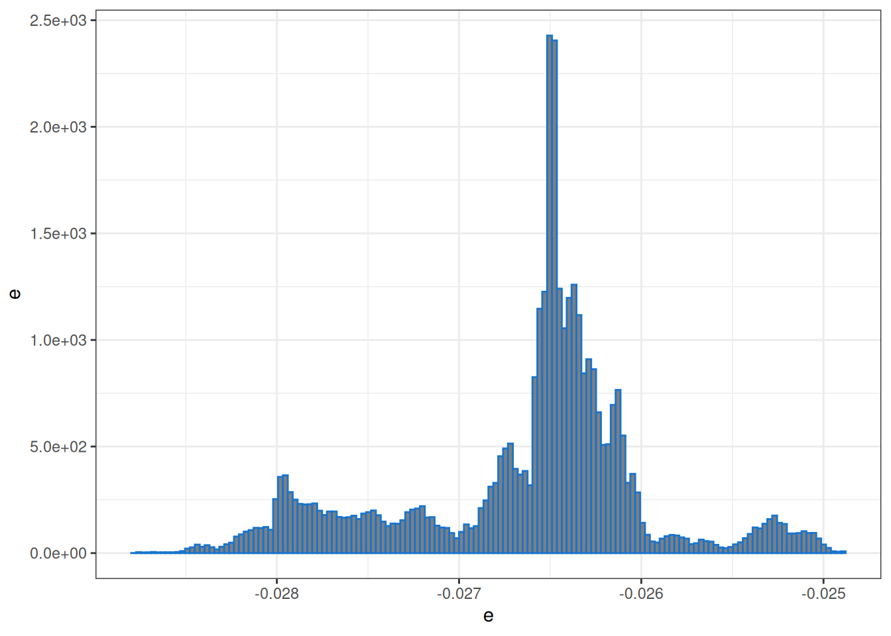

La idea de mantener un seguro está basada en la mutualización de los riesgos. La mutualización como tal nace del mismo mecanismo bajo el cual funciona un seguro, cada asegurado transfiera su riesgo individual a la compañía de seguros, la suma total de estos riesgos \(S\) es el riesgo total que asume el asegurador.
Los riesgos de cada uno de los \(n \in \N\) asegurados, pueden ser representados por variables aleatorias \(X_1,\ldots X_n\), las mismas pueden ser independientes o dependientes entre ellas. El costo total del portafolio está dado por la suma de todos estos riesgos: \[
S = \sum\limits_{i=1}^n X_i
\] El conocer la distribución del costo total \(S\) es una tarea crucial para el asegurador.
El valor esperado de los reclamos totales, puede ser calculado fácilmente utilizando las propiedades de linealidad de la esperanza matemática \(\E\): \[
\E[ S ]
= \E\left[ \sum\limits_{i=1}^n X_i \right]
= \sum\limits_{i=1}^n \E\left[ X_i \right]
\] La varianza de la variable aleatoria del costo total \(S\), está dada por: \[
\begin{split}
\V\left[ S \right]
& = \V\left[ \sum\limits_{i=1}^n X_i \right] \\
& = \sum\limits_{i=1}^n \V\left[ X_i \right]
+ \sum\limits_{i=1}^n \sum\limits_{j=1,j\neq i}^n \mathbb{C}\left[ X_i, X_j \right] \\
& = \sum\limits_{i=1}^n \V\left[ X_i \right]
+ 2\sum\limits_{i=1}^{n-1} \sum\limits_{j=i+1}^n \mathbb{C}\left[ X_i, X_j \right]
\end{split}
\]
Muchas de las veces el número total de reclamos \(n\) es incierto y por tal razón es mejor considerar que el número de siniestros vendrá dado por otra variable aleatoria discreta \(N\), que solo tomará valores en \(\N\). \[
S = \sum\limits_{i=1}^N X_i
\]
Esto nos lleva a considerar diferentes modelos de agregación de reclamos o pérdidas, en inglés “loss models” [1], [2].
Estudiemos la forma general que podría tener la distribución de \(S\), sin realizar hipótesis previa sobre el comportamiento de las variables aleatorias \(X_1, \ldots, X_n\) y \(N\). \[
\begin{split}
F_S( s )
& = P( S \leq s ) \\
& = P\left( \sum\limits_{i=1}^N X_i \leq s \right) \\
& = P\left( \sum\limits_{i=1}^N X_i \leq s \land N \in \N \right) \\
& = P\left( \bigcup\limits_{n\in \N} \left\{ \sum\limits_{i=1}^N X_i \leq s \land N \in \{n\} \right\}\right) \\
& = \sum\limits_{n=0}^{+\infty} P\left( \sum\limits_{i=1}^n X_i \leq s \land N = n \right)
\qquad \text{probabilidad de eventos disjuntos} \\
& = \sum\limits_{n=0}^{+\infty} P\left( \sum\limits_{i=1}^n X_i \leq s\ \middle|\ N = n \right) P( N = n )
\qquad \text{propiedades de la probabilidad condicional} \\
& = \sum\limits_{n=0}^{+\infty} \int\limits_{\left\{\sum\limits_{i=1}^n x_i \leq s\right\}} dF_n( x_1, \ldots, x_n )\ p_n
\qquad \text{$F_n$ es la distribución conjunta de $X_1, \ldots, X_n$ dado $N = n$}
\end{split}
\] La última expresión nos dice que para comprender el comportamiento de los reclamos totales \(S\), debemos estudiar y estimar la frecuencia de los reclamos \(N\), además de comprender y estimar cada uno de los reclamos \(X_i\) y su interacción, recordando que \(N\) puede tomar valores tendiendo al infinito. En términos resumidos, hay que comprender y estimar la frecuencia y severidad de los reclamos que están asociados al riesgo cubierto.
Los términos integrales \(\int\limits_{\left\{\sum\limits_{i=1}^n x_i \leq s\right\}} dF_n( x_1, \ldots, x_n )\) asociados a la severidad presentan un verdadero reto estadístico y computacional; años atrás se desarrollaron algoritmos para calcular estos términos [3], [4].
7.2 Modelo individual
Definition 7.1: Modelo individual
En el modelo individual de pérdida consideramos que el número de siniestros que se producirán es conocido, por ejemplo, puede ser a lo sumo el tamaño de la población asegurada, en tal caso la variable aleatoria \(N\) pasa a ser una constante, que representaremos por \(n\). De esta forma, la severidad total puede ser fácilmente representada por: \[
S = \sum\limits_{i=1}^n X_i
\]
La hipótesis más usual que sostiene a este modelo es la indenpendencia entre cada uno de los reclamos \(X_i\) y \(X_j\) para cualquier \(1 \leq i \neq j \leq n\).
El valor esperado de la severidad total \(S\) es: \[
\begin{split}
\E[S]
& = \E\left[ \sum\limits_{i=1}^n X_i \right] \\
& = \sum\limits_{i=1}^n \E\left[ X_i \right] \\
& = n \E[X] \quad \text{si $\{X_i\}$ son idénticamente distribuidas}
\end{split}
\]
Así mismo, la varianza de \(S\): \[
\begin{split}
\V\left[ S \right]
& = \V\left[ \sum\limits_{i=1}^n X_i \right] \\
& = \sum\limits_{i=1}^n \V\left[ X_i \right]
+ \sum\limits_{i=1}^n \sum\limits_{j=1,j\neq i}^n \mathbb{C}\left[ X_i, X_j \right] \\
& = \sum\limits_{i=1}^n \V\left[ X_i \right]\quad \text{si $\{X_i\}$ si son independientes entre si} \\
& = n \V\left[ X \right]\quad \text{si $\{X_i\}$ si son idénticamente distribuidas}
\end{split}
\]
Al tener un número determinado de reclamos \(n \in \N\), la distribución de probabilidad del total de reclamos \(S\) puede ser calculada de la forma más sencilla: \[
\begin{split}
F_S( x )
& = F_{X_1} \star \cdots \star F_{X_n} ( s )\quad \text{si $\{X_i\}$ son independientes} \\
& = F_{X}^{\star n}( s )\quad \text{si $\{X_i\}$ son idénticamente distribuidas}
\end{split}
\]
así mismo, si las densidades de probabilidad están bien definidas, entonces: \[
\begin{split}
f_S( s )
& = f_{X_1} \star \cdots \star f_{X_n} ( s )\quad \text{si $\{X_i\}$ son independientes} \\
& = f_{X}^{\star n}( s )\quad \text{si $\{X_i\}$ son idénticamente distribuidas}
\end{split}
\]
Una estrategia para estimar \(F_S\) o \(f_S\) es utilizar la transformada de Fourier \(\Fo\), la cual convierte las convoluciones en productos y luego invertir de nuevo la transformada de Fourier: \[
\begin{split}
F_S
& = \Fo^{-1}\left( \Fo\left( F_S \right) \right) \\
& = \Fo^{-1}\left( \Fo\left( F_{X_1} \star \cdots \star F_{X_n} \right) \right)
\quad \text{si $\{X_i\}$ son independientes} \\
& = \Fo^{-1}\left( \prod\limits_{i=1}^n \Fo\left( F_{X_i} \right) \right) \\
& = \Fo^{-1}\left( \Fo\left( F_{X} \right)^n \right)
\quad \text{si $\{X_i\}$ si son idénticamente distribuidas }
\end{split}
\]
de forma equivalente para la densidad \(f_S\): \[
\begin{split}
f_S
& = \Fo^{-1}\left( \Fo\left( f_S \right) \right) \\
& = \Fo^{-1}\left( \Fo\left( f_{X_1} \star \cdots \star f_{X_n} \right) \right)
\quad \text{si $\{X_i\}$ son independientes} \\
& = \Fo^{-1}\left( \prod\limits_{i=1}^n \Fo\left( f_{X_i} \right) \right) \\
& = \Fo^{-1}\left( \Fo\left( f_{X} \right)^n \right)
\quad \text{si $\{X_i\}$ si son idénticamente distribuidas }
\end{split}
\] Por otra parte, la función característica de la variable aleatoria \(S\), está dada para todo \(t \in \R\): \[
\begin{split}
\varphi_S( t )
& = \E\left[ \exp\left( it S \right) \right] \\
& = \E\left[ \exp\left( it \sum\limits_{i=1}^n X_i \right) \right] \\
& = \E\left[ \prod\limits_{i=1}^n \exp\left( it X_i \right) \right] \\
& = \prod\limits_{i=1}^n \E\left[ \exp\left( it X_i \right) \right],\quad
\text{si $\{X_i\}$ son independientes} \\
& = \prod\limits_{i=1}^n \varphi_{X_i}\left( t \right) \\
& = \varphi_{X}\left( t \right)^n,\quad
\text{si $\{X\}$ son identicamente distribuidas} \\
\end{split}
\]
7.2.1 Algoritmo de simulación
Se puede simular la severidad total \(S\) para el caso donde se asume independencia entre cada una de las severidades \(X_1, \ldots, X_n\) y se conoce cada una de sus densidades de probabilidad \(f_{X_1}, \ldots, f_{X_n}\) o distribuciones de probabilidad \(F_{X_1}, \ldots, F_{X_n}\).
Los pasos son los siguientes:
Se tiene fijo \(n \in \N\),
Se fija el número de simulaciones \(m \in \N\)
Para cada \(i \in \{1, \ldots, m\}\) se extrae una muestra \(X_{i,1} \rightsquigarrow f_{X_1},\ldots,X_{i,n} \rightsquigarrow f_{X_n}\),
Para cada \(i \in \{1, \ldots, m\}\) se calcula la severidad total para la muestra \(i\), \(S_i = \sum\limits_{j=1}^n X_{i,j}\)
El siguiente código ejemplifica el algoritmo anterior, donde se asume que cada variable aleatoria de severidad \(X_i\) sigue una ley log-normal \(LN( \mu_i, \sigma_i )\) con parámetros \(\mu_i, \sigma_i\), para cada \(i \in \{1,\ldots, n\}\). El reclamo total \(S = \sum\limits_{i=1}^n X_i\) sigue una ley de probabilidad que estará dada por la convolución de cada una de las leyes de probabilidad de cada reclamo \(X_i\), sin embargo estas leyes en este ejemplo son log-normales y no se conoce una forma explícita analítica para la convolución de log-normales. Por tal razón, debemos aproximar la distribución de probabilidad de \(F_S\) a partir de la distribución empírica.
Code
set.seed(94312)# 1. número de distribucionesn <-200# parámetros para las n distribucionesmu <-seq( 1, 2, length.out = n )sigma <-seq( 2, 3, length.out = n )# 2. número de simulacionesm <-1e3# 3. simulación de severidadesX <-lapply( X =1:m, FUN =function( i ) {return( sapply( 1:n, FUN =function( j ) rlnorm( 1, meanlog = mu[ j ], sdlog = sigma[ j ] ) ) ) } )# 4. simulación de severidad totalS <-sapply( X, FUN = sum )
Como mencionamos, en este ejemplo, la densidad de probabilidad de la severidad \(S\) resulta de la convolución de las \(n\) densidades individuales \(f_S = f_{X_1} \star \cdots \star f_{X_n}\), la cual no presenta una forma analítica conocida.
De la imposibilidad anterior, se puede ver la utilidad de trabajar con la muestra aleatoria de la variable \(S\). De esta manera, se puede estimar la distribución acumulada de probabilidad \(F_S\) a partir de la distribución empírica \(F_m\) generada con la muestra \(\{S_i\}\). \[
F_S( s ) \approx F_m( s ) = \frac{1}{m} \sum\limits_{i=1}^m \mathbf {1}_{(-\infty,s]}( S_i )
\] el resultado de concentración 5.32 nos brinda un criterio de convergencia de \(F_m\) a \(F_S\)
Para construir \(F_m\) en R, se puede utilizar la función ya empaquetada ecdf (empirical cumulative distribution function).
Code
# estimación distribución acumulada empírica de SFm <-ecdf( S )# esperanza empíricaEeS <-mean( S )# esperanza teóricaES <-sum( sapply( 1:n, FUN =function( i ) exp( mu[i] +0.5* sigma[i]^2 ) ) )s <-sort( unique( S ) )Fms <-sapply( s, FUN = Fm )
Para calcular la esperanza de la severidad total \(S\), también se puede usar una aproximación a la integral de Riemann-Stieltjes utilizando la distribución acumulada empírica \(F_m\). \[
\E[ S ] = \int\limits_{\R} s dF_S( s )
\approx \int\limits_{\R} s dF_m( s )
\approx \sum\limits_{i=1}^N s_{i} \left( F_m( s_{i+1} ) - F_m( s_{i} ) \right)
\]
Esta aproximación en R puede ser implementada de la siguiente forma:
Code
N <-1e5s <-seq( min( S ), max( S ), length.out = N )EmS <-sum( s[-N] *diff( sapply( s, FUN = Fm ) ) )
De ello, tenemos los siguientes resultados de cálculo para el valor esperado de la severidad total: \[
\begin{split}
\E[S] = \sum\limits_{i=1}^n e^{ \mu_i + \frac{1}{2} \sigma_i^2 } & = 34562.7208, \\
\overline{S} = \frac{1}{m} \sum\limits_{i=1}^m S_i & = 33515.9195, \\
\sum\limits_{i=1}^N s_{i} \left( F_m( s_{i+1} ) - F_m( s_{i} ) \right) & = 33494.1981
\end{split}
\]
Lo bueno de poseer una buena aproximación a la distribución acumulada de una variable aleatoria, es que podemos calcular otros valores de importancia relacionados a la variable aleatoria y no tan solo utilizar medidas de tendencia central. Sin embargo, para que esta aproximación sea útil se requiere reducir el error de probabilidad 5.32.
Podemos considerar el caso sencillo donde el valor posible de severidad es determinista, es decir para cada póliza \(i\in \{1,\ldots,n\}\), el valor de severidad probable es único \(M > 0\) si en caso se da un evento \(A_i\), esto lo podemos expresar como \(X_i = M \mathbf{1}_{A_i}\) donde M es constante. Así, la pérdida total está dada por: \[
S = \sum\limits_{i=1}^n X_i = \sum\limits_{i=1}^n M \mathbf{1}_{A_i}
\]
El valor total esperado de reclamos está dado por: \[
\E[ S ]
= \sum\limits_{i=1}^n \E\left[ M \mathbf{1}_{A_i} \right]
= M \sum\limits_{i=1}^n P( A_i )
\] la última igualdad resulta de las propiedades de la función indicatriz 5.11.
Si en caso todos los \(P(A_i) = p\) tienen la misma probabilidad, el valor total esperado de reclamos toma la siguiente forma: \[
\E[S] = n M p
\]
7.3 Modelo colectivo
Definition 7.2: Modelo colectivo
El modelo colectivo de riesgo considera un número de reclamos descritos por una variable aleatoria discreta \(N\). Los reclamos corresponden a un número de pólizas en un periodo específico, el valor de cada reclamo \(i \in \{1,\ldots,N\}\) está representado por las variables aleatorias \(X_i\). Usualmente, se considera que cada uno de los reclamos \(X_i\) están idénticamente distribuidos. \[
S =
\left\{
\begin{array}{ll}
\sum\limits_{i=1}^N X_i & \text{si}\ N > 0 \\
0 & \text{si}\ N = 0
\end{array}
\right.
\] o de forma más compacta, se puede definir \(S = \sum\limits_{i=1}^N X_i\), donde se asume que la suma es igual a \(0\) si el número de elementos en la suma \(N = 0\).
El valor esperado del total de reclamos \(S\), está dado por: \[
\begin{split}
\E[S]
& = \E\left[ \sum\limits_{i=1}^N X_i \right] \\
& = \sum\limits_{n=0}^{+\infty} \E\left[ \sum\limits_{i=1}^n X_i\ \middle|\ N = n \right]P( N = n )
\quad \text{utilizando la esperanza condicional} \\
& = 0 P( N = 0 ) + \sum\limits_{n=1}^{+\infty} \E\left[ \sum\limits_{i=1}^n X_i\ \middle|\ N = n \right]P( N = n ) \\
& = \sum\limits_{n=1}^{+\infty} \sum\limits_{i=1}^n \E\left[ X_i \mid N = n \right]P( N = n )
\quad \text{linealidad de la esperanza} \\
& = \sum\limits_{n=0}^{+\infty} n \E\left[ X \mid N = n \right]P( N = n )
\quad \text{si $\{X_i\}$ son idénticamente distribuidas} \\
& = \E\left[ X \right] \sum\limits_{n=0}^{+\infty} n P( N = n )
\quad \text{si $X$ y $N$ son independientes} \\
& = \E[ N ] \E[ X ]
\end{split}
\]
También podemos calcular la varianza de los reclamos totales \(S\), para ello necesitamos calcular su segundo momento: \[
\begin{split}
\E[S^2]
& = \E\left[ \left( \sum\limits_{i=1}^N X_i \right)^2 \right] \\
& = \sum\limits_{n=0}^\infty \E\left[ \sum\limits_{i, j=1}^n X_i X_j \middle| N = n \right] P( N = n )
\quad \text{propiedades de la esperanza condicional} \\
& = \sum\limits_{n=0}^\infty \sum\limits_{i, j=1}^n \E\left[ X_i X_j \right] P( N = n )
\quad \text{si $\{X_i\}$ y $N$ son independientes} \\
& = \sum\limits_{n=0}^\infty \left( \sum\limits_{i=1}^n \E\left[ X_i^2 \right]
+ \sum\limits_{i,j=1,i\neq j}^n \E\left[ X_i X_j \right] \right) P( N = n ) \\
& = \sum\limits_{n=0}^\infty \left( n \E\left[ X^2 \right] + n(n-1) \E\left[ X \right]^2 \right) P( N = n )
\quad \text{si $\{X_i\}$ son i.i.d} \\
& = \E\left[N\right] \E\left[X^2\right] + \E\left[N^2\right] \E\left[X\right]^2
- \E\left[N\right] \E\left[X\right]^2 \\
& = \E\left[N\right] \V\left[X\right] + \E\left[N^2\right] \E\left[X\right]^2
\end{split}
\]
finalmente la varianza de \(S\) tiene la siguiente expresión: \[
\begin{split}
\V\left[S\right]
& = \E\left[S^2\right] - \E\left[S\right]^2 \\
& = \E\left[N\right] \V\left[X\right]
+ \E\left[N^2\right] \E\left[X\right]^2 - \E\left[N\right]^2 \E\left[X\right]^2 \\
& = \E\left[N\right] \V\left[X\right] + \V\left[N\right] \E\left[X\right]^2
\end{split}
\]
La distribución acumulada del reclamo total \(S\) tiene la forma: \[
\begin{split}
F_S( s )
& = P( S \leq s ) \\
& = P\left( \sum\limits_{i=1}^N X_i \leq s \right) \\
& = \sum\limits_{n=0}^{+\infty} P\left( \sum\limits_{i=1}^n X_i \leq s \middle| N = n \right) P( N = n )\quad
\text{utilizando la probabilidad condicional} \\
& = \sum\limits_{n=0}^{+\infty} P\left( \sum\limits_{i=1}^n X_i \leq s \right) p_n\quad
\text{si $X_i$ y $N$ son independientes} \\
& = \sum\limits_{n=0}^{+\infty} F_{X_1} \star \cdots \star F_{X_n}( s ) p_n\quad
\text{si $\{X_i\}$ son independientes} \\
& = \sum\limits_{n=0}^{+\infty} F^{\star n}_{X}( s ) p_n\quad
\text{si $\{X_i\}$ son idénticamente distribuidas}
\end{split}
\] tomando \(F^{\star 0}_{X}( s ) = 1\).
El último resultado muestra que la distribución de probabilidad de \(S\) no es más que una mixtura de las distribuciones para los modelos individuales \(F^{\star n}_{X}\), tomando para mezclarlas las probabilidades \(p_n = P( N = n )\) de la variable aleatoria discreta \(N\) que describe la frecuencia de los reclamos.
Al igual que para el modelo individual, podemos estimar \(F_S\) o \(f_S\) utilizando la transformada de Fourier \(\Fo\): \[
\begin{split}
F_S
& = \Fo^{-1}\left( \Fo\left( F_S \right) \right) \\
& = \Fo^{-1}\left( \Fo\left( \sum\limits_{n=0}^{+\infty} F_{X_1} \star \cdots \star F_{X_n}( s ) p_n \right) \right)
\quad \text{si $\{X_i\}$ son independientes} \\
& = \Fo^{-1}\left( \sum\limits_{n=0}^{+\infty} \prod\limits_{i=1}^n \Fo\left( F_{X_i} \right) p_n \right) \\
& = \Fo^{-1}\left( \sum\limits_{n=0}^{+\infty} \Fo\left( F_{X} \right)^n p_n \right)
\quad \text{si $\{X_i\}$ si son idénticamente distribuidas }
\end{split}
\]
de forma equivalente para la densidad \(f_S\): \[
\begin{split}
f_S
& = \Fo^{-1}\left( \Fo\left( f_S \right) \right) \\
& = \Fo^{-1}\left( \Fo\left( \sum\limits_{n=0}^{+\infty} f_{X_1} \star \cdots \star f_{X_n}( s ) p_n \right) \right)
\quad \text{si $\{X_i\}$ son independientes} \\
& = \Fo^{-1}\left( \sum\limits_{n=0}^{+\infty} \prod\limits_{i=1}^n \Fo\left( f_{X_i} \right) p_n \right) \\
& = \Fo^{-1}\left( \sum\limits_{n=0}^{+\infty} \Fo\left( f_{X} \right)^n p_n \right)
\quad \text{si $\{X_i\}$ si son idénticamente distribuidas }
\end{split}
\]
En la práctica es imposible realizar la suma hasta infinito, por esto, se puede utilizar una aproximación escogiendo un número máximo \(M \in \N\) de términos en la suma, obteniendo así las aproximaciones.
Por otra parte, la función característica de la variable aleatoria \(S\), está dada para todo \(t \in \R\): \[
\begin{split}
\varphi_S( t )
& = \E\left[ \exp\left( it S \right) \right] \\
& = \E\left[ \exp\left( it \sum\limits_{i=1}^N X_i \right) \right] \\
& = \sum\limits_{n=0}^{+\infty}
\E\left[ \exp\left( it \sum\limits_{i=1}^n X_i \right) \middle| N = n \right] P( N = n ) \\
& = \sum\limits_{n=0}^{+\infty}
\E\left[ \prod\limits_{i=1}^n \exp\left( it X_i \right) \middle| N = n \right] p_n \\
& = \sum\limits_{n=0}^{+\infty} \prod\limits_{i=1}^n
\E\left[ \exp\left( it X_i \right) \middle| N = n \right] p_n,\quad
\text{si $\{X_i\}$ son independientes} \\
& = \sum\limits_{n=0}^{+\infty} \prod\limits_{i=1}^n \varphi_{X_i}\left( t \right) p_n,\quad
\text{si $\{X_i\}$ y $N$ son independientes} \\
& = \sum\limits_{n=0}^{+\infty} \varphi_{X}\left( t \right)^n p_n,\quad
\text{si $\{X\}$ son identicamente distribuidas} \\
& = \E\left[ \varphi_{X}\left( t \right)^N \right] \\
& = \E\left[ \exp\left( N \log\left( \varphi_{X}\left( t \right) \right) \right) \right] \\
& = \varphi_N\left( -i\log\left( \varphi_{X}\left( t \right) \right) \right) \\
\end{split}
\]
7.3.1 Algoritmo de simulación
La variable del reclamo total \(S\) puede ser simulada mediante el siguiente método montecarlo:
Si \(N\) sigue una ley discreta \(f_N\) y cada valor severidad \(X\) son idénticamente distribuidos con ley \(f_X\).
Seleccionar el número de simulaciones \(m\),
Se genera una muestra de tamaño \(m\) de variables \(N_1, \ldots, N_m\) con ley \(f_N\),
Se genera para cada \(i \in \{1,\ldots,m\}\) una muestra de tamaño \(N_i\) de variables aleatorias \(X_{i,1}, \ldots X_{i,N_i}\) con ley \(f_X\),
Se calcula los reclamos totales \(S_1, \ldots, S_m\) para cada simulación \(i = \{1, \ldots, m\}\), mediante la siguiente suma \(S_i = \sum\limits_{j=1}^{N_i} X_{i,j}\).
En el lenguaje de programación R, este método de simulación puede ser fácilmente implementado, utilizando las funciones de aplicación vectorial sapply y lapply.
Consideramos el caso de un modelo colectivo para el cuál el conteo de siniestros \(N \rightsquigarrow Pois( \lambda )\) y la distribución de cada uno de los reclamos \(\{X_i\}_{i\in \N}\), está dada por la misma distribución de probabilidad \(X \rightsquigarrow LN( \mu, \sigma )\), siendo además cada uno de los reclamos independientes entre si.
Code
# 1. selección de simulacionesm <-1e4# 2. especificación de los parámetros para las distribucionesu <-5s <-2l <-3# 3. simulación del conteo de siniestrosN <-rpois( n = m, lambda = l )# 4. simulación de la severidad de los reclamosX <-lapply( N, FUN =function( n ) rlnorm( n, meanlog = u, sdlog = s ) )# 5. reclamo total, agregación por cada simulaciónS <-sapply( X, FUN =function( x ) sum( x, na.rm =TRUE ) )
Es de notar que un algoritmo como el descrito anteriormente tiene una falencia cuando la frecuencia de siniestros es poco observada, esto sucede cuando la probabilidad \(P( N = 0 )\) es alta y por tal razón para generar suficientes reclamos y así poder tener cálculos con una buena aproximación numérica, se necesitarán muchas simulaciones.
Para ciertos casos particulares, el modelo colectivo puede ser muchas veces calculado de forma similar a un modelo individual. Por ejemplo, si consideramos el caso cuando la variable aleatoria del conteo de siniestros \(N \rightsquigarrow Bin( n, p )\) sigue una distribución binomial con parámetros \(n\) y \(p\) y los reclamos individuales \(\{ X_i \}\) son i.i.d. A partir de esto, el reclamo total \(S\) puede ser expresado de dos formas: \[
S = \sum\limits_{k=0}^{N} X_k
= \sum\limits_{k=0}^n B_k X_k
\] donde las variables aleatorias \(B_k \rightsquigarrow Ber( p )\) son independientes de las variables aleatorias \(X_k\) de cada uno de los reclamos. Así el modelo colectivo se transforma en un modelo individual con \(n\) constante y valores de reclamos individuales dados por la variable aleatoria \(Y_k = B_k X_k\).
Para este caso en particular: \[
\begin{split}
\E[ S ]
& = \E\left[ \sum\limits_{k=0}^{n} B_k X_k \right] \\
& = \sum\limits_{k=0}^{n} \E\left[ B_k X_k \right] \\
& = n \E[ B X ] \\
& = n \E[ B ] \E[ X ] \\
& = n p \E[ X ]
\end{split}
\]
así mismo: \[
\begin{split}
\V[ S ]
& = n \V[ B X ] \\
& = n \left( \E[ B^2 X^2 ] - \E[ B X ]^2 \right) \\
& = n \left( \E[ B^2 ] \E[ X^2 ] - \E[ B ]^2 \E[ X ]^2 \right) \\
& = n \left( p \E[ X^2 ] - p^2 \E[ X ]^2 \right) \\
& = n \left( p \E[ X^2 ] - p \E[ X ]^2 + p \E[ X ]^2 - p^2 \E[ X ]^2 \right) \\
& = n \left( p \V[ X ] + p ( 1 - p ) \E[ X ]^2 \right) \\
& = n \left( \E[B] \V[ X ] + \V[B] \E[ X ]^2 \right)
\end{split}
\]
Hacemos uso del algoritmo de simulación, pero bajo la consideración anterior donde el conteo de siniestros \(N \rightsquigarrow Bin( n, p )\), en algunos casos se puede considerar \(n\) como el número de pólizas vendidas, esto supone que solo se presenta un reclamo por póliza. Por su parte, consideraremos los reclamos \(X_i \rightsquigarrow LN( \mu, \sigma )\), para todo \(i \in \{1,\ldots,n\}\).
Si consideramos generar la simulación como un modelo individual, generamos variables aleatorias \(B_i \rightsquigarrow Ber(p)\), para todo \(i \in \{1,\ldots,n\}\).
Code
m <-1e4n <-1000p <-0.2mu <-5sigma <-2B <-lapply( 1:m, FUN =function( i ) rbinom( n, size =1, prob = p ) )X <-lapply( 1:m, FUN =function( i ) rlnorm( n, meanlog = mu, sdlog = sigma ) )S <-sapply( 1:m, FUN =function( i ) sum( B[[ i ]] * X[[ i ]], na.rm =TRUE ) )EeS <-mean( S )ES <- n * p *exp( mu +0.5* sigma^2 )
Es importante observar que si la frecuencia de reclamos es superior a \(1\), sea esta por póliza, individuo o en general por unidad asegurada, la aproximación anterior no es la correcta si no se realiza un ajuste al valor \(n\) que es el número máximo de siniestros. También, se puede considerar que las variables de los reclamos es la suma total de reclamos por póliza.
Por otra parte, es de notar que en el cálculo hay un gasto innecesario de valores simulados de reclamos \(X_i\), ya que algunos se multiplicaran por \(B_i\), la cual solo toma valores \(\{0,1\}\).
7.4 Modelos mixtos
Definition 7.3: Modelo mixto
En algunos casos en particular se considera un modelo de agregación que es una mixtura entre el modelo individual y el modelo colectivo. Se parte de considerar un número \(n\) de unidades aseguradas, donde para cada unidad \(i \in \{1, \ldots, n\}\) se considera que puede presentar una cantidad de reclamos dados por una variable aleatoria discreta \(N_i\), cada uno de las \(i\) unidades pueden presentar un número de reclamos \(X_{i,1}, \ldots, X_{i,N_i}\). De agregar el total de reclamos, se tiene la expresión: \[
S
= \sum\limits_{i=1}^n \sum\limits_{j=1}^{N_i} X_{i,j}
\]
Si en caso todos los reclamos \(X_{i,j}\) son idénticamente distribuidos entre unidades aseguradas y reclamos, entonces el reclamo total anterior puede ser visto como un modelo colectivo de pérdida: \[
S
= \sum\limits_{j=1}^{N} X_j
\] tomando el conteo de siniestros como la variable aleatoria \(N = \sum\limits_{i=1}^n N_i\).
El mismo modelo mixto, también puede ser interpretado como un modelo individual de pérdida, con una suma constante de siniestros. \[
S
= \sum\limits_{i=1}^n Y_i
\]
donde cada variable aleatoria \(Y_i = \sum\limits_{j=1}^{N_i} X_{i,j}\).
7.5 Teorema del límite central y su uso
En varias situaciones es difícil determinar la distribución de los reclamos totales \(S\), como ya hemos visto no hay una forma explícita sencilla.
Para tener una primera aproximación a la distribución, se puede utilizar el teorema del límite central 5.28, para ello se requiere un gran número de elementos en la suma de los reclamos totales \(S\). Como ya lo muestra la desigualdad 5.31, la convergencia requiere un número de términos inversamente proporcional al cuadrado del error de aproximación. Sin embargo, si en caso el número de reclamos \(n\) no es lo suficientemente grande como para obtener un error de aproximación deseado, podemos hacer uso de un resultado más fuerte como la desigualdad de concentración de 5.31, la misma no solo implica el teorema del límite central, sino que además proporciona una acotación y velocidad de convergencia conforme se aumenta \(n\). Esta desigualdad puede ser de gran utilidad para tener una acotación de la distribución de los reclamos totales, para cualquier valor de \(n\).
Más claramente, para el caso del modelo individual, donde \(n\) es una constante, el teorema 5.31 nos proporciona la siguiente desigualdad: \[
\begin{split}
\underset{u\in \R}{\sup}\left( 1 + |u|^3 \right)\left| P\left( \frac{S - \E[S]}{\sqrt{\V[S]}} \leq u\right) - \Phi( u ) \right|
& \leq \frac{C}{\sqrt{n}} \frac{\E\left[\left|X - \E[X]\right|^3\right]}{\sqrt{\V[X]}^3} \\
\left( 1 + |u|^3 \right)\left| P\left( \frac{S - \E[S]}{\sqrt{\V[S]}} \leq u\right) - \Phi( u ) \right|
& \leq \frac{C}{\sqrt{n}} \frac{\E\left[\left|X - \E[X]\right|^3\right]}{\sqrt{\V[X]}^3},\qquad \forall u \in \R \\
\end{split}
\] Para simplificar la manipulación de las expresiones podemos tomar: \(\tau = \frac{\E\left[\left|X - \E[X]\right|^3\right]}{\sqrt{\V[X]}^3}\)\[\begin{gather*}
-\frac{C}{\sqrt{n}} \tau
\leq \left( 1 + |u|^3 \right)\left( P\left( \frac{S - \E[S]}{\sqrt{\V[S]}} \leq u\right) - \Phi( u ) \right)
\leq \frac{C}{\sqrt{n}} \tau \\
\Phi( u ) - \frac{C}{\sqrt{n}\left( 1 + |u|^3 \right)} \tau
\leq P\left( \frac{S - \E[S]}{\sqrt{\V[S]}} \leq u\right)
\leq \Phi( u ) + \frac{C}{\sqrt{n}\left( 1 + |u|^3 \right)} \tau \\
\Phi( u ) - \frac{C}{\sqrt{n}\left( 1 + |u|^3 \right)} \tau
\leq P\left( S \leq \E[S] + \sqrt{\V[S]} u\right)
\leq \Phi( u ) + \frac{C}{\sqrt{n}\left( 1 + |u|^3 \right)} \tau \\
\max\left( \Phi\left( \frac{s - \E[S]}{\sqrt{\V[S]}} \right) - \frac{C}{\sqrt{n}\left( 1 + \left| \frac{s - \E[S]}{\sqrt{\V[S]}} \right|^3 \right)} \tau, 0 \right)
\leq P\left( S \leq s \right)
\leq \min\left( \Phi\left( \frac{s - \E[S]}{\sqrt{\V[S]}} \right) + \frac{C}{\sqrt{n}\left( 1 + \left|\frac{s - \E[S]}{\sqrt{\V[S]}}\right|^3 \right)} \tau, 1 \right)
\end{gather*}\] cambiando la variable \(s = \E[S] + \sqrt{\V[S]} u\). El \(\max\) y \(\min\) resultan debido a que una probabilidad siempre está acotada en el rango de \(0\) a \(1\).
El ejemplo a continuación muestra un claro uso del resultado anterior.
En este caso en particular consideramos un modelo individual con reclamos determinados por variables aleatorias que siguen una distribución \(LN( \mu, \sigma )\) y un número de \(n = 7000\) reclamos. Además, como es usual asumimos que las variables aleatorias de los reclamos \(X_1, \ldots, X_n\) son i.i.d.
Code
n <-7e3mu <-4.0sigma <-2.0EX <-exp( mu +0.5* sigma^2 )VX <- ( exp( sigma^2 ) -1 ) *exp( 2* mu + sigma^2 )ES <- n * EXVS <- n * VX# utilizamos simulación, no hay forma analítica para la distribución de la suma de log-normalesm <-5e3S <-sapply( 1:m, FUN =function( i ) sum( rlnorm( n, meanlog = mu, sdlog = sigma ) ) )FS <-ecdf( S ) C <-0.7655+8* ( 1+exp(1) ) # constante universal del teoremaf <-function( x ) ( abs( x - EX )^3 ) *dlnorm( x, meanlog = mu, sdlog = sigma )# forzando este término, la distribución log-normal no tiene función generadora de momentostau <-integrate( f = f, lower =0, upper =1e10, subdivisions =1e4, rel.tol =1e-10 )$value /sqrt( VX )^3s <-seq( 0, 6e6, length =5000 )Fms <-sapply( s, FUN = FS )u <- ( s - ES ) /sqrt( VS )r <-1+abs( u )^3Fmax <-pmin( pnorm( u ) + C * tau / ( sqrt( n ) * r ), 1 ) # cota superiorFmin <-pmax( pnorm( u ) - C * tau / ( sqrt( n ) * r ), 0 ) # cota inferiorPhi <-sapply( s, FUN =function( s ) pnorm( ( s - ES ) /sqrt( VS ) ) )
Como se puede ver en el siguiente gráfico, la acotación funciona muy bien y al aumentar el número de siniestros \(n\) se disminuye el rango de la acotación, proporcionando así una mejor estimación de la distribución de los reclamos totales \(S\).
Es de notar que las variables aleatorias de los reclamos pueden seguir cualquier otra distribución, el método no depende de la distribución en cuestión, sino de que la variable que representa los reclamos tenga esperanza finita, varianza finita y la variación de tercer orden \(\E\left[\left|X - \E[X]\right|^3 \right] < +\infty\), también sea finita.
En la práctica se suele tomar lo que se conoce como una aproximación por el teorema de límite central.
\[
P( S \leq s )
\approx \Phi\left( \frac{s - \E[S]}{\sqrt{\V[S]}} \right)
\]
Esto es válido siempre y cuando la cota del error de aproximación \(\frac{C}{\sqrt{n}\left( 1 + \left|\frac{s - \E[S]}{\sqrt{\V[S]}}\right|^3 \right)} \tau\), sea lo suficientemente pequeña. Además, es de notar que se está trabajando con valores que solo están entre \(0\) y \(1\), pequeñas variaciones pueden ser muy relevantes al nivel del ajuste de las distribuciones acumuladas.
Finalmente, debemos tomar en cuenta que las cotas, superior como inferior, no son funciones de de distribución acumuladas en la variable \(s\), no necesariamente son siempre crecientes.
7.6 Aplicación del deducible
En muchas ocasiones según las condiciones de los contratos de seguro y el apetito de riesgo del asegurador, se configura funciones deducibles sobre los reclamos. El objetivo de aplicar un deducible es evitar valores de reclamo en determinados rangos que no están acorde a las configuraciones y estructuración de productos de seguro. Por ejemplo, se puede colocar un deducible para evitar el pago de valores muy pequeños de reclamos, cuya atención incluso puede implicar costos operativos o administrativos mayores al valor mismo de los reclamos, ante esta situación se coloca una cota mínima para que de esta forma el asegurado se haga cargo por su cuenta de estos valores menores.
Es usual colocar mínimos en las colas de la distribución de reclamos, evitando así valores muy pequeños o valores muy grandes, pero no sería sustentable, ni financieramente o económicamente, el colocar un deducible justo donde se presenta la mayor parte de los valores de reclamos. Desde la perspectiva de un asegurado, ¿De qué serviría adquirir una póliza que no cubre precisamente los siniestros más usuales?, esta no sería una póliza apetecible en el mercado y por otra parte un producto difícil de comercializar.
Definition 7.4: Deducible
Formalmente, un deducible es una función \(D : \R \longrightarrow \R\) a valores reales, tal que para todo valor real \(x \in \R\), se satisface la siguiente desigualdad: \(D( x ) \leq x\).
A continuación presentamos un lista de funciones deducibles más comunes que presenta el mercado:
Para evitar pérdidas pequeñas se suele configurar la función deducible \[
D( X ) = \max( X - d, 0 )
\] que se aplicará sobre las variables aleatorias de los reclamos \(X \rightsquigarrow F_X\). Así, el valor ya deducido \(Z = D( X ) \rightsquigarrow F_Z( z )\), donde \[
F_Z( z ) = \mathbf{1}_{[0,+\infty)}( z ) F_X( z + d )
\]
Para prevenir los excesos de pérdida (stop loss) se propone el deducible con un tope máximo dado por una constante \(M > 0\), el cual se aplica a las variables aleatorias de los reclamos \(X \rightsquigarrow F_X\): \[
D( X ) = \min( X, M )
\],
en este caso, si la variable aleatoria del pago correspondiente al reclamo ya deducido \(Z = D( X ) \rightsquigarrow F_Z( z )\), donde: \[
F_Z( z ) = \mathbf{1}_{(-\infty,M)}( z ) F_X( z ) + \mathbf{1}_{[M,+\infty)}( z )
\]
Caso mixto para evitar pérdidas pequeñas y exceso de pérdida, se propone la siguiente composición de deducibles que se aplicará sobre las variables aleatorias de los reclamos \(X \rightsquigarrow F_X\): \[
D( X ) = \min( \max( X - d, 0 ), M )
\] en este caso, si la variable aleatoria del pago correspondiente al reclamo ya deducido \(Z = D( X ) \rightsquigarrow F_Z( z )\), tenemos que \(Z \rightsquigarrow F_Z\), con: \[
F_Z( z ) = \mathbf{1}_{[0,M)}( z ) F_X( z + d ) + \mathbf{1}_{[M,+\infty)}( z )
\]
Code
D <-function( x, M ) return( min( max( x - d ), M ) )d <-50M <-150alpha <-2gamma <-4tau <-5theta <-80n <-1e3xmax <-5e2x <-seq( 0, xmax, length = n )FX <-sapply( x, FUN =function( x ) ptrbeta( x, shape1 = alpha, shape2 = gamma, shape3 = tau, scale = theta ) )FDX <-sapply( x, FUN =function( x ) ifelse( x < M & x >= d, 1, 0 ) *ptrbeta( x + d, shape1 = alpha, shape2 = gamma, shape3 = tau, scale = theta ) +ifelse( x >= M, 1, 0 ) )plt <-ggplot( ) +geom_line( aes( x = x, y = FX, colour ='a' ), linewidth =2 ) +geom_line( aes( x = x, y = FDX, colour ='b' ), linewidth =1 ) +scale_colour_manual( breaks =c( 'a', 'b' ), values =c( 'dodgerblue3', 'red3' ) ) +scale_x_continuous( breaks =seq( 0, xmax, length =11 ),labels =formatC( seq( 0, xmax, length =11 ), digits =2, format ='f' ), limits =c( 0, xmax ), expand =c( 0, 0 ) ) +scale_y_continuous( breaks =seq( 0, 1, length =11 ),labels =formatC( seq( 0, 1, length =11 ), digits =2, format ='f' ), limits =c( 0.0, 1.0 ), expand =c( 0.005, 0.005 ) ) +xlab( TeX( "$x$" ) ) +ylab( TeX( "$F_X, F_{D(X)}$" ) ) +theme_bw() +theme( legend.position ="none" )plot( plt )
Otro tipo de deducible acota el número de pagos de reclamos a un número fijo máximo de reclamos, es decir, se establece un deducible en función de la frecuencia. Usualmente, esto se realiza cuando se considera un modelo donde se dispone de la frecuencia de reclamos por póliza. \[
D(N) = \min( N, W )
\] con la constante \(W \in \N\). Para el reclamo total, si se considera un portafolio con \(n\) pólizas tenemos las siguiente variación del modelo: \[
S = \sum\limits_{i=1}^n \sum\limits_{j=1}^{D(N_i)} X_{i,j}
\]
En otros casos más elaborados se segmenta el riesgo cubierto, al existir variables explicativas de la naturaleza del riesgo \(Y_1, \ldots, Y_m\), las cuales pueden tomar valores en un conjunto \(E\) solo se toma un subconjunto de valores posibles \(A\subset E\), para los cuales es válida la cobertura. Así, si un reclamo \(X\) se explica o caracteriza por las variables anteriores, se configura el deducible: \[
D( X ) = \mathbf{1}_{A}\left( Y_1, \ldots, Y_m \right) X
\]
Un ejemplo del anterior deducible se da en el caso de seguros de salud, donde se cubre ciertos tipos de enfermedades, usualmente se evita las enfermedades de tipo catastrófico que estén ya presentes; en otros productos se evita los gastos odontológicos, etc.
Los deducibles, pueden ser configurados de forma genérica para todos los asegurados o incluso de forma personalizada por asegurado, según los productos que estos han adquirido. En general, al emplear deducibles para cada uno de los reclamos individuales, el reclamo total \(S\) se ve modificado, y toma la forma: \[
S = \sum\limits_{i=1}^{N} D_i\left( X_i \right)
\] Hay casos donde se aplica el deducible al grupo de siniestros que presenta una póliza o grupo de pólizas. Esto precisamente se lo puede ver cuando se utiliza un modelo mixto de pérdida. \[
S = \sum\limits_{i=1}^n D_i\left( \sum\limits_{n=1}^{N_i} X_{i,j} \right)
\]
Es de notar, que la distribución acumulada de la variable aleatoria, correspondiente a los reclamos ya deducidos, comienza a presentar singularidades, esto complica el estudio del comportamiento de los reclamos totales.
7.6.1 Algoritmo de simulación
Presentamos una adaptación sencilla de los algoritmos de simulación anterior, incluyendo el caso que se tenga un deducible aplicado de forma uniforme a todas las pólizas.
Seleccionar el número de simulaciones \(m\),
Se genera una muestra de tamaño \(m\) de variables \(N_1, \ldots, N_m\) con ley \(f_N\),
Se genera para cada \(i \in \{1,\ldots,m\}\) una muestra de tamaño \(N_i\) de variables aleatorias \(X_{i,1}, \ldots X_{i,N_i}\) con ley \(f_X\),
Se establece la función deducible \(D : \R \longrightarrow \R_+\) y los parámetros y condiciones necesarias para su definición,
Se calcula los reclamos totales utilizando el deducible \(S_1, \ldots, S_m\) para cada simulación \(i = \{1, \ldots, m\}\), mediante la siguiente suma \(S_i = \sum\limits_{j=1}^{N_i} D\left( X_{i,j} \right)\),
Para la determinación de varios estadísticos se puede utilizar la simulación generada \(\{S_i\}\) y generar la distribución de probabilidad empírica \(F_m\).
Consideremos el caso de un modelo colectivo de pérdida donde el proceso de conteo \(N \rightsquigarrow Pois( \lambda )\) y la sucesión \(\{X_i\}\) de reclamos individuales se considera conformada por variables i.i.d, con distribución de probabilidad \(LN( \mu, \sigma )\). El deducible a aplicar será una función mixta de la forma \(D( X ) = \min( \max( X - d, 0 ), M )\).
Code
# 1. selección de simulacionesm <-5e4# 2. especificación de los parámetros para las distribucionesu <-2s <-3lambda <-6# 3. se especifica la función deducibleD <-function( x, d, M ) {return( min( max( x - d, 0 ), M ) )}set.seed( 312341 )# 4. simulación del conteo de siniestrosN <-rpois( n = m, lambda = lambda )# 5. simulación de la severidad de los reclamosX <-lapply( N, FUN =function( n ) rlnorm( n, meanlog = u, sdlog = s ) )# 6. se aplica el deducible a los reclamosd <-100M <-1000DX <-lapply( X, FUN =function( x ) sapply( x, FUN =function( y ) D( y, d, M ) ) )# 7. reclamo total, agregación por cada simulaciónS <-sapply( X, FUN =function( x ) ifelse( length( x ) ==0, 0, sum( x, na.rm =TRUE ) ) )DS <-sapply( DX, FUN =function( x ) ifelse( length( x ) ==0, 0, sum( x, na.rm =TRUE ) ) )
El efecto del deducible sobre la distribución del reclamo es evidente, produciendo así una densidad multimodal, como se observa en el gráfico a continuación, en el mismo incluimos dos histogramas, uno correspondiente a los reclamos totales sin aplicar el deducible y el otro el histograma de los reclamos totales aplicados el deducible.
Es de notar que la probabilidad del evento \(\{S=0\}\) no es nula y se debe a la aplicación del deducible. \[
\begin{split}
P( S = 0 )
& = P\left( \left\{ S = 0 \middle| N \in \N \right\} \right) \\
& = P\left( \bigcup\limits_{n=0}^{+\infty} \left\{ S = 0 \land N = n \right\} \right) \\
& = P\left( \bigcup\limits_{n=0}^{+\infty} \left\{ D( X_1 ) + \cdots + D( X_N ) = 0 \land N = n \right\} \right) \\
& = P\left( \bigcup\limits_{n=0}^{+\infty} \left\{ X_1 \leq d \land \cdots \land X_N \leq d \land N = n \right\} \right) \\
& = \sum\limits_{n=0}^{+\infty} P\left( X_1 \leq d \land \cdots \land X_N \leq d \land N = n \right) \\
& = \sum\limits_{n=0}^{+\infty} P\left( X_1 \leq d \land \cdots \land X_n \leq d \middle| N = n \right)P( N = n ) \\
& = \sum\limits_{n=0}^{+\infty} P\left( X_1 \leq d \land \cdots \land X_n \leq d \right) P( N = n ) \\
& = \sum\limits_{n=0}^{+\infty} P\left( X \leq d \right)^n p_n \\
& = \E\left[ P\left( X \leq d \right)^N \right] \\
& \approx \sum\limits_{n=0}^{n'} P( X \leq d )^n p_n,\quad
\text{para un valor $n'$ suficientemente grande}
\end{split}
\]
Así mismo, se puede estudiar el evento extremo, caso en el cual se paga el valor máximo que admite el deducible, en este caso en particular es \(M\) por cada siniestro y si se producen \(n\), entonces como máximo se pagara \(n M\). Por tanto, nos interesa la probabilidad del evento \(\{ S\ \text{es máximo} \}\), el cual lo podemos calcular como: \[
\begin{split}
P( S\ \text{es máximo} )
& = P\left( \left\{ S = NM \middle| N \in \N \right\} \right) \\
& = P\left( \bigcup\limits_{n=0}^{+\infty} \left\{ S = N M \land N = n \right\} \right) \\
& = P\left( \bigcup\limits_{n=0}^{+\infty} \left\{ D( X_1 ) + \cdots + D( X_N ) = N M \land N = n \right\} \right) \\
& = P\left( \bigcup\limits_{n=0}^{+\infty} \left\{ X_1 - d > M \land \cdots \land X_N - d \geq M \land N = n \right\} \right) \\
& = P\left( \bigcup\limits_{n=0}^{+\infty} \left\{ X_1 > M + d \land \cdots \land X_N \geq M + d \land N = n \right\} \right) \\
& = \sum\limits_{n=0}^{+\infty} P\left( X_1 > M + d \land \cdots \land X_N > M + d \land N = n \right) \\
& = \sum\limits_{n=0}^{+\infty} P\left( X_1 > M + d \land \cdots \land X_n > M + d \middle| N = n \right) P( N = n ) \\
& = \sum\limits_{n=0}^{+\infty} P\left( X_1 > M + d \land \cdots \land X_n > M + d \right) P( N = n ) \\
& = \sum\limits_{n=0}^{+\infty} P\left( X > M + d \right)^n p_n \\
& = \E\left[ P\left( X > M + d \right)^N \right] \\
& \approx \sum\limits_{n=0}^{n'} P( X > M + d )^n p_n,\quad
\text{para un valor $n'$ suficientemente grande}
\end{split}
\]
Code
PSmax <-sum( ( ( 1-plnorm( M + d, meanlog = u, sdlog = s ) )^ns ) *dpois( ns, lambda = lambda ) )
\[
P( S\ \text{es máximo} ) = 0.003299886
\] Además, podemos calcular el valor máximo esperado de \(S\): \[
\begin{split}
\E\left[ S \middle| S\ \text{es máximo} \right]
& = \E\left[ S \middle| \left\{ S = NM \middle| N \in \N \right\} \right] \\
& = \E\left[ S \middle| \bigcup\limits_{n=0}^{+\infty} \left\{ S = NM \land N = n \right\} \right] \\
& = \E\left[ NM \middle| \bigcup\limits_{n=0}^{+\infty} \left\{ N = n \right\} \right] \\
& = \sum\limits_{n=0}^{+\infty} \E\left[ n M \middle| N = n \right] P( N = n ) \\
& = \sum\limits_{n=0}^{+\infty} n M P( N = n ) \\
& = M \sum\limits_{n=0}^{+\infty} n P( N = n ) \\
& = M \E\left[ N \right] \\
\end{split}
\]
De este razonamiento se puede evidenciar que al aplicar un deducible con cota superior, se corta la cola de la distribución y por tal razón no se puede esperar valores extremos por parte de la severidad, sino tan solo por un aumento de frecuencia, e incluso el valor máximo esperado es proporcional a la cota superior \(M\) veces la frecuencia esperada. De ahí que, al aplicar un deducible con cota superior no se puede esperar un encarecimiento de primas por aumento de severidad, ya que los reclamos están acotados, así como el máximo esperado; lo único que puede encarecer la prima es un aumento de frecuencia.
Como ya se lo mencionó, utilizando la simulación \(\{S_i\}\) podemos determinar la distribución de probabilidad empírica \(F_m\) que aproxima la distribución de \(F_S\).
Code
FeS <-ecdf( S )FeDS <-ecdf( DS )s <-seq( 0, ESmax, length =1000 )Fes <-sapply( s, FUN = FeS )FeDs <-sapply( s, FUN = FeDS )
El siguiente algoritmo es de especial interés para determinar la densidad de probabilidad \(f_S\) del total de reclamos \(S\). Se asume que el conteo de siniestro \(N\) viene dado por alguna de las distribuciones en la familia \((a,b,0)\) y los reclamos individuales son \(\{X_i\}\) son i.i.d y también independientes de \(N\). En ese contexto podemos observar que para cualquier \(s > 0\), tenemos: \[
\begin{split}
f_S( s )
& = \sum\limits_{n=1}^{+\infty} p_n f_X^{\star n}( s ) \\
& = p_1 f_X( s ) + \sum\limits_{n=2}^{+\infty} p_n f_X^{\star n}( s ) \\
& = p_1 f_X( s ) + \sum\limits_{n=1}^{+\infty} p_{n+1} f_X^{\star n + 1}( s ) \\
& = p_1 f_X( s ) + \sum\limits_{n=1}^{+\infty} \left( a + \frac{b}{n+1} \right) p_{n} f_X^{\star n + 1}( s ) \\
& = p_1 f_X( s )
+ \sum\limits_{n=1}^{+\infty} p_{n} \int\limits_0^s \left( a + \frac{b y}{s} \right) f_X( y ) f_X^{\star n}( s - y )\ dy \\
& = p_1 f_X( s )
+ \int\limits_0^s \left( a + \frac{b y}{s} \right) f_X( y ) \sum\limits_{n=1}^{+\infty} p_{n} f_X^{\star n}( s - y )\ dy \\
& = p_1 f_X( s ) + \int\limits_0^s \left( a + \frac{b y}{s} \right) f_X( y ) f_S( s - y )\ dy
\end{split}
\] cuando \(s = 0\), la probabilidad se concentra en \(0\), y por tanto \(f_S( 0 ) = p_0\)
Como consecuencia del análisis anterior resulta la relación recurrente, la cual es precisamente explotada de forma numérica por el algoritmo de Panjer. \[
f_S( s ) = p_1 f_X( s ) + \int\limits_0^s \left( a + \frac{b y}{s} \right) f_X( y ) f_S( s - y )\ dy,
\qquad \forall s > 0
\]
Si se toma una discretización \(0 = s_0 < s_1 < \cdots < s_n\) para aproximar la integral anterior \[
f_S\left( s_k \right)
= p_1 f_X\left( s_k \right) + \sum\limits_{i=0}^{k-1} \left( a + \frac{b s_i}{s_k} \right)
f_X\left( s_i \right) f_S\left( s_{k-i} \right) \left( s_{i+1} - s_i \right)
\]
Al tomar un división uniforme para la malla utilizada para aproximar la integral, por ejemplo, \(s_k = k h\), tenemos que: \[
f_S\left( s_k \right)
= p_1 f_X\left( s_k \right) + h \sum\limits_{i=0}^{k-1} \left( a + \frac{b i}{k} \right)
f_X\left( s_i \right) f_S\left( s_{k-i} \right)
\] de donde resulta una forma bien conocida para el algoritmo de Panjer. sin embargo, es importante tener en cuenta que una malla de paso no constante puede ser mejor adaptada para realizar la integral.
Consideremos el caso para un reclamo total \(S\) donde el conteo de los siniestros \(N \rightsquigarrow NBin( \alpha, p )\) y las severidades \(\{X_i\}\) son i.i.d con distribución \(LN( \mu, \sigma )\). Utilizaremos el algoritmo de Panjer para aproximar la densidad de probabilidad de \(f_S\) de \(S\).
Code
n <-7e4p <-0.3alpha <-3a <-1- pb <- ( 1- p ) * ( alpha -1 )p0 <- p^alphau <-5s <-0.3smax <-5e3dist <- dlnormpardist <-list( meanlog = u, sdlog = s )sg <-seq( 0, smax, length = n )ds <-diff( sg )fX <-sapply( sg, FUN =function( y ) do.call( dist, c( y, pardist ) ) )fS <- p0K <-1p1 <- ( a + b ) * p0for ( k in2:n ) { fS <-c( fS, p1 * fX[ k ] +sum( ( a + b * sg[ K ] / sg[ k ] ) * fX[ K ] * fS[ rev( K ) ] * ds[ K ] ) ) K <-c( K, k )}set.seed( 32141223 )m <-1e5N <-rnbinom( n = m, size = alpha, prob = p )X <-lapply( N, FUN =function( n ) rlnorm( n, meanlog = u, sdlog = s ) )S <-sapply( X, FUN =function( x ) sum( x, na.rm =TRUE ) )
El algoritmo de Panjer suele tener problemas para ajustarse en los primeros valores de la densidad \(f_S\), tal como lo muestra el gráfico a continuación, usualmente hay una sobre estimación. Además, el algoritmo solo es válido cuando el conteo de siniestros pertenece a la familia de distribuciones \((a,b,0)\).
e <-cumsum( fS[ -1 ] * ds ) -ecdf( S )( sg[ -1 ] )eb <-max( abs( e ) )plt <-ggplot() +geom_histogram( aes( x = e, y =after_stat( density ) ), fill ='grey50', colour ='dodgerblue3', bins =nclass.scott( e ) ) +scale_y_continuous( labels =label_scientific( digits =2 ) ) +ylab( TeX( "$e$" ) ) +theme_bw()plot( plt )
7.8 Estimación usando la transformada de Fourier
Se puede utilizar la transformada de Fourier para determinar la densidad de la suma \(S_n = \sum\limits_{i=1}^n X_i\) de varias variables aleatorias \(X_1 \rightsquigarrow f_{X_1}, \ldots, X_n \rightsquigarrow f_{X_n}\) que son independientes, pero que podrían ser o no idénticamente distribuidas. Claramente, la densidad de probabilidad de \(S\) está dada por la convolución de las densidades de probabilidad de cada una de las variables aleatorias \(X_1, \ldots, X_n\). \[
f_S = f_{X_1} \star \cdots \star f_{X_n}
\] sin embargo esta convolución implica el realizar una interacción en \(n\)-dimensiones.
Si las las variables aleatorias \(\{X_i\}\) son independientes sabemos además que \[
\Fo\left( f_S \right) = \prod\limits_{i=1}^n \Fo\left( f_{X_i} \right)
\]
Por otra parte, con lo anterior sabemos que es posible aproximar numéricamente cada \(\Fo\left( f_{X_i} \right)\) con una serie \(\{\hat{f}_{i,j}\}\) dada por la discretización de la transformada de Fourier y su aplicación sobre la discretización de la densidad de probabilidad \(f_{i,k} = f_{X_i}( s_k )\). Por tanto, para cada de las densidades con \(i \in \{1, \ldots, n\}\) y \(\omega_j = \frac{j}{b-a}\) con \(j \in \{0,\ldots, N-1\}\), se puede calcular de forma separada las aproximaciones a cada una de las transformadas \[
\Fo( f_{X_i} )\left( \omega_j \right)
\approx \hat{f}_{i,j}
= h \exp\left( -2\pi i \omega_j a \right) \left( \DFT\left[ \{f_{i,k}\} \right] \right)_j
\]
con lo anterior, también, se puede realizar una aproximación a la trasformada de Fourier \(\Fo\left( f_S \right)\) de la densidad de probabilidad que buscamos \(f_S\), como el producto de sus transformadas de Fourier. \[
\Fo( f_{S} )\left( \omega_j \right)
= \prod\limits_{i=1}^n \Fo\left( f_{X_i} \right)\left( \omega_j \right)
\approx \prod\limits_{i=1}^n \hat{f}_{i,j}
\]
utilizando la inversión de la transformada de Fourier discreta podemos calcular una serie que precisamente aproxima a la densidad \(f_S\)\[
\{ f_{S}( s_k ) \}
\approx \Re\left( \DFT^{-1}\left[ \left\{ \frac{1}{h} \exp\left( 2\pi i \omega_j a \right)
\prod\limits_{i=1}^n \hat{f}_{i,j} \right\} \right] \right)
\]
Code
N <-50000set.seed(94312)alpha <-sample( x =seq( 1, 20, length =40 ), size =50, replace =TRUE )theta <-3b <-sum( sapply( alpha, FUN =function( a ) qgamma( 0.99, shape = a, scale = theta ) ) )a <-0h <- ( b - a ) / Nn <-0:Ns <- a + n * hw <- n / ( b - a )eta <- h *exp( -2* pi *1i * w * a )fX <-lapply( alpha, function( a ) sapply( s, FUN =function( sk ) dgamma( sk, shape = a, scale = theta ) ) )Fof <-lapply( fX, FUN =function( fi ) eta *fft( fi ) )FoS <- Fof[[ 1 ]]for ( i in2:length( fX ) ) { FoS <- FoS * Fof[[ i ]]}fS <-fft( eta^(-1) * FoS, inverse =TRUE ) / ( N +1 )fS <-Re( fS )FS <-cumsum( fS ) * hfs <-sapply( s, FUN =function( sk ) dgamma( sk, shape =sum( alpha ), scale = theta ) )Fs <-sapply( s, FUN =function( sk ) pgamma( sk, shape =sum( alpha ), scale = theta ) )
A pesar que la aproximación a la densidad de probabilidad parece ser buena, la condición de normalización, no es satisfecha, como muestra el siguiente ejemplo. Ello sugiere que al algoritmo de estimación de la densidad hay que realizarle algún ajuste o en su defecto incrementar la precisión numérica.
e <- fS - fseb <-max( abs( e ) )plt <-ggplot() +geom_histogram( aes( x = e, y =after_stat( density ) ), fill ='grey50', colour ='dodgerblue3', bins =nclass.scott( e ) ) +scale_y_continuous( labels =label_scientific( digits =4 ) ) +ylab( TeX( "$e$" ) ) +theme_bw()plot( plt )
Utilizando la misma idea anterior, se puede aproximar cada uno de los términos presentes en la serie que determina la densidad de probabilidad \(f_S\) de un modelo colectivo. Se selecciona un número máximo \(M \in \N\) de términos a ser considerados en la serie, \(M\) lo suficientemente grande como para que la siguiente aproximación resulte adecuada. \[
\{ f_{S}( s_k ) \}
\approx \Re\left( \DFT^{-1}\left[ \sum\limits_{n=1}^{M} \left\{ \frac{1}{h} \exp\left( 2\pi i \omega_j a \right)
\prod\limits_{i=1}^n \hat{f}_{i,j} \right\}\ p_n \right] \right),
\qquad \forall s_k > 0
\]
para el caso cuando \(s_o = 0\), tenemos que \(f_S( s_0 ) = f_S( 0 ) = p_0\).
Code
M <-200N <-7e4p <-0.3alpha <-3pn <-dnbinom( 0:M, size = alpha, prob = p )u <-5s <-0.3b <-5e3a <-0h <- ( b - a ) / Nn <-0:Nsg <- a + n * hw <- n / ( b - a )eta <- h *exp( -2* pi *1i * w * a )f <-sapply( sg, FUN =function( sk ) dlnorm( sk, meanlog = u, sdlog = s ) )Fof <- eta *fft( f )FoS <-rep( 0, N +1 )for ( n in1:M ) { FoS <- FoS + pn[ n +1 ] * Fof^n}fS <-fft( eta^(-1) * FoS, inverse =TRUE ) / ( N +1 )fS <-Re( fS )fS[1] = pn[1]set.seed( 32141223 )m <-1e5N <-rnbinom( n = m, size = alpha, prob = p )X <-lapply( N, FUN =function( n ) rlnorm( n, meanlog = u, sdlog = s ) )S <-sapply( X, FUN =function( x ) sum( x, na.rm =TRUE ) )
e <-cumsum( fS[ -1 ] *diff( sg ) ) -ecdf( S )( sg[-1] )eb <-max( abs( e ) )plt <-ggplot() +geom_histogram( aes( x = e, y =after_stat( density ) ), fill ='grey50', colour ='dodgerblue3', bins =nclass.FD( e ) ) +scale_y_continuous( labels =label_scientific( digits =2 ) ) +ylab( TeX( "$e$" ) ) +theme_bw()plot( plt )

7.9 Temporalidad y ajustes del número de reclamos
Hasta el momento no hemos tomado en cuenta cierta componente de temporalidad que muestra la frecuencia de los reclamos. Debemos ser muy consientes que los reclamos se producen en el tiempo y que el número de estos dependerá del periodo de exposición de cada uno de los asegurados, en otras palabras en la estimación de la frecuencia se debe tomar en cuenta que las pólizas tienen un periodo de cobertura, una fecha inicial y una fecha final.
Más puntualmente, para una inferencia sencilla si estimamos reclamos de pólizas que duran 2 años entonces la frecuencia del número de reclamos \(N\) será bianual. Si por el contrario se quiere utilizar esta frecuencia para estimar el número de reclamos para pólizas con cobertura anual entonces, es necesario realizar un ajuste acorde.
Definition 7.5: Exposición al riesgo
Dando algo más de sentido matemático a este razonamiento, a cada póliza podemos asociar su respectiva exposición al riesgo, que no es más que el ancho de intervalo dado por la fecha inicial de la póliza, menos la fecha final de la póliza. Usualmente la unidad que su utiliza para medir este intervalo es en años, pero puede cambiársela, siempre y cuando la formulación del modelo sea clara y el uso de estas unidades sea consistente para cálculos futuros. Así si tenemos \(n\) pólizas para cada una de ellas hay un tiempo de inicio \(s_i\) y un tiempo \(e_i\) final, para todo \(i \in \{1, \ldots, n\}\), así la exposición al riesgo \(ER_i\) está dada por una distancia \(d\)\[
ER_i = d( s_i, e_i )
\]
Por ejemplo, una buena distancia puede ser \[
d( s, e ) = \frac{\# \left\{ \text{días entre $s$ y $e$} \right\}}{365.25}
\] En la librería lubridate de R, tenemos una implementación que puede utilizarse fácilmente para calcular la distancia en años entre dos fechas dadas.
Code
s <-ymd( '1951-04-09' )e <-ymd( '2025-04-09' )d1 <-interval( s, e ) /dyears( 1 )d2 <-length( seq( s, e, by ='day') ) /365.25
La idea es ajustar la estimación de la frecuencia de forma proporcional a la exposición al riesgo, esto se puede realizar postulando que la variable aleatoria del conteo de siniestros, tienen una esperanza proporcional a la exposición al riesgo. \[
\E\left[ N \right] = \lambda ER
\] además se puede ajustar la distribución de probabilidad que se desee estimar en función del parámetro \(\lambda\), es así que para las distribuciones de probabilidad discretas que hemos introducido con anterioridad, tenemos la siguiente modificación.
Para la distribución de Poisson, tenemos la ley de probabilidad \[
P( N = k ) = \exp\left( -\lambda ER \right) \frac{( \lambda ER )^k}{k!}, \qquad
\forall k \in \N
\] entonces \(N \rightsquigarrow Pois( \lambda ER )\).
En caso de disponer de una muestra de \(N_1, \ldots, N_m\) de variables aleatorias independientes, y por otra parte exposiciones al riesgo \(ER_1, \ldots, ER_m\) asociadas a cada una de las variables aleatorias, de tal forma que \(N_i \rightsquigarrow Pois( \lambda ER_i )\), entonces la función de verosimilitud logarítmica toma la forma: \[
\ell( \lambda )
= - \lambda \sum\limits_{i=1}^m ER_i
+ \sum\limits_{i=1}^m N_i \log\left( ER_i \right)
+ \sum\limits_{i=1}^m N_i \log\left( \lambda \right)
- \sum\limits_{i=1}^m \log\left( N_i! \right)
\] en este caso el estimador por maximización de verosimilitud es bien sencillo de determinar y está dado por: \[
\lambda = \frac{\sum\limits_{i=1}^m N_i}{\sum\limits_{i=1}^m ER_i }
\]
Para la distribución binomial begativa, tenemos que si \[
\lambda ER = \alpha \frac{1-p}{p} \Rightarrow p = \frac{\alpha}{\lambda ER + \alpha}
\] de donde la ley de probabilidad queda modificada como \[
P( N = k )
= \frac{\Gamma( \alpha + k )}{\Gamma(k+1) \Gamma(\alpha)}
\left( \frac{\alpha}{\lambda ER + \alpha} \right)^\alpha \left( \frac{\lambda ER}{\lambda ER + \alpha} \right)^k, \qquad
\forall k \in \N
\] entonces \(N \rightsquigarrow NBinom\left( \alpha, \frac{\alpha}{\lambda ER + \alpha} \right)\).
Similar que antes, si disponemos de una muestra de \(N_1, \ldots, N_m\) de variables aleatorias independientes y también exposiciones al riesgo \(ER_1, \ldots, ER_m\) asociadas a cada una de las variables aleatorias, de tal forma que \(N_i \rightsquigarrow NBinom\left( \alpha, \frac{\alpha}{\lambda ER_i + \alpha} \right)\), entonces la función de verosimilitud logarítmica toma la forma: \[
\begin{split}
\ell( \alpha, \lambda )
& = \sum\limits_{i=1}^m \log \Gamma( \alpha + N_i )
- \sum\limits_{i=1}^m \log \Gamma( N_i + 1 )
- m \log \Gamma( \alpha ) \\
& + \sum\limits_{i=1}^m N_i \log\left( \lambda \right)
+ \sum\limits_{i=1}^m N_i \log\left( ER_i \right)
- \sum\limits_{i=1}^m N_i \log\left( \lambda ER_i + \alpha \right)
+ m \alpha \log\left( \alpha \right) \\
& - \alpha \sum\limits_{i=1}^m \log\left( \lambda ER_i + \alpha \right)
\end{split}
\]
Para la distribución binomial, tenemos que si \[
\lambda ER = np \Rightarrow p = \frac{\lambda ER}{n}
\] de donde la ley de probabilidad queda modificada como \[
P( N = k ) = \binom{n}{k} \left( \frac{\lambda ER}{n} \right)^k \left( 1 - \frac{\lambda ER}{n} \right)^{n-k},
\qquad \forall k \in \{0,\ldots, n\}
\] entonces \(N \rightsquigarrow Binom\left( n, \frac{\lambda ER}{n} \right)\)
Mismo razonamiento, si disponemos de una muestra de \(N_1, \ldots, N_m\) de variables aleatorias independientes y también exposiciones al riesgo \(ER_1, \ldots, ER_m\) asociadas a cada una de las variables aleatorias, de tal forma que \(N_i \rightsquigarrow Binom\left( n, \frac{\lambda ER_i}{n} \right)\), entonces la función de verosimilitud logarítmica toma la forma: \[
\begin{split}
\ell( n, \lambda )
& = m \log( n! )
- \sum\limits_{i=1}^m \log( N_i! )
- \sum\limits_{i=1}^m \log( (n - N_i)! ) \\
& + \sum\limits_{i=1}^m N_i \log \lambda
+ \sum\limits_{i=1}^m N_i \log ER_i
- n \sum\limits_{i=1}^m N_i \\
& + n \sum\limits_{i=1}^m \log\left( 1 - \frac{\lambda ER_i}{n} \right)
- \sum\limits_{i=1}^m N_i \log\left( 1 - \frac{\lambda ER_i}{n} \right)
\end{split}
\]
En los tres casos anteriores, hemos desarrollado una metodología para la estimación de la distribución de frecuencia de los reclamos, tomando en cuenta la exposición al riesgo de cada una de las pólizas a las cuales estos reclamos corresponden.
Ahora bien, pongamos en aplicación todo lo aprendido hasta el momento. Para ello, trabajaremos con información de pólizas de un seguro de salud. La información está compuesta de dos objetos, uno la producción de pólizas y dos los reclamos de varios productos asociados al ramo.
La información corresponde a un seguro de salud el cual tiene pólizas individuales y colectivas, para cada una de sus contratos se especifica un deducible de la forma \(D( X ) = \min( \max( X - d, 0 ), M )\), donde precisamente \(d\) es lo que se conoce como el deducible y \(M\) como el monto máximo de cobertura.
Code
load( '../RData/production_claims_health.RData' )
El objeto con la producción de pólizas tienen la siguiente estructura. Es un objeto con una forma usual que uno puede encontrar en las bases de producción de un asegurador. Se incluye en particular campos de especial interés como la fecha de nacimiento bdate, el inicio de vigencia de la cobertura start y el final de vigencia de la cobertura end.
Los reclamos se detallan en la tabla a continuación. En la información no se dispone del valor original del reclamo, sino tan solo del valor pagado, después de aplicar la función deducible \(D\). En la misma información se incluye el deducible \(d\) y el monto de máximo de cobertura \(M\) que se utilizó para aplicar la deducción.
Primero definimos algunos parámetros que consideramos serán útiles en el desarrollo del ejemplo. Lo primero es definir las fechas que marcan el periodo para el cual estamos interesados en estudiar, con ello seleccionamos la periodicidad con la cual vamos a medir la frecuencia de los reclamos, en este caso de forma anual year. También, seleccionamos de antemano unas edades para formar grupos de riesgo por edad.
Code
idate <-ymd( '2018-01-01' )edate <-ymd( '2021-01-01' )sdate <-seq( idate, edate, by ='year' )dates <-data.table( di = sdate[ -length( sdate ) ], de = sdate[ -1 ] )dates[ , tid :=1 ]xgs <-c( 0, 20, 40, 60, Inf )
Para generar un modelo de pérdida, asumiremos que la frecuencia de los siniestros \(N\) es independiente de los reclamos \(\{X_i\}\). Con ellos estaremos en la capacidad de formular un modelo colectivo de riesgo.
Ahora tratamos la información correspondiente a la producción de las pólizas, en particular extrayendo las pólizas que intersectan con los periodo de observación y creando los grupos de edades xg.
Code
production[ , tid :=1 ]prod_prep <-merge.data.table( dates, production, by ='tid', all.x =TRUE, allow.cartesian =TRUE )prod_prep[ , tid :=NULL ]prod_prep <- prod_prep[ start < de & end >= di ]prod_prep[ , fi :=pmax( start, di ) ]prod_prep[ , fe :=pmin( end, de ) ]prod_prep[ , fm := fi + ( fe - fi ) /2 ]prod_prep[ , x :=pmax( round( interval( bdate, fm ) /dyears( 1 ), 0 ), 0 ) ]prod_prep[ , xg :=cut( x = x, breaks = xgs, include.lowest =TRUE, ordered_result =TRUE, right =FALSE ) ]noclaims_prep <-unique( prod_prep[ , list( policy, id, sex, xg, bdate, di, de, N =0, S =0 ) ] )noclaims_prep <- noclaims_prep[ , list( policy, id, sex, xg, bdate, di, de, N, S ) ]
Así mismo, trabajamos con la información correspondiente a los reclamos. Primeramente los agregados por código único de siniestro idc, fecha de siniestro cdate y periodo de observación di a de, esto para agrupar los reclamos que corresponden a un solo siniestros por periodo. Luego, filtramos los siniestros que solo se presentan en el periodo de observación. También, se cuenta cuantos siniestros presenta cada asegurado según por su código único de identificación id y también la póliza a la que pertenecen policy.
Finalmente, se hace una estadística de frecuencia por cada grupo de riesgo dados por el sexo sex y el grupo de edad xg. En particular se calcula el indicador para la familia de Panjer, esto con la finalidad de caracterizar el tipo de distribución que determina la frecuencia de los reclamos.
Code
claims_prep <- claims[ , list( DX =sum( claim ) ), by =list( policy, id, idc, type, sex, bdate, cdate ) ]claims_prep[ , x :=round( interval( bdate, cdate ) /dyears( 1 ), 0 ) ]claims_prep[ , xg :=cut( x = x, breaks = xgs, include.lowest =TRUE, ordered_result =TRUE, right =FALSE ) ]claims_prep[ , tid :=1 ]claims_prep <-merge.data.table( dates, claims_prep, by =c( 'tid' ), all.x =TRUE, allow.cartesian =TRUE )claims_prep[ , tid :=NULL ]claims_prep <- claims_prep[ cdate >= di & cdate < de ]claims_prep <- claims_prep[ , list( N = .N, S =sum( DX ) ), by =list( policy, id, sex, xg, bdate, di, de ) ]claims_prep <-rbind( claims_prep, noclaims_prep )claims_prep <- claims_prep[ , list( N =sum( N ), S =sum( S ) ), by =list( policy, id, sex, xg, bdate, di, de ) ]count <-copy( claims_prep )count <- count[ , list( fn = .N, S =sum( S ) ), by =list( sex, xg, N ) ]expand <- count[ , list( N =max( N ) ), by =list( sex, xg ) ]expand <- expand[ , list( N =seq( 0, N, 1 ) ), by =list( sex, xg ) ]count <-merge.data.table( expand, count, by =c( 'sex', 'xg', 'N' ), all.x =TRUE )count[ is.na( fn ), fn :=0 ]count[ is.na( S ), S :=0 ]setorder( count, sex, xg, N )count[ , pn := fn /sum( fn ), by =list( sex, xg ) ]count[ , vn :=shift( pn, fill =0 ), by =list( sex, xg ) ]count[ vn !=0, vn := N * pn / vn ]count[ vn ==0, vn :=0 ]grpcl <-unique( count[ , list( sex, xg ) ] )grpcl[ , grp :=paste0( sex, ' ', xg ) ]setorder( grpcl, sex, xg )count[ , grp :=factor( paste0( sex, ' ', xg ), labels = grpcl$grp, ordered =TRUE ) ]claims_prep[ , grp :=factor( paste0( sex, ' ', xg ), labels = grpcl$grp, ordered =TRUE ) ]
Los grupos de riesgo, que designaremos con un índice \(g\), los hemos seleccionado para estudiar la frecuencia y severidad de los reclamos, estos son los siguientes:
Como hemos evidenciado, para todos los casos en consideración el indicador \(v_n\) tiene un tendencia creciente y se evidencia un crecimiento con orden lineal, esto sugiere que la distribución discreta más adecuada para explicar la frecuencia de los reclamos para cada grupo es una binomial negativa \(N \rightsquigarrow NBin( \alpha, p )\). Para la estimación por maximización de verosimilitud, hacemos uso de la función fitdist con la cual estimaremos los parámetros dentro de una familia de distribuciones binomiales negativas.
Por su parte, la función de verosimilitud logarítmica para la frecuencia tiene la siguiente forma para cada grupo \(g\). \[
\begin{split}
\ell_g( \alpha, p )
& = \sum\limits_{i=1}^{n_g}
\left\{ \log\left( \Gamma( \alpha + N_i ) \right)
- \log\left( \Gamma(N_i + 1) \right)
- \log\left( \Gamma(\alpha) \right)
+ \alpha \log(p)
+ N_i \log( 1 - p ) \right\} \\
& = \sum\limits_{i=1}^{n_g}
\left\{ \log\left( \Gamma( \alpha + N_i ) \right)
- \log\left( \Gamma(N_i + 1) \right) \right\}
- n_g \log\left( \Gamma(\alpha) \right)
+ n_g \alpha \log(p)
+ n \log( 1 - p )
\end{split}
\] Como ya lo mencionamos, para cada grupo \(g\) podemos maximizar la verosimilitud logarítmica de la frecuencia utilizando la función fitdist del paquete fitdistrplus.
Code
fit_count <-list()estim_frec <-NULLfor ( g in grpcl$grp ) { fit_count[[ g ]] <- fitdistrplus::fitdist( claims_prep[ grp == g ]$N, distr = dnbinom, method ='mle', keepdata =TRUE, discrete =TRUE ) estim_frec <-rbind( estim_frec,data.table( grp = g, a = fit_count[[ g ]]$estimate[1], EN = fit_count[[ g ]]$estimate[2], loglik = fit_count[[ g ]]$loglik,aic = fit_count[[ g ]]$aic,bic = fit_count[[ g ]]$bic ) )}estim_frec[ , p := a / ( a + EN ) ]estim_frec[ , SDN :=sqrt( a * ( 1- p ) / p^2 ) ]estim_frec <- estim_frec[ , list( grp, a, p, EN, SDN, loglik, aic, bic )]
En la lista que hemos creado fit_count hemos almacenado cada una de los objetos con las estimaciones de la frecuencia para cada uno de los grupos. A continuación, presentamos los resultados de la estimación para la frecuencia.
Ahora, nos enfocamos en estudiar la severidad de los reclamos. Desde un inicio sabemos que los valores de los reclamos ya vienen censurados, a causa de la aplicación de la función deducible \(D\), como consecuencia tenemos pérdida de información que no podemos recuperar, por tal razón es de esperar que la función de distribución acumulada de los reclamos deducidos \(D(X)\) tenga singularidades. Si buscamos utilizar el método de máxima verosimilitud para la estimación de la mejor distribución, debemos hacer uso de la expresión completa que presentamos en \(\ref{eq:loglik}\).
Por no incrementar la complejidad del ejemplo, asumiremos que los reclamos \(X\) por cada grupo de riesgo son i.i.d. y estos siguen como distribución alguna presente en la familia log-normal, es decir \(X \rightsquigarrow LN( \mu, \sigma )\). Además, es de notar que el razonamiento es válido para cualquier otra distribución. Más aún, sabemos que para cada reclamo \(i\)-ésimo se aplicó un deducible \(d_i\) y un monto máximo asegurado \(M_i\) determinado por la cobertura de la póliza y estos valores a su vez determinan el deducible \(D_i\), la distribución de probabilidad para los valores aleatorios ya deducidos \(Z = D_i(X)\), según lo ya estudiado en @ref(deducibles), tiene la forma: \[
F( z ) = \mathbf{1}_{[0,M_i)}( z ) F_X( z + d_i ) + \mathbf{1}_{[M_i,+\infty)}( z )
\]
Entonces, tomando en cuenta la forma general que hemos desarrollado en @ref(eq:loglik) y la forma anterior para la distribución acumulada de probabilidad, podemos determinar una expresión más precisa para la función de verosimilitud logarítmica, donde debemos tomar en cuenta las singularidades que producen los deducibles para cada póliza. \[
\begin{split}
\ell( \mu, \sigma )
& = \sum\limits_{x_i \in \Dif F} \log \left( f(x_i,\mu, \sigma) \right)
+ \sum\limits_{x_i \notin \Dif F} \log \left( F\left( x_i, \mu, \sigma \right) - F\left( x_i-, \mu, \sigma \right) \right) \\
& = \sum\limits_{x_i \notin\{0,M_i\}} \log \left( f(x_i,\mu, \sigma) \right)
+ \sum\limits_{x_i \in\{0,M_i\}} \log \left( F\left( x_i, \mu, \sigma \right) - F\left( x_i-, \mu, \sigma \right) \right) \\
& = \sum\limits_{x_i \notin \{0,M_i\}}
\log \left( \frac{1}{x_i\sqrt{2\pi} \sigma} \exp\left( -\frac{(\ln(x_i) - \mu)^2}{\sigma^2} \right) \right)
+ \sum\limits_{x_i = M_i} \log \left( 1 - F\left( M_i-, \mu, \sigma \right) \right)
+ \sum\limits_{x_i = 0} \log \left( F\left( 0, \mu, \sigma \right) - 0 \right) \\
& = -\sum\limits_{x_i \notin\{0,M_i\}} \left\{
\frac{(\ln(x_i) - \mu)^2}{\sigma^2}
+\log \left( x_i \right)
+\log \left( \sqrt{2\pi} \sigma \right) \right\}
+ \sum\limits_{x_i = M_i} \log \left( 1 - \frac{1}{\sqrt{2\pi} \sigma} \int\limits_{0}^{M_i + d_i} \frac{1}{y} \exp\left( -\frac{(\ln(y) - \mu)^2}{\sigma^2} \right)\ dy \right) \\
& + \sum\limits_{x_i = 0} \log \left( \frac{1}{\sqrt{2\pi} \sigma} \int\limits_{0}^{d_i} \frac{1}{y} \exp\left( -\frac{(\ln(y) - \mu)^2}{\sigma^2} \right)\ dy \right) \\
\end{split}
\]
Preparamos la función de verosimilitud en R, en este caso debemos construirla explícitamente, sin la ayuda de alguna función en un paquete, esto se debe a que el deducible \(d\) y el monto máximo de cobertura \(M\) varían entre pólizas. Esta construcción debe ser realizada para cada grupo de riesgo y a su vez debemos maximizar cada una de las verosimilitudes logarítmicas, esto lo podemos realizar de forma integrada utilizando un bucle de programación for y el método de optimización no lineal nloptr del paquete con el mismo nombre.
Code
Fd <- plnormfd <- dlnormtheta0 <-c( 1, 1 )loglik_max <-list()estim_sev <-NULLfor ( g in grpcl$grp ) { datsev <- sev_claims[ grp == g ]# Definimos la función de verosimilitud logarítmica para cada grupo lglk <-function( theta ) {# suma en puntos de continuidad l <-sum( sapply( datsev[ claim >0& claim < amount ]$claim,FUN =function( x ) log( fd( x, meanlog = theta[ 1 ], sdlog = theta[ 2 ] ) ) ) )# suma en las discontinuidades# singularidad en la parte superior, hacia el máximo monto sg <- datsev[ claim == amount, list( x = amount + deductible ) ] sg <- sg$xif ( length( sg ) >0 ) { l <- l +sum( sapply( sg, FUN =function( x ) log( 1-Fd( x, meanlog = theta[ 1 ], sdlog = theta[ 2 ] ) ) ) ) }# singularidad en la parte inferior, hacia el deducible sg <- datsev[ claim ==0, list( x = deductible ) ] sg <- sg$xif ( length( sg ) >0 ) { l <- l +sum( sapply( sg, FUN =function( x ) log( Fd( x, meanlog = theta[ 1 ], sdlog = theta[ 2 ] ) ) ) ) }return( -l ) # con menos ya que el optimizador minimiza } dlglk <-function( x ) nl.grad( x, lglk )# Maximización de la verosimilitud loglik_max[[ g ]] <-nloptr(x0 = theta0,eval_f = lglk,eval_grad_f = dlglk,lb =c( 0, 0 ),ub =c( Inf, Inf ),opts =list( maxeval =1e4, ftol_abs =1e-15,xtol_abs =c( 1e-12, 1e-12 ),algorithm ='NLOPT_LD_LBFGS' ) ) estim_sev <-rbind( estim_sev, data.table( grp = g, n =nrow( datsev ),meanlog = loglik_max[[ g ]]$solution[ 1 ], sdlog = loglik_max[[ g ]]$solution[ 2 ],loglik =-loglik_max[[ g ]]$objective ) )}estim_sev[ , EX :=exp( meanlog +0.5* sdlog^2 ) ]estim_sev[ , SDX :=sqrt( ( exp( sdlog^2 ) -1 ) *exp( 2* meanlog + sdlog^2 ) ) ]estim_sev[ , aic :=2*2-2* loglik ]estim_sev[ , bic :=2*log( n ) -2* loglik ]
En este caso tenemos un problema donde existe convergencia para cada una de las optimizaciones por verosimilitud sin embargo, en la práctica un bucle de esta naturaleza puede implicar un costo computacional significativo en memoría y tiempo. Dependiendo de la dimensión del problema, se recomienda usar algunas técnicas que utilicen cálculo en paralelo o manejo óptimo de memoria, en algunas otras circunstancias puede ser conveniente utilizar un método de descomposición por batchs de información.
Los resultados de la estimación mediante maximización de verosimilitud para la severidad de los reclamos, los presentamos en la tabla a continuación.
Sumarizando, hemos determinado para cada grupo de riesgo \(g\) una distribución para la variable aleatoria correspondiente al número de reclamos \(N_g \rightsquigarrow NBinom( \alpha_g, p_g )\), de igual forma hemos estimado una distribución para la severidad de los reclamos \(X \rightsquigarrow LN( \mu_g, \sigma_g )\).
Es de notar que la estimación de la variable \(N_g\) del número de siniestro se lo realizó por individuo y por cada periodo de observación di a de, esto nos permite estimar una frecuencia anualizada, debido a los anchos de los intervalos de observación. Pero si se considera pólizas con periodos de cobertura diferentes, hay que realizar el respectivo ajuste por la exposición al riesgo.
El modelo de colectivo para este caso en particular debe tomar en cuenta el número de individuos asegurados \(n_g\) en el total de pólizas por cada grupo de riesgo \(g\). Esto bajo el supuesto que todas las pólizas de las \(n_g\) tiene la misma exposición al riesgo de un año, si no es el caso habrá que realizar ajustes en la variable \(N_g\) que cuenta el número de reclamos. \[
S_g = \sum\limits_{i=1}^{n_g} \sum\limits_{j=1}^{N_g} D_{g,i}\left( X_{g,i,j} \right)
\]
La perdida total que sumariza cada grupo de riesgo \(g\), es la dada por la expresión: \[
S = \sum\limits_{g \in G} S_g
= \sum\limits_{g \in G} \sum\limits_{i=1}^{n_g} \sum\limits_{j=1}^{N_g} D_{g,i}\left( X_{g,i,j} \right)
\] Para realizar el cálculo de los valores deducidos se puede examinar la expresión del deducible, con ello llegamos al siguiente resultado. \[
\begin{split}
\E\left[D(X)\right]
& = \int\limits_0^{+\infty} D( x ) dF( x ) \\
& = \int\limits_0^{+\infty} \min\left( \max( x - d, 0 ), M \right) dF( x ) \\
& = \int\limits_d^{M+d} ( x - d ) dF( x ) + \int\limits_{M+d}^{+\infty} M dF( x ) \\
& = \int\limits_d^{M+d} x dF( x ) - d P\left( d \leq X \leq M + d \right) + M P\left( X > M + d \right) \\
& = \int\limits_d^{M+d} x dF( x ) - d \left( F( M + d ) - F( d ) \right) + M \left( 1 - F( M + d ) \right) \\
& = \int\limits_d^{M+d} x dF( x ) + M + d\ F( d ) - ( M + d ) F( M + d )
\end{split}
\]
La integral a la izquierda pude ser calculada con el uso de una aproximación numérica a la integral. Por su parte, los términos asociados a la probabilidad pueden ser calculados utilizando la función de distribución acumulada de la variable aleatoria de los reclamos \(X\).
Ahora configuramos un posible portafolio, el cual ya en la práctica debe considerar los objetivos comerciales para la venta de diferentes productos de seguro. Para cada grupo de riesgo \(g\) se puede considerar un número de póliza de un determinado producto, caracterizados por su deducible \(d\) y monto máximo asegurado \(M\). Así, para grupo de riesgo \(g\) y producto \(r\)\[
S_{g,r} = \sum\limits_{i=1}^{n_{g,r}} \sum\limits_{j=1}^{N_g} D\left( X_{i,j} \right)
\] El valor esperado y varianza de cada uno de estos reclamos totales por grupo de riesgo \(g\) y producto \(r\), están dados por: \[
\begin{split}
\E\left[ S_{g,r} \right]
& = n_{g,r} \E\left[ N_g \right] \E\left[ D( X_g ) \right] \\
\V\left[ S_{g,r} \right]
& = n_{g,r} \left( \E\left[ N_g \right] \V\left[ D( X_g ) \right] + \V\left[ N_g \right] \E\left[ D( X_g ) \right]^2 \right)
\end{split}
\] El reclamo total por grupo de riesgo \(g\), tan solo resulta de la suma de los reclamos totales por cada producto. \[
S_g = \sum\limits_{r=1}^{R} S_{g,r}
\] de igual forma su valor esperado y varianza están dados por: \[
\begin{split}
\E\left[ S_g \right] = \sum\limits_{r=1}^R \E\left[ S_{g,r} \right]
& = \sum\limits_{r=1}^R n_{g,r} \E\left[ N_g \right] \E\left[ D( X_g ) \right] \\
\V\left[ S_{g} \right] = \sum\limits_{r=1}^R \V\left[ S_{g,r} \right]
& = \sum\limits_{r=1}^R n_{g,r} \left( \E\left[ N_g \right] \V\left[ D( X_g ) \right] + \V\left[ N_g \right] \E\left[ D( X_g ) \right]^2 \right)
\end{split}
\]
Code
prods <-data.table( ngr =c( 1000, 800, 600, 400, 200 ), d =c( 20, 20, 20, 20, 20 ), M =c( 2e4, 2e4, 2.5e4, 3e4, 4e4 ) )prods[ , id :=1 ]grpcl[ , id :=1 ]prods <-merge.data.table( prods, grpcl, by ='id', allow.cartesian =TRUE )grpcl[ , id :=NULL ]prods[ , id :=NULL ]prods <-merge.data.table( prods, estim, by ='grp', allow.cartesian =TRUE )setorder( prods, sex, xg, -d )prods[ , r :=1 ]prods[ , r :=cumsum( r ), by =list( sex, xg ) ]intf <-function( meanlog, sdlog, d, M, k ) integrate( function( x ) ( x - d )^k *fd( x, meanlog = meanlog, sdlog = sdlog ), lower = d, upper = M, abs.tol =1e-15 )$valueprods[ , EDX :=mapply( FUN = intf, meanlog, sdlog, d, M, 1 ) + M * ( 1-Fd( M + d ) )]prods[ , EDX2 :=mapply( FUN = intf, meanlog, sdlog, d, M, 2 ) + M^2* ( 1-Fd( M + d ) ) ]prods[ , SDDX :=sqrt( EDX2 - EDX^2 ) ]prods[ , ES := ngr * EN * EDX ]prods[ , SDS :=sqrt( ngr * ( EN * SDDX^2+ SDN^2* EDX^2 ) ) ]
En algunos casos más generales, donde la población presenta heterogeneidad respecto del riesgo al cual están expuestos, como también de las dimensiones de sus reclamos, se considera que existen variables aleatorias adicionales \(Y_1, \ldots, Y_n\) que determinan el número de reclamos \(N\) y el valor de los siniestros \(\{X_i\}\). Es decir no hay independencia entre \(\{Y_j\}\) y \(N\) así como tampoco entre \(\{Y_j\}\) y \(\{X_i\}\). Es así que un modelo colectivo \(S = \sum\limits_{i=1}^N X_i\) su estudio, estimación y tarificación debe ser realizada de forma condicional respecto de las variables aleatorias explicativas \(\{Y_j\}\), \[
\E[ S ]
= \E\left[ \E\left[ S \middle| Y_1, \ldots, Y_n \right] \right]
\] de donde es necesario estimar cada una de las esperanzas condicionadas \(\E\left[ S \middle| Y_1, \ldots, Y_n \right]\).
En la práctica las variables explicativas \(\{ Y_j \}\) suelen ser seleccionadas para caracterizar el perfil de riesgo de cada cliente. Para su selección se suele utilizar algunos criterios de tipo económico, financiero, legal y estadístico.
7.11 Proceso estocástico de reclamos totales
Hasta el momento no hemos considerado que los reclamos se producen en el tiempo, que cada reclamo está bien vinculado al tiempo; es más podemos identificar algunos instantes en el tiempo que le corresponde, tenemos así el tiempo cuando se suscita el siniestro o tiempo de ocurrencia, el tiempo de aviso cuando se comunica al asegurador el siniestro y un tiempo de pago. Los dos últimos no son directos asociados al evento del siniestro sino están asociados a otras variables que pueden afectar la demora para comunicar un siniestro por parte del asegurado y la demora para cancelarlo por parte del asegurador.
Así por tanto si tenemos una secuencia de siniestros \(\{X_n\}_{n\in\N^*}\), estos los podemos considerar ordenados en el tiempo conforme han venido presentándose en instantes \(0= T_0 \leq T_1 \leq \cdots \leq T_n \leq \cdots\), es decir se le asocia a los reclamos \(\{X_n\}\) la secuencia de los tiempos de arribo\(\{T_n\}_{n\in\N}\), donde \(T_{n+1} \geq T_n\), para cualquier \(n \in \N\). Ciertamente, es de esperar que los tiempos de arribo sean variables aleatorias y están asociados a la frecuencia \(N\) en un periodo dado, ya que \(N\) cuenta los tiempos de arribo hasta un instante dado \(t \geq 0\), bajo esta perspectiva transformamos a \(N\) en una variable aleatoria dependiente del tiempo, en lo que se conoce como un proceso estocástico. \[
N( t )
= \#\left\{ n \in \N\ \middle|\ T_n \leq t \right\}
= \sum\limits_{n=0}^{+\infty} \mathbf{1}_{(-\infty,t]}\left( T_n \right)
\]
Inmediatamente de este razonamiento, resulta que los reclamos totales también se transforman en proceso estocástico, conforme se van considerando los arribos de los reclamos. \[
S( t ) = \sum\limits_{i=1}^{N( t )} X_i
\] donde claramente, como hemos venido haciéndolo, si \(N(t) = 0\), entonces la suma total de reclamos es cero, \(S(t) = 0\).
Además, junto con lo anterior, se pueden identificar las variables aleatorias de tiempos entre arribos, dadas por las diferencias entre tiempos de arribo contiguos \[
W_n = T_n - T_{n-1},\quad \forall n \in \N^*
\]
Un hipótesis bien común en el modelamiento de un proceso de pérdida agregada utilizando esta aproximación es asumir que los tiempos entre arribo \(\{W_n\}\) son independientes entre si, es decir, el momento que se producen cada uno de los siniestros es de forma independiente. También se suele suponer independencia entre los tiempos entre arribo \(\{W_n\}\) y las variables que representan la magnitud de cada uno de los reclamos \(\{X_n\}\).
Los resultados para el cálculo de la esperanza y la varianza se pueden obtener de forma similar a lo que realizamos en la sección @ref(modelo_individual). \[
\begin{split}
\E[S(t)]
& = \E\left[ \sum\limits_{i=1}^{N(t)} X_i \right] \\
& = \sum\limits_{n=0}^{+\infty} \E\left[ \sum\limits_{i=1}^n X_i\ \middle|\ N(t) = n \right]P( N(t) = n )
\quad \text{utilizando la esperanza condicional} \\
& = 0 P( N(t) = 0 ) + \sum\limits_{n=1}^{+\infty}
\E\left[ \sum\limits_{i=1}^n X_i\ \middle|\ N(t) = n \right]P( N(t) = n ) \\
& = \sum\limits_{n=1}^{+\infty} \sum\limits_{i=1}^n \E\left[ X_i \mid N(t) = n \right]P( N(t) = n )
\quad \text{linealidad de la esperanza} \\
& = \sum\limits_{n=0}^{+\infty} n \E\left[ X \mid N(t) = n \right]P( N(t) = n )
\quad \text{si $\{X_i\}$ son idénticamente distribuidas} \\
& = \E\left[ X \right] \sum\limits_{n=0}^{+\infty} n P( N(t) = n )
\quad \text{si $X$ y $N(t)$ son independientes} \\
& = \E[ N(t) ] \E[ X ]
\end{split}
\]
el segundo momento de \(S(t)\) se calcula de forma similar \[
\begin{split}
\E[S(t)^2]
& = \E\left[ \left( \sum\limits_{i=1}^{N(t)} X_i \right)^2 \right] \\
& = \sum\limits_{n=0}^\infty \E\left[ \sum\limits_{i, j=1}^n X_i X_j \middle| N(t) = n \right] P( N = n )
\quad \text{propiedades de la esperanza condicional} \\
& = \sum\limits_{n=0}^\infty \sum\limits_{i, j=1}^n \E\left[ X_i X_j \right] P( N(t) = n )
\quad \text{si $\{X_i\}$ y $N(t)$ son independientes} \\
& = \sum\limits_{n=0}^\infty \left( \sum\limits_{i=1}^n \E\left[ X_i^2 \right]
+ \sum\limits_{i,j=1,i\neq j}^n \E\left[ X_i X_j \right] \right) P( N(t) = n ) \\
& = \sum\limits_{n=0}^\infty \left( n \E\left[ X^2 \right] + n(n-1) \E\left[ X \right]^2 \right) P( N(t) = n )
\quad \text{si $\{X_i\}$ son i.i.d} \\
& = \E\left[N(t)\right] \E\left[X^2\right] + \E\left[N(t)^2\right] \E\left[X\right]^2
- \E\left[N(t)\right] \E\left[X\right]^2 \\
& = \E\left[N(t)\right] \V\left[X\right] + \E\left[N(t)^2\right] \E\left[X\right]^2
\end{split}
\]
y finalmente la varianza de \(S(t)\)\[
\begin{split}
\V\left[S(t)\right]
& = \E\left[S(t)^2\right] - \E\left[S(t)\right]^2 \\
& = \E\left[N(t)\right] \V\left[X\right]
+ \E\left[N(t)^2\right] \E\left[X\right]^2 - \E\left[N(t)\right]^2 \E\left[X\right]^2 \\
& = \E\left[N(t)\right] \V\left[X\right] + \V\left[N(t)\right] \E\left[X\right]^2
\end{split}
\] Si trabajamos bajo la hipótesis que los tiempos entre arribos \(\{W_n\}\) son i.i.d, con distribución de probabilidad común \(F_W\). Podemos comprender y estudiar de una forma un poco más sencilla el proceso estocástico atado a la frecuencia de los siniestros \(N\).
Notemos primeramente que se tienen la siguiente igualdad entre los eventos \[
\{N(t) = n\}
= \{T_n \leq \land T_{n+1} > t\}
= \{T_n \leq t \} \cap \{ T_{n+1} \leq t\}^c
= \{T_n \leq t \} \setminus \{ T_{n+1} \leq t\}
\] además es de observar que \(\{ T_{n+1} \leq t\} \subset \{ T_{n} \leq t\}\). Con todo esto en consideración para cualquier \(n > 0\). \[
\begin{split}
P( N(t) = n )
& = P( T_n \leq t \land T_{n+1} > t ) \\
& = P( \{T_n \leq t \} \setminus \{ T_{n+1} \leq t\} ) \\
& = P( T_n \leq t ) - P( T_{n+1} \leq t ) \\
& = F_W^{\star n}( t ) - F_W^{\star n + 1}( t )
\end{split}
\]
el caso \(n = 0\) también es sencillo \[
\begin{split}
P( N(t) = 0 )
& = P( T_0 \leq t \land T_1 > t ) \\
& = P( \{T_0 \leq t \} \setminus \{ T_1 \leq t\} ) \\
& = P( T_0 \leq t ) - P( T_1 \leq t ) \\
& = 1 - F_W^{\star 1}( t ) \\
& = F_W^{\star 0}( t ) - F_W^{\star 1}( t )
\end{split}
\]
De lo anterior resulta que la esperanza de \(N(t)\), está dada por la siguiente serie. \[
\begin{split}
\E[ N( t ) ]
& = \sum\limits_{n=0}^{+\infty} n P( N(t) = n ) \\
& = \sum\limits_{n=0}^{+\infty} n \left( F_W^{\star n}( t ) - F_W^{\star n + 1}( t ) \right) \\
& = 0\left( F_W^{\star 0}( t ) - F_W^{\star 1}( t ) \right)
+ 1\left( F_W^{\star 1}( t ) - F_W^{\star 2}( t ) \right)
+ 2\left( F_W^{\star 2}( t ) - F_W^{\star 3}( t ) \right)
+ \cdots \\
& = \sum\limits_{n=1}^{+\infty} F_W^{\star n}( t )
\end{split}
\]
7.11.1 Algoritmo de simulación
Se selecciona el número adecuado de simulaciones \(m \in \N^*\),
Se selecciona el número de simulaciones de tiempos de arribo \(M \in \N^*\),
Dada la distribución de los tiempos entre arribos \(F_W\) para cada simulación \(i \in \{1, \ldots, m\}\) se genera una muestra \(W_{i,1}, \ldots, W_{i,M}\) de tamaño de \(M\),
Para cada simulación \(i \in \{1, \ldots, m\}\) y cada \(n \in \{0, \ldots, M\}\) calculamos los tiempos de arribo \(T_{i,0},\ldots, T_{i,M}\)\[
T_{i,0} = 0,\qquad
T_{i,n} = \sum\limits_{k=1}^n W_{i,k}
\]
Se toma una malla de discretización en el tiempo \(0 = t_0 < t_1 < \cdots < t_p = T\) y calculamos para cada simulación \(i \in \{1,\ldots,m\}\) y tiempo \(t_l\), con \(l \in \{0,\ldots,p\}\). \[
N_{i,l} = \#\left\{ n \in \N\ \middle|\ T_{i,n} \leq t_l \right\}
= \sum\limits_{n=0}^{M} \mathbf{1}_{(-\infty,t_l]}\left( T_n \right)
\] precisamente para cada simulación \(i\), el término \(N_{i,l}\) es una aproximación al proceso \(N( t_l )\) evaluado en el tiempo \(t_l\). Así se puede tener la aproximación de la media \[
\E\left[ N( t_l ) \right] \approx \frac{1}{m} \sum\limits_{i=1}^m N_{i,l}
\]
Con la simulación el proceso estocástico \(N\) podemos ahora proceder a simular los reclamos totales. Para cada simulación \(i \in \{1,\ldots,m\}\), tomamos una muestra de forma independiente e igualmente distribuida de los reclamos individuales \(X_{i,1}, \ldots, X_{i,N_{i,p}}\), la cual tiene tamaño \(N_{i,p}\), y son tomados de la distribución de probabilidad \(F_X\)
Para cada simulación \(i \in \{1,\ldots, m\}\) y cada tiempo \(t_l\) con \(l \in \{0,\ldots,p\}\), calculamos la suma \[
S_{i,l} = \sum\limits_{j=1}^{N_{i,l}} X_{i,j}
\] cada \(S_{i,l}\) es una aproximación al proceso del total de reclamos \(S(t_l)\) precisamente en el tiempo \(t_l\). Así resulta la aproximación \[
\E\left[ S( t_l ) \right] \approx \frac{1}{m} \sum\limits_{i=1}^m S_{i,l}
\]
Además, para cada instante \(t_l\), se puede aproximar la función de distribución acumulada \(F_{S(t_l)}\) de la variable aleatoria \(S( t_l )\) utilizando la distribución acumulada empírica generada con la muestra \(S_{1,l},\ldots,S_{m,l}\). Para cualquier \(s \in \R\), tenemos la aproximación \[
F_{S(t_l)}( s ) \approx F_{m,l}( s )
= \frac{1}{m} \sum\limits_{i=1}^m \mathbf{1}_{(-\infty,s]}\left( S_{i,l} \right)
\] El algoritmo de simulación anterior tiene una falencia, no se sabe a priori que valor \(M\) se debe escoger para simular de forma correcta los procesos \(N\) y \(S\) hasta un tiempo máximo \(T\) dado. Esto implica que si \(M\) no es del tamaño adecuado, las estimaciones que se realice utilizando la simulación va a degradarse conforme avanza el tiempo.
El siguiente ejemplo es de especial atención ya que es utilizado en muchas aplicaciones, podemos considerar el caso donde el tiempo entre arribos \(\{W_n\}\) es i.i.d y con distribución de probabilidad común \(F_W\) dada por una ley exponencial \(Exp( \lambda )\). Un resultado clásico muestra que la suma de \(n\) exponenciales sigue una ley gamma \(Gamma(n,\lambda)\), esto implica que \(T_n = W_1 + \cdots + W_n \rightsquigarrow Gamma( n, \lambda )\) lo que quiere decir que la convolución \(F_W^{\star n}\) es una \(Gamma( n, \lambda )\). Así por tanto, el proceso estocástico de conteo \(N(t) = \#\left\{ n \in \N\ \middle|\ T_n \leq t \right\}\) tiene las siguientes probabilidades \[
\begin{split}
P( N( t ) = n )
& = F_W^{\star n}( t ) - F_W^{\star n + 1}( t ) \\
& = \exp( -\lambda t ) \sum\limits_{k=n}^{+\infty} \frac{(\lambda t)^k}{k!}
- \exp( -\lambda t ) \sum\limits_{k={n+1}}^{+\infty} \frac{(\lambda t)^k}{k!} \\
& = \exp( -\lambda t ) \frac{(\lambda t)^n}{n!}
\end{split}
\]
En conclusión \(N(t)\) tiene como distribución una ley de Poisson \(Pois( \lambda t )\), en particular se conoce a \(N\) como un proceso de Poisson.
Code
m <-1000lambda <-10M <-30p <-365u <-4s <-2set.seed( 432147 )W <-lapply( 1:m, FUN =function( n ) rexp( M, rate = lambda ) )Tn <-lapply( W, FUN = cumsum )Tnmax <-max( sapply( Tn, FUN = max ) )t <-seq( 0, Tnmax, length = p )N <-lapply( Tn, FUN =function( Tk ) sapply( t, FUN =function( t ) sum( Tk <= t ) ) )Nmax <-max( sapply( N, FUN =function( Ni ) last( Ni ) ) )set.seed( 7324312 )X <-lapply( N, FUN =function( Ni ) rlnorm( last( Ni ), meanlog = u, sdlog = s ) )S <-lapply( 1:m, FUN =function( i ) { Si <-cumsum( X[[ i ]] )return( sapply( N[[ i ]], FUN =function( Nj ) ifelse( Nj ==0, 0, Si[ Nj ] ) ) )} )Smax <-max( sapply( S, FUN =function( Si ) last( Si ) ) )EN <- lambda * tEeN <-sapply( 1:p, FUN =function( l ) mean( sapply( 1:m, function( i ) N[[ i ]][ l ] ) ) )ES <- EN *exp( u +0.5* s^2 )EeS <-sapply( 1:p, FUN =function( l ) mean( sapply( 1:m, function( i ) S[[ i ]][ l ] ) ) )
En el gráfico a continuación presentamos todos los procesos de conteo \(N_{i}\) simulados, como es de esperarse son funciones de escalera, siempre crecientes, que toman solo valores positivos.
Code
Sord <-order( sapply( 1:m, FUN =function( j ) last( S[[j]] ) ) )Ndat <-NULLfor ( j in1:m ) { Ndat <-rbindlist( list( Ndat, data.table( t = t, m =as.factor( Sord[ j ] ), N = N[[ j ]], S = S[[ j ]] ) ) )}cols <-wes_palette( m, name ="FantasticFox1", type ="continuous")time <- t plt <-ggplot( ) +geom_step( data = Ndat, aes( x = t, y = N, group = m, colour = m ), linewidth =0.2 ) +geom_line( aes( x = time, y = EN, colour ='a' ), linewidth =1.5 ) +geom_line( aes( x = time, y = EeN, colour ='b' ), linewidth =1 ) +scale_color_manual( breaks =c( as.factor( 1:m ), 'a', 'b' ), values =c( cols, 'dodgerblue3', 'olivedrab3' ) ) +scale_x_continuous( breaks =seq( 0, Tnmax, length =11 ),labels =formatC( seq( 0, Tnmax, length =11 ), digits =2, format ='f' ), limits =c( 0, Tnmax ), expand =c( 0, 0 ) ) +scale_y_continuous( breaks =seq( 0, Nmax, length =11 ), labels =formatC( seq( 0, Nmax, length =11 ), digits =2, format ='f' ), limits =c( 0, Nmax ), expand =c( 0, 0 ) ) +xlab( TeX( "$t$" ) ) +ylab( TeX( "$N(t)$" ) ) +theme_bw() +theme( legend.position ="none" )plot( plt )
El gráfico a continuación presenta la simulación de los procesos correspondientes al total de reclamos, conforme avanza el tiempo. De igual manera los procesos \(S_i\) son funciones de escalera, siempre crecientes, con saltos correspondientes a los reclamos individuales.
Code
Sqmax <-quantile( sapply( S, FUN =function( Si ) last( Si ) ), probs =0.99 )plt <-ggplot( ) +geom_step( data = Ndat, aes( x = t, y = S, group = m, colour = m ), linewidth =0.2 ) +geom_line( aes( x = time, y = ES, colour ='a' ), linewidth =1.5 ) +geom_line( aes( x = time, y = EeS, colour ='b' ), linewidth =1 ) +scale_color_manual( breaks =c( as.factor( 1:m ), 'a', 'b' ), values =c( cols, 'dodgerblue3', 'olivedrab3' ) ) +scale_x_continuous( breaks =seq( 0, Tnmax, length =11 ),labels =formatC( seq( 0, Tnmax, length =11 ), digits =2, format ='f' ), limits =c( 0, Tnmax ), expand =c( 0, 0 ) ) +scale_y_continuous( breaks =seq( 0, Sqmax, length =11 ),labels =formatC( seq( 0, Sqmax, length =11 ), digits =2, format ='f' ), limits =c( 0, Sqmax ), expand =c( 0, 0 ) ) +xlab( TeX( "$t$" ) ) +ylab( TeX( "$S(t)$" ) ) +theme_bw() +theme( legend.position ="none" )plot( plt )
Como se describe en el paso 8 del algoritmo de simulación, para cada tiempo \(t_l\) se puede estimar la distribución de probabilidad de la variable aleatoria \(S(t_l)\).
Code
FeS <-lapply( 1:p, FUN =function( l ) ecdf( sapply( S, FUN =function( Si ) Si[ l ] ) ) )ns <-1e3s <-seq( 0, Smax, length = ns )Fes <-lapply( FeS, FUN =function( FeSl ) sapply( s, FUN = FeSl ) )
La figura a continuación muestra cada una de las distribuciones de probabilidad empíricas estimadas \(F_{m,l}\). Se puede observar que conforme avanza el tiempo, aumenta la probabilidad de observar valores mayores del proceso \(S\) correspondiente al total de reclamos.
A. Klugman S, H. Panjer H, E. Willmot G (2012) Loss Models, From Data to Decisions, 4th ed. John Wiley & Sons, Inc, Hoboken, New Jersey, United States
2.
A. Klugman S, H. Panjer H, E. Willmot G (2013) Loss Models, Further Topics, 1st ed. John Wiley & Sons, Inc, Hoboken, New Jersey, United States
3.
Arbenz P, Embrechts P, Puccetti G (2011) The AEP algorithm for the fast computation of the distribution of the sum of dependent random variables. Bernoulli 17. doi: 10.3150/10-bej284
<!-------------------------------------------------------------------------------------------------># Modelos de pérdida agregada {#modelos_perdida}```{r}#| echo: false#| warning: falsesource("_common.R")```<!------------------------------------------------------------------------------------------------->## Mutualización del riesgoLa idea de mantener un seguro está basada en la mutualización de los riesgos. La mutualización como tal nace del mismo mecanismo bajo el cual funciona un seguro, cada asegurado transfiera su riesgo individual a la compañía de seguros, la suma total de estos riesgos $S$ es el riesgo totalque asume el asegurador.Los riesgos de cada uno de los $n \in \N$ asegurados, pueden ser representados por variables aleatorias $X_1,\ldots X_n$, las mismas pueden ser independientes o dependientes entre ellas. El costo total del portafolio está dado por la suma de todos estos riesgos:$$S = \sum\limits_{i=1}^n X_i$$El conocer la distribución del costo total $S$ es una tarea crucial para el asegurador.El valor esperado de los reclamos totales, puede ser calculado fácilmente utilizando laspropiedades de linealidad de la esperanza matemática $\E$:$$\E[ S ]= \E\left[ \sum\limits_{i=1}^n X_i \right]= \sum\limits_{i=1}^n \E\left[ X_i \right]$$La varianza de la variable aleatoria del costo total $S$, está dada por:$$\begin{split}\V\left[ S \right]& = \V\left[ \sum\limits_{i=1}^n X_i \right]\\& = \sum\limits_{i=1}^n \V\left[ X_i \right]+ \sum\limits_{i=1}^n \sum\limits_{j=1,j\neq i}^n \mathbb{C}\left[ X_i, X_j \right]\\& = \sum\limits_{i=1}^n \V\left[ X_i \right]+ 2\sum\limits_{i=1}^{n-1} \sum\limits_{j=i+1}^n \mathbb{C}\left[ X_i, X_j \right]\end{split}$$Muchas de las veces el número total de reclamos $n$ es incierto y por tal razón es mejor considerarque el número de siniestros vendrá dado por otra variable aleatoria discreta $N$, que solo tomará valores en $\N$.$$S = \sum\limits_{i=1}^N X_i$$Esto nos lleva a considerar diferentes modelos de agregación de reclamos o pérdidas, en inglés"loss models" @PanjerLoss2012, @LossModFur.Estudiemos la forma general que podría tener la distribución de $S$, sin realizar hipótesis previasobre el comportamiento de las variables aleatorias $X_1, \ldots, X_n$ y $N$.$$\begin{split}F_S( s ) & = P( S \leq s ) \\& = P\left( \sum\limits_{i=1}^N X_i \leq s \right) \\& = P\left( \sum\limits_{i=1}^N X_i \leq s \land N \in \N \right) \\& = P\left( \bigcup\limits_{n\in \N} \left\{ \sum\limits_{i=1}^N X_i \leq s \land N \in \{n\} \right\}\right) \\& = \sum\limits_{n=0}^{+\infty} P\left( \sum\limits_{i=1}^n X_i \leq s \land N = n \right) \qquad \text{probabilidad de eventos disjuntos} \\& = \sum\limits_{n=0}^{+\infty} P\left( \sum\limits_{i=1}^n X_i \leq s\ \middle|\ N = n \right) P( N = n )\qquad \text{propiedades de la probabilidad condicional} \\& = \sum\limits_{n=0}^{+\infty} \int\limits_{\left\{\sum\limits_{i=1}^n x_i \leq s\right\}} dF_n( x_1, \ldots, x_n )\ p_n\qquad \text{$F_n$ es la distribución conjunta de $X_1, \ldots, X_n$ dado $N = n$} \end{split}$$La última expresión nos dice que para comprender el comportamiento de los reclamos totales $S$,debemos estudiar y estimar la frecuencia de los reclamos $N$, además de comprender y estimar cadauno de los reclamos $X_i$ y su interacción, recordando que $N$ puede tomar valores tendiendo alinfinito. En términos resumidos, hay que comprender y estimar la frecuencia y severidad de los reclamos que están asociados al riesgo cubierto. Los términos integrales $\int\limits_{\left\{\sum\limits_{i=1}^n x_i \leq s\right\}} dF_n( x_1, \ldots, x_n )$ asociados a la severidad presentan un verdadero reto estadístico y computacional; años atrás sedesarrollaron algoritmos para calcular estos términos @aep_algo, @gaep_algo.<!------------------------------------------------------------------------------------------------->## Modelo individual {#modelo_individual}::: {.Definition #dmodind title="Modelo individual"}En el **modelo individual** de pérdida consideramos que el número de siniestros que se producirán esconocido, por ejemplo, puede ser a lo sumo el tamaño de la población asegurada, en tal caso lavariable aleatoria $N$ pasa a ser una constante, que representaremos por $n$. De esta forma, laseveridad total puede ser fácilmente representada por: $$S = \sum\limits_{i=1}^n X_i$$La hipótesis más usual que sostiene a este modelo es la indenpendencia entre cada uno de losreclamos $X_i$ y $X_j$ para cualquier $1 \leq i \neq j \leq n$.:::El valor esperado de la severidad total $S$ es:$$\begin{split}\E[S]& = \E\left[ \sum\limits_{i=1}^n X_i \right]\\& = \sum\limits_{i=1}^n \E\left[ X_i \right]\\& = n \E[X] \quad \text{si $\{X_i\}$ son idénticamente distribuidas}\end{split}$$Así mismo, la varianza de $S$:$$\begin{split}\V\left[ S \right]& = \V\left[ \sum\limits_{i=1}^n X_i \right]\\& = \sum\limits_{i=1}^n \V\left[ X_i \right]+ \sum\limits_{i=1}^n \sum\limits_{j=1,j\neq i}^n \mathbb{C}\left[ X_i, X_j \right]\\& = \sum\limits_{i=1}^n \V\left[ X_i \right]\quad \text{si $\{X_i\}$ si son independientes entre si} \\& = n \V\left[ X \right]\quad \text{si $\{X_i\}$ si son idénticamente distribuidas}\end{split}$$Al tener un número determinado de reclamos $n \in \N$, la distribución de probabilidad deltotal de reclamos $S$ puede ser calculada de la forma más sencilla:$$\begin{split}F_S( x )& = F_{X_1} \star \cdots \star F_{X_n} ( s )\quad \text{si $\{X_i\}$ son independientes} \\& = F_{X}^{\star n}( s )\quad \text{si $\{X_i\}$ son idénticamente distribuidas}\end{split}$$así mismo, si las densidades de probabilidad están bien definidas, entonces:$$\begin{split}f_S( s )& = f_{X_1} \star \cdots \star f_{X_n} ( s )\quad \text{si $\{X_i\}$ son independientes} \\& = f_{X}^{\star n}( s )\quad \text{si $\{X_i\}$ son idénticamente distribuidas}\end{split}$$Una estrategia para estimar $F_S$ o $f_S$ es utilizar la transformada de Fourier $\Fo$, la cualconvierte las convoluciones en productos y luego invertir de nuevo la transformada de Fourier:$$\begin{split}F_S & = \Fo^{-1}\left( \Fo\left( F_S \right) \right) \\& = \Fo^{-1}\left( \Fo\left( F_{X_1} \star \cdots \star F_{X_n} \right) \right)\quad \text{si $\{X_i\}$ son independientes} \\& = \Fo^{-1}\left( \prod\limits_{i=1}^n \Fo\left( F_{X_i} \right) \right) \\& = \Fo^{-1}\left( \Fo\left( F_{X} \right)^n \right)\quad \text{si $\{X_i\}$ si son idénticamente distribuidas } \end{split}$$de forma equivalente para la densidad $f_S$:$$\begin{split}f_S & = \Fo^{-1}\left( \Fo\left( f_S \right) \right) \\& = \Fo^{-1}\left( \Fo\left( f_{X_1} \star \cdots \star f_{X_n} \right) \right)\quad \text{si $\{X_i\}$ son independientes} \\& = \Fo^{-1}\left( \prod\limits_{i=1}^n \Fo\left( f_{X_i} \right) \right) \\& = \Fo^{-1}\left( \Fo\left( f_{X} \right)^n \right)\quad \text{si $\{X_i\}$ si son idénticamente distribuidas } \end{split}$$Por otra parte, la función característica de la variable aleatoria $S$, está dada para todo $t \in \R$:$$\begin{split}\varphi_S( t ) & = \E\left[ \exp\left( it S \right) \right]\\& = \E\left[ \exp\left( it \sum\limits_{i=1}^n X_i \right) \right]\\& = \E\left[ \prod\limits_{i=1}^n \exp\left( it X_i \right) \right]\\& = \prod\limits_{i=1}^n \E\left[ \exp\left( it X_i \right) \right],\quad\text{si $\{X_i\}$ son independientes} \\& = \prod\limits_{i=1}^n \varphi_{X_i}\left( t \right) \\& = \varphi_{X}\left( t \right)^n,\quad\text{si $\{X\}$ son identicamente distribuidas} \\\end{split}$$<!------------------------------------------------------------------------------------------------->### Algoritmo de simulaciónSe puede simular la severidad total $S$ para el caso donde se asume independencia entre cada una de las severidades $X_1, \ldots, X_n$ y se conoce cada una de sus densidades de probabilidad$f_{X_1}, \ldots, f_{X_n}$ o distribuciones de probabilidad $F_{X_1}, \ldots, F_{X_n}$.Los pasos son los siguientes:1. Se tiene fijo $n \in \N$,2. Se fija el número de simulaciones $m \in \N$3. Para cada $i \in \{1, \ldots, m\}$ se extrae una muestra $X_{i,1} \rightsquigarrow f_{X_1},\ldots,X_{i,n} \rightsquigarrow f_{X_n}$,4. Para cada $i \in \{1, \ldots, m\}$ se calcula la severidad total para la muestra $i$, $S_i = \sum\limits_{j=1}^n X_{i,j}$::: {.example #l6ex1}El siguiente código ejemplifica el algoritmo anterior, donde se asume que cada variable aleatoria de severidad $X_i$ sigue una ley log-normal $LN( \mu_i, \sigma_i )$ con parámetros $\mu_i, \sigma_i$, para cada $i \in \{1,\ldots, n\}$. El reclamo total $S = \sum\limits_{i=1}^n X_i$ sigue una ley de probabilidad que estará dada por la convolución de cada una de las leyes de probabilidad de cada reclamo $X_i$, sin embargo estas leyes en este ejemplo son log-normales y no se conoce una forma explícita analítica para la convolución de log-normales. Por tal razón, debemos aproximarla distribución de probabilidad de $F_S$ a partir de la distribución empírica.```{r l6c1}set.seed(94312)# 1. número de distribucionesn <- 200# parámetros para las n distribucionesmu <- seq( 1, 2, length.out = n )sigma <- seq( 2, 3, length.out = n )# 2. número de simulacionesm <- 1e3 # 3. simulación de severidadesX <- lapply( X = 1:m, FUN = function( i ) { return( sapply( 1:n, FUN = function( j ) rlnorm( 1, meanlog = mu[ j ], sdlog = sigma[ j ] ) ) ) } )# 4. simulación de severidad totalS <- sapply( X, FUN = sum )```Como mencionamos, en este ejemplo, la densidad de probabilidad de la severidad $S$ resulta de laconvolución de las $n$ densidades individuales $f_S = f_{X_1} \star \cdots \star f_{X_n}$, la cualno presenta una forma analítica conocida. De la imposibilidad anterior, se puede ver la utilidad de trabajar con la muestra aleatoria de la variable $S$. De esta manera, se puede estimar la distribución acumulada de probabilidad $F_S$ a partir de la distribución empírica $F_m$ generada con la muestra $\{S_i\}$.$$F_S( s ) \approx F_m( s ) = \frac{1}{m} \sum\limits_{i=1}^m \mathbf {1}_{(-\infty,s]}( S_i )$$el resultado de concentración \ref{ddkw} nos brinda un criterio de convergencia de $F_m$ a $F_S$Para construir $F_m$ en R, se puede utilizar la función ya empaquetada `ecdf` (empirical cumulativedistribution function).```{r l6c2}# estimación distribución acumulada empírica de SFm <- ecdf( S )# esperanza empíricaEeS <- mean( S )# esperanza teóricaES <- sum( sapply( 1:n, FUN = function( i ) exp( mu[i] + 0.5 * sigma[i]^2 ) ) )s <- sort( unique( S ) )Fms <- sapply( s, FUN = Fm )``````{r l6g1}#| warning: false#| out-width: '70%'#| fig-align: center#| code-fold: truesmax <- 2.0e5plt <- ggplot() + geom_step( aes( x = s, y = Fms ), colour = 'dodgerblue4', linewidth = 1 ) + geom_vline( xintercept = c( EeS, ES ), colour = c( 'olivedrab3', 'gold3' ), linewidth = 1 ) + scale_x_continuous( breaks = seq( 0, smax, length = 11 ), labels = formatC( seq( 0, smax, length = 11 ), digits = 2, format = 'f' ), limits = c( 0, smax ), expand = c( 0, 0 ) ) + scale_y_continuous( breaks = seq( 0, 1, length = 11 ), labels = formatC( seq( 0, 1, length = 11 ), digits = 2, format = 'f' ), limits = c( 0.0, 1.0 ), expand = c( 0.005, 0.005 ) ) + xlab( TeX( "$s$" ) ) + ylab( TeX( "$F_m(s)$" ) ) + theme_bw()plot( plt )```Para calcular la esperanza de la severidad total $S$, también se puede usar una aproximación a la integral de Riemann-Stieltjes utilizando la distribución acumulada empírica $F_m$.$$\E[ S ] = \int\limits_{\R} s dF_S( s )\approx \int\limits_{\R} s dF_m( s )\approx \sum\limits_{i=1}^N s_{i} \left( F_m( s_{i+1} ) - F_m( s_{i} ) \right)$$Esta aproximación en R puede ser implementada de la siguiente forma:```{r l6c3}N <- 1e5s <- seq( min( S ), max( S ), length.out = N )EmS <- sum( s[-N] * diff( sapply( s, FUN = Fm ) ) )```De ello, tenemos los siguientes resultados de cálculo para el valor esperado de la severidad total:$$\begin{split}\E[S] = \sum\limits_{i=1}^n e^{ \mu_i + \frac{1}{2} \sigma_i^2 } & = `r formatC( ES, digits = 4, format = 'f' )`, \\\overline{S} = \frac{1}{m} \sum\limits_{i=1}^m S_i & = `r formatC( EeS, digits = 4, format = 'f' )`, \\\sum\limits_{i=1}^N s_{i} \left( F_m( s_{i+1} ) - F_m( s_{i} ) \right) & = `r formatC( EmS, digits = 4, format = 'f' )`\end{split}$$:::Lo bueno de poseer una buena aproximación a la distribución acumulada de una variable aleatoria, es que podemos calcular otros valores de importancia relacionados a la variable aleatoria y no tan solo utilizar medidas de tendencia central. Sin embargo, para que esta aproximación sea útil se requiere reducir el error de probabilidad \ref{ddkw}.::: {.example #l6ex2}Podemos considerar el caso sencillo donde el valor posible de severidad es determinista, es decirpara cada póliza $i\in \{1,\ldots,n\}$, el valor de severidad probable es único $M > 0$ si en caso se da un evento $A_i$, esto lo podemos expresar como $X_i = M \mathbf{1}_{A_i}$ donde M es constante.Así, la pérdida total está dada por:$$ S = \sum\limits_{i=1}^n X_i = \sum\limits_{i=1}^n M \mathbf{1}_{A_i} $$El valor total esperado de reclamos está dado por:$$\E[ S ]= \sum\limits_{i=1}^n \E\left[ M \mathbf{1}_{A_i} \right]= M \sum\limits_{i=1}^n P( A_i )$$la última igualdad resulta de las propiedades de la función indicatriz \ref{indicatriz}.Si en caso todos los $P(A_i) = p$ tienen la misma probabilidad, el valor total esperado de reclamostoma la siguiente forma:$$\E[S] = n M p$$:::<!------------------------------------------------------------------------------------------------->## Modelo colectivo {#modelo_colectivo}::: {.Definition #dmodcol title="Modelo colectivo"}El **modelo colectivo** de riesgo considera un número de reclamos descritos por una variablealeatoria discreta $N$. Los reclamos corresponden a un número de pólizas en un periodo específico,el valor de cada reclamo $i \in \{1,\ldots,N\}$ está representado por las variables aleatorias $X_i$. Usualmente, se considera que cada uno de los reclamos $X_i$ están idénticamente distribuidos.$$S = \left\{\begin{array}{ll}\sum\limits_{i=1}^N X_i & \text{si}\ N > 0 \\0 & \text{si}\ N = 0\end{array}\right.$$o de forma más compacta, se puede definir $S = \sum\limits_{i=1}^N X_i$, donde se asume que la suma es igual a $0$ si el número de elementos en la suma $N = 0$.:::El valor esperado del total de reclamos $S$, está dado por:$$\begin{split}\E[S]& = \E\left[ \sum\limits_{i=1}^N X_i \right]\\& = \sum\limits_{n=0}^{+\infty} \E\left[ \sum\limits_{i=1}^n X_i\ \middle|\ N = n \right]P( N = n )\quad \text{utilizando la esperanza condicional} \\& = 0 P( N = 0 ) + \sum\limits_{n=1}^{+\infty} \E\left[ \sum\limits_{i=1}^n X_i\ \middle|\ N = n \right]P( N = n ) \\& = \sum\limits_{n=1}^{+\infty} \sum\limits_{i=1}^n \E\left[ X_i \mid N = n \right]P( N = n )\quad \text{linealidad de la esperanza} \\& = \sum\limits_{n=0}^{+\infty} n \E\left[ X \mid N = n \right]P( N = n )\quad \text{si $\{X_i\}$ son idénticamente distribuidas} \\& = \E\left[ X \right] \sum\limits_{n=0}^{+\infty} n P( N = n )\quad \text{si $X$ y $N$ son independientes} \\& = \E[ N ] \E[ X ]\end{split}$$También podemos calcular la varianza de los reclamos totales $S$, para ello necesitamos calcular su segundo momento:$$\begin{split}\E[S^2]& = \E\left[ \left( \sum\limits_{i=1}^N X_i \right)^2 \right]\\& = \sum\limits_{n=0}^\infty \E\left[ \sum\limits_{i, j=1}^n X_i X_j \middle| N = n \right] P( N = n ) \quad \text{propiedades de la esperanza condicional} \\& = \sum\limits_{n=0}^\infty \sum\limits_{i, j=1}^n \E\left[ X_i X_j \right] P( N = n ) \quad \text{si $\{X_i\}$ y $N$ son independientes} \\& = \sum\limits_{n=0}^\infty \left( \sum\limits_{i=1}^n \E\left[ X_i^2 \right]+ \sum\limits_{i,j=1,i\neq j}^n \E\left[ X_i X_j \right] \right) P( N = n ) \\& = \sum\limits_{n=0}^\infty \left( n \E\left[ X^2 \right] + n(n-1) \E\left[ X \right]^2 \right) P( N = n ) \quad \text{si $\{X_i\}$ son i.i.d} \\& = \E\left[N\right] \E\left[X^2\right] + \E\left[N^2\right] \E\left[X\right]^2 - \E\left[N\right] \E\left[X\right]^2 \\& = \E\left[N\right] \V\left[X\right] + \E\left[N^2\right] \E\left[X\right]^2\end{split}$$finalmente la varianza de $S$ tiene la siguiente expresión:$$\begin{split}\V\left[S\right]& = \E\left[S^2\right] - \E\left[S\right]^2 \\& = \E\left[N\right] \V\left[X\right]+ \E\left[N^2\right] \E\left[X\right]^2 - \E\left[N\right]^2 \E\left[X\right]^2 \\& = \E\left[N\right] \V\left[X\right] + \V\left[N\right] \E\left[X\right]^2\end{split}$$La distribución acumulada del reclamo total $S$ tiene la forma:$$\begin{split}F_S( s ) & = P( S \leq s ) \\& = P\left( \sum\limits_{i=1}^N X_i \leq s \right) \\& = \sum\limits_{n=0}^{+\infty} P\left( \sum\limits_{i=1}^n X_i \leq s \middle| N = n \right) P( N = n )\quad \text{utilizando la probabilidad condicional} \\& = \sum\limits_{n=0}^{+\infty} P\left( \sum\limits_{i=1}^n X_i \leq s \right) p_n\quad \text{si $X_i$ y $N$ son independientes} \\& = \sum\limits_{n=0}^{+\infty} F_{X_1} \star \cdots \star F_{X_n}( s ) p_n\quad \text{si $\{X_i\}$ son independientes} \\& = \sum\limits_{n=0}^{+\infty} F^{\star n}_{X}( s ) p_n\quad \text{si $\{X_i\}$ son idénticamente distribuidas}\end{split}$$tomando $F^{\star 0}_{X}( s ) = 1$. El último resultado muestra que la distribución de probabilidad de $S$ no es más que una mixturade las distribuciones para los modelos individuales $F^{\star n}_{X}$, tomando para mezclarlas las probabilidades $p_n = P( N = n )$ de la variable aleatoria discreta $N$ que describe la frecuenciade los reclamos.Al igual que para el modelo individual, podemos estimar $F_S$ o $f_S$ utilizando la transformada de Fourier $\Fo$:$$\begin{split}F_S & = \Fo^{-1}\left( \Fo\left( F_S \right) \right) \\& = \Fo^{-1}\left( \Fo\left( \sum\limits_{n=0}^{+\infty} F_{X_1} \star \cdots \star F_{X_n}( s ) p_n \right) \right)\quad \text{si $\{X_i\}$ son independientes} \\& = \Fo^{-1}\left( \sum\limits_{n=0}^{+\infty} \prod\limits_{i=1}^n \Fo\left( F_{X_i} \right) p_n \right) \\& = \Fo^{-1}\left( \sum\limits_{n=0}^{+\infty} \Fo\left( F_{X} \right)^n p_n \right)\quad \text{si $\{X_i\}$ si son idénticamente distribuidas }\end{split}$$de forma equivalente para la densidad $f_S$:$$\begin{split}f_S & = \Fo^{-1}\left( \Fo\left( f_S \right) \right) \\& = \Fo^{-1}\left( \Fo\left( \sum\limits_{n=0}^{+\infty} f_{X_1} \star \cdots \star f_{X_n}( s ) p_n \right) \right)\quad \text{si $\{X_i\}$ son independientes} \\& = \Fo^{-1}\left( \sum\limits_{n=0}^{+\infty} \prod\limits_{i=1}^n \Fo\left( f_{X_i} \right) p_n \right) \\& = \Fo^{-1}\left( \sum\limits_{n=0}^{+\infty} \Fo\left( f_{X} \right)^n p_n \right)\quad \text{si $\{X_i\}$ si son idénticamente distribuidas }\end{split}$$En la práctica es imposible realizar la suma hasta infinito, por esto, se puede utilizar una aproximación escogiendo un número máximo $M \in \N$ de términos en la suma, obteniendo así las aproximaciones.Por otra parte, la función característica de la variable aleatoria $S$, está dada para todo $t \in \R$:$$\begin{split}\varphi_S( t ) & = \E\left[ \exp\left( it S \right) \right]\\& = \E\left[ \exp\left( it \sum\limits_{i=1}^N X_i \right) \right]\\& = \sum\limits_{n=0}^{+\infty}\E\left[ \exp\left( it \sum\limits_{i=1}^n X_i \right) \middle| N = n \right] P( N = n ) \\& = \sum\limits_{n=0}^{+\infty}\E\left[ \prod\limits_{i=1}^n \exp\left( it X_i \right) \middle| N = n \right] p_n \\& = \sum\limits_{n=0}^{+\infty} \prod\limits_{i=1}^n \E\left[ \exp\left( it X_i \right) \middle| N = n \right] p_n,\quad\text{si $\{X_i\}$ son independientes} \\& = \sum\limits_{n=0}^{+\infty} \prod\limits_{i=1}^n \varphi_{X_i}\left( t \right) p_n,\quad\text{si $\{X_i\}$ y $N$ son independientes} \\& = \sum\limits_{n=0}^{+\infty} \varphi_{X}\left( t \right)^n p_n,\quad\text{si $\{X\}$ son identicamente distribuidas} \\& = \E\left[ \varphi_{X}\left( t \right)^N \right]\\& = \E\left[ \exp\left( N \log\left( \varphi_{X}\left( t \right) \right) \right) \right]\\& = \varphi_N\left( -i\log\left( \varphi_{X}\left( t \right) \right) \right) \\\end{split}$$<!------------------------------------------------------------------------------------------------->### Algoritmo de simulaciónLa variable del reclamo total $S$ puede ser simulada mediante el siguiente método montecarlo:Si $N$ sigue una ley discreta $f_N$ y cada valor severidad $X$ son idénticamente distribuidos con ley $f_X$.1. Seleccionar el número de simulaciones $m$,2. Se genera una muestra de tamaño $m$ de variables $N_1, \ldots, N_m$ con ley $f_N$,3. Se genera para cada $i \in \{1,\ldots,m\}$ una muestra de tamaño $N_i$ de variables aleatorias $X_{i,1}, \ldots X_{i,N_i}$ con ley $f_X$,4. Se calcula los reclamos totales $S_1, \ldots, S_m$ para cada simulación $i = \{1, \ldots, m\}$, mediante la siguiente suma $S_i = \sum\limits_{j=1}^{N_i} X_{i,j}$.En el lenguaje de programación R, este método de simulación puede ser fácilmente implementado, utilizando las funciones de aplicación vectorial `sapply` y `lapply`. ::: {.example #l6ex3}Consideramos el caso de un modelo colectivo para el cuál el conteo de siniestros $N \rightsquigarrow Pois( \lambda )$ y la distribución de cada uno de los reclamos $\{X_i\}_{i\in \N}$, está dada por la misma distribución de probabilidad $X \rightsquigarrow LN( \mu, \sigma )$, siendo además cada uno de los reclamos independientes entresi.```{r l6c4}# 1. selección de simulacionesm <- 1e4# 2. especificación de los parámetros para las distribucionesu <- 5s <- 2l <- 3# 3. simulación del conteo de siniestrosN <- rpois( n = m, lambda = l )# 4. simulación de la severidad de los reclamosX <- lapply( N, FUN = function( n ) rlnorm( n, meanlog = u, sdlog = s ) )# 5. reclamo total, agregación por cada simulaciónS <- sapply( X, FUN = function( x ) sum( x, na.rm = TRUE ) )```:::Es de notar que un algoritmo como el descrito anteriormente tiene una falencia cuando la frecuencia de siniestros es poco observada, esto sucede cuando la probabilidad $P( N = 0 )$ es alta y por tal razón para generar suficientes reclamos y así poder tener cálculos con una buena aproximación numérica, se necesitarán muchas simulaciones.Para ciertos casos particulares, el modelo colectivo puede ser muchas veces calculado de formasimilar a un modelo individual. Por ejemplo, si consideramos el caso cuando la variable aleatoria del conteo de siniestros $N \rightsquigarrow Bin( n, p )$ sigue una distribución binomial conparámetros $n$ y $p$ y los reclamos individuales $\{ X_i \}$ son i.i.d. A partir de esto, el reclamototal $S$ puede ser expresado de dos formas:$$S = \sum\limits_{k=0}^{N} X_k= \sum\limits_{k=0}^n B_k X_k$$donde las variables aleatorias $B_k \rightsquigarrow Ber( p )$ son independientes de las variables aleatorias $X_k$ de cada uno de los reclamos. Así el modelo colectivo se transforma en un modelo individual con $n$ constante y valores de reclamos individuales dados por la variable aleatoria $Y_k = B_k X_k$.Para este caso en particular:$$\begin{split}\E[ S ]& = \E\left[ \sum\limits_{k=0}^{n} B_k X_k \right]\\& = \sum\limits_{k=0}^{n} \E\left[ B_k X_k \right]\\& = n \E[ B X ]\\& = n \E[ B ] \E[ X ]\\& = n p \E[ X ]\end{split}$$así mismo:$$\begin{split}\V[ S ]& = n \V[ B X ]\\& = n \left( \E[ B^2 X^2 ] - \E[ B X ]^2 \right) \\& = n \left( \E[ B^2 ] \E[ X^2 ] - \E[ B ]^2 \E[ X ]^2 \right) \\& = n \left( p \E[ X^2 ] - p^2 \E[ X ]^2 \right) \\& = n \left( p \E[ X^2 ] - p \E[ X ]^2 + p \E[ X ]^2 - p^2 \E[ X ]^2 \right) \\& = n \left( p \V[ X ] + p ( 1 - p ) \E[ X ]^2 \right) \\& = n \left( \E[B] \V[ X ] + \V[B] \E[ X ]^2 \right)\end{split}$$::: {.example #l6ex4}Hacemos uso del algoritmo de simulación, pero bajo la consideración anterior donde el conteo de siniestros $N \rightsquigarrow Bin( n, p )$, en algunos casos se puede considerar $n$ como el número de pólizas vendidas, esto supone que solo se presenta un reclamo por póliza. Por su parte,consideraremos los reclamos $X_i \rightsquigarrow LN( \mu, \sigma )$, para todo$i \in \{1,\ldots,n\}$. Si consideramos generar la simulación como un modelo individual, generamos variables aleatorias$B_i \rightsquigarrow Ber(p)$, para todo $i \in \{1,\ldots,n\}$.```{r l6c5}m <- 1e4n <- 1000p <- 0.2mu <- 5sigma <- 2B <- lapply( 1:m, FUN = function( i ) rbinom( n, size = 1, prob = p ) )X <- lapply( 1:m, FUN = function( i ) rlnorm( n, meanlog = mu, sdlog = sigma ) )S <- sapply( 1:m, FUN = function( i ) sum( B[[ i ]] * X[[ i ]], na.rm = TRUE ) )EeS <- mean( S )ES <- n * p * exp( mu + 0.5 * sigma^2 )```$$\begin{split}\E[S] = n p e^{ \mu + \frac{1}{2} \sigma^2 } & = `r formatC( ES, digits = 4, format = 'f' )`, \\\overline{S} = \frac{1}{m} \sum\limits_{i=1}^m S_i & = `r formatC( EeS, digits = 4, format = 'f' )`, \end{split}$$:::Es importante observar que si la frecuencia de reclamos es superior a $1$, sea esta por póliza, individuo o en general por unidad asegurada, la aproximación anterior no es la correcta si no se realiza un ajuste al valor $n$ que es el número máximo de siniestros. También, se puede considerar que las variables de los reclamos es la suma total de reclamos por póliza.Por otra parte, es de notar que en el cálculo hay un gasto innecesario de valores simulados de reclamos $X_i$, ya que algunos se multiplicaran por $B_i$, la cual solo toma valores $\{0,1\}$.<!------------------------------------------------------------------------------------------------->## Modelos mixtos {#modelos_mixtos}::: {.Definition #dmodmix title="Modelo mixto"}En algunos casos en particular se considera un modelo de agregación que es una mixtura entre elmodelo individual y el modelo colectivo. Se parte de considerar un número $n$ de unidades aseguradas, donde para cada unidad $i \in \{1, \ldots, n\}$ se considera que puede presentar una cantidad de reclamos dados por una variable aleatoria discreta $N_i$, cada uno de las $i$ unidadespueden presentar un número de reclamos $X_{i,1}, \ldots, X_{i,N_i}$. De agregar el total de reclamos, se tiene la expresión:$$S = \sum\limits_{i=1}^n \sum\limits_{j=1}^{N_i} X_{i,j}$$:::Si en caso todos los reclamos $X_{i,j}$ son idénticamente distribuidos entre unidades aseguradas y reclamos, entonces el reclamo total anterior puede ser visto como un modelo colectivo de pérdida:$$S = \sum\limits_{j=1}^{N} X_j$$tomando el conteo de siniestros como la variable aleatoria $N = \sum\limits_{i=1}^n N_i$.El mismo modelo mixto, también puede ser interpretado como un modelo individual de pérdida, con una suma constante de siniestros.$$S = \sum\limits_{i=1}^n Y_i$$donde cada variable aleatoria $Y_i = \sum\limits_{j=1}^{N_i} X_{i,j}$.<!------------------------------------------------------------------------------------------------->## Teorema del límite central y su uso {#uso_limite_central}En varias situaciones es difícil determinar la distribución de los reclamos totales $S$, como ya hemos visto no hay una forma explícita sencilla. Para tener una primera aproximación a la distribución, se puede utilizar el teorema del límite central \ref{tlc}, para ello se requiere un gran número de elementos en la suma de los reclamos totales $S$. Como ya lo muestra la desigualdad \ref{beress}, la convergencia requiere un númerode términos inversamente proporcional al cuadrado del error de aproximación. Sin embargo, si en caso el número de reclamos $n$ no es lo suficientemente grande como para obtener un error de aproximacióndeseado, podemos hacer uso de un resultado más fuerte como la desigualdad de concentración de\ref{beress}, la misma no solo implica el teorema del límite central, sino que además proporciona una acotación y velocidad de convergencia conforme se aumenta $n$. Esta desigualdadpuede ser de gran utilidad para tener una acotación de la distribución de los reclamos totales, paracualquier valor de $n$.Más claramente, para el caso del modelo individual, donde $n$ es una constante, el teorema\ref{beress} nos proporciona la siguiente desigualdad:$$\begin{split}\underset{u\in \R}{\sup}\left( 1 + |u|^3 \right)\left| P\left( \frac{S - \E[S]}{\sqrt{\V[S]}} \leq u\right) - \Phi( u ) \right| & \leq \frac{C}{\sqrt{n}} \frac{\E\left[\left|X - \E[X]\right|^3\right]}{\sqrt{\V[X]}^3} \\\left( 1 + |u|^3 \right)\left| P\left( \frac{S - \E[S]}{\sqrt{\V[S]}} \leq u\right) - \Phi( u ) \right| & \leq \frac{C}{\sqrt{n}} \frac{\E\left[\left|X - \E[X]\right|^3\right]}{\sqrt{\V[X]}^3},\qquad \forall u \in \R \\\end{split}$$Para simplificar la manipulación de las expresiones podemos tomar:$\tau = \frac{\E\left[\left|X - \E[X]\right|^3\right]}{\sqrt{\V[X]}^3}$\begin{gather*}-\frac{C}{\sqrt{n}} \tau\leq \left( 1 + |u|^3 \right)\left( P\left( \frac{S - \E[S]}{\sqrt{\V[S]}} \leq u\right) - \Phi( u ) \right) \leq \frac{C}{\sqrt{n}} \tau \\\Phi( u ) - \frac{C}{\sqrt{n}\left( 1 + |u|^3 \right)} \tau\leq P\left( \frac{S - \E[S]}{\sqrt{\V[S]}} \leq u\right) \leq \Phi( u ) + \frac{C}{\sqrt{n}\left( 1 + |u|^3 \right)} \tau \\\Phi( u ) - \frac{C}{\sqrt{n}\left( 1 + |u|^3 \right)} \tau\leq P\left( S \leq \E[S] + \sqrt{\V[S]} u\right) \leq \Phi( u ) + \frac{C}{\sqrt{n}\left( 1 + |u|^3 \right)} \tau \\\max\left( \Phi\left( \frac{s - \E[S]}{\sqrt{\V[S]}} \right) - \frac{C}{\sqrt{n}\left( 1 + \left| \frac{s - \E[S]}{\sqrt{\V[S]}} \right|^3 \right)} \tau, 0 \right)\leq P\left( S \leq s \right) \leq \min\left( \Phi\left( \frac{s - \E[S]}{\sqrt{\V[S]}} \right) + \frac{C}{\sqrt{n}\left( 1 + \left|\frac{s - \E[S]}{\sqrt{\V[S]}}\right|^3 \right)} \tau, 1 \right)\end{gather*}cambiando la variable $s = \E[S] + \sqrt{\V[S]} u$.El $\max$ y $\min$ resultan debido a que una probabilidad siempre está acotada en el rango de $0$ a$1$.El ejemplo a continuación muestra un claro uso del resultado anterior.::: {.example #l6ex5}En este caso en particular consideramos un modelo individual con reclamos determinados por variablesaleatorias que siguen una distribución $LN( \mu, \sigma )$ y un número de $n = 7000$ reclamos. Además, como es usual asumimos que las variables aleatorias de los reclamos $X_1, \ldots, X_n$ son i.i.d.```{r l6c6}n <- 7e3mu <- 4.0sigma <- 2.0EX <- exp( mu + 0.5 * sigma^2 )VX <- ( exp( sigma^2 ) - 1 ) * exp( 2 * mu + sigma^2 )ES <- n * EXVS <- n * VX# utilizamos simulación, no hay forma analítica para la distribución de la suma de log-normalesm <- 5e3S <- sapply( 1:m, FUN = function( i ) sum( rlnorm( n, meanlog = mu, sdlog = sigma ) ) )FS <- ecdf( S ) C <- 0.7655 + 8 * ( 1 + exp(1) ) # constante universal del teoremaf <- function( x ) ( abs( x - EX )^3 ) * dlnorm( x, meanlog = mu, sdlog = sigma )# forzando este término, la distribución log-normal no tiene función generadora de momentostau <- integrate( f = f, lower = 0, upper = 1e10, subdivisions = 1e4, rel.tol = 1e-10 )$value / sqrt( VX )^3s <- seq( 0, 6e6, length = 5000 )Fms <- sapply( s, FUN = FS )u <- ( s - ES ) / sqrt( VS )r <- 1 + abs( u )^3Fmax <- pmin( pnorm( u ) + C * tau / ( sqrt( n ) * r ), 1 ) # cota superiorFmin <- pmax( pnorm( u ) - C * tau / ( sqrt( n ) * r ), 0 ) # cota inferiorPhi <- sapply( s, FUN = function( s ) pnorm( ( s - ES ) / sqrt( VS ) ) )```Como se puede ver en el siguiente gráfico, la acotación funciona muy bien y al aumentar el número de siniestros $n$ se disminuye el rango de la acotación, proporcionando así una mejor estimación de la distribución de los reclamos totales $S$.```{r l6g2}#| warning: false#| out-width: '70%'#| fig-align: center#| code-fold: trueylim <- c( 0, 1 )ybrk <- seq( ylim[1], ylim[2], 0.1 )ylbl <- formatC( ybrk, digits = 2, format = 'f' )xlim <- c( min( s ), max( s ) )xbrk <- seq( xlim[1], xlim[2], length = 11 )xlbl <- paste0( formatC( xbrk / 1e6, digits = 1, format = 'f' ), 'M' )plt <- ggplot() + geom_line( aes( x = s, y = Phi ), colour = 'orange2', linewidth = 2 ) + geom_step( aes( x = s, y = Fms ), colour = 'dodgerblue3', linewidth = 1 ) + geom_line( aes( x = s, y = Fmax ), colour = 'olivedrab3', linewidth = 0.5 ) + geom_line( aes( x = s, y = Fmin ), colour = 'olivedrab3', linewidth = 0.5 ) + scale_x_continuous( breaks = xbrk, labels = xlbl, limits = xlim, expand = c( 0.01, 0.01 ) ) + scale_y_continuous( breaks = ybrk, labels = ylbl, limits = ylim, expand = c( 0.01, 0.01 ) ) + xlab( TeX( "$S$" ) ) + ylab( TeX( "$F_S$" ) ) + theme_bw() + theme( legend.position = "none" )plt```:::Es de notar que las variables aleatorias de los reclamos pueden seguir cualquier otra distribución, el método no depende de la distribución en cuestión, sino de que la variable que representa los reclamos tenga esperanza finita, varianza finita y la variación de tercer orden $\E\left[\left|X - \E[X]\right|^3 \right] < +\infty$, también sea finita.En la práctica se suele tomar lo que se conoce como una aproximación por el teorema de límite central.$$P( S \leq s )\approx \Phi\left( \frac{s - \E[S]}{\sqrt{\V[S]}} \right)$$Esto es válido siempre y cuando la cota del error de aproximación $\frac{C}{\sqrt{n}\left( 1 + \left|\frac{s - \E[S]}{\sqrt{\V[S]}}\right|^3 \right)} \tau$, sea lo suficientemente pequeña. Además, es de notar que se está trabajando con valores que solo están entre $0$ y $1$, pequeñas variaciones pueden ser muy relevantes al nivel del ajuste de las distribuciones acumuladas.Finalmente, debemos tomar en cuenta que las cotas, superior como inferior, no son funciones de de distribución acumuladas en la variable $s$, no necesariamente son siempre crecientes.<!------------------------------------------------------------------------------------------------->## Aplicación del deducible {#deducibles}En muchas ocasiones según las condiciones de los contratos de seguro y el apetito de riesgo del asegurador, se configura funciones deducibles sobre los reclamos. El objetivo de aplicar un deducible es evitar valores de reclamo en determinados rangos que no están acorde a las configuraciones y estructuración de productos de seguro. Por ejemplo, se puede colocar un deduciblepara evitar el pago de valores muy pequeños de reclamos, cuya atención incluso puede implicarcostos operativos o administrativos mayores al valor mismo de los reclamos, ante esta situación se coloca una cota mínima para que de esta forma el asegurado se haga cargo por su cuenta de estos valores menores.Es usual colocar mínimos en las colas de la distribución de reclamos, evitando así valores muy pequeños o valores muy grandes, pero no sería sustentable, ni financieramente o económicamente, el colocar un deducible justo donde se presenta la mayor parte de los valores de reclamos. Desdela perspectiva de un asegurado, ¿De qué serviría adquirir una póliza que no cubre precisamente lossiniestros más usuales?, esta no sería una póliza apetecible en el mercado y por otra parte un producto difícil de comercializar.::: {.Definition #ddeducible title="Deducible"}Formalmente, un **deducible** es una función $D : \R \longrightarrow \R$ a valores reales, tal que para todo valor real $x \in \R$, se satisface la siguiente desigualdad:$D( x ) \leq x$.:::A continuación presentamos un lista de funciones deducibles más comunes que presenta el mercado:1. Para evitar pérdidas pequeñas se suele configurar la función deducible $$D( X ) = \max( X - d, 0 )$$que se aplicará sobre las variables aleatorias de los reclamos $X \rightsquigarrow F_X$. Así, el valor ya deducido $Z = D( X ) \rightsquigarrow F_Z( z )$, donde $$F_Z( z ) = \mathbf{1}_{[0,+\infty)}( z ) F_X( z + d )$$```{r l6g3}#| warning: false#| out-width: '70%'#| fig-align: center#| code-fold: trueD <- function( x, d ) return( max( x - d, 0 ) )d <- 50alpha <- 2gamma <- 4tau <- 5theta <- 80n <- 1e3xmax <- 5e2x <- seq( 0, xmax, length = n )FX <- sapply( x, FUN = function( x ) ptrbeta( x, shape1 = alpha, shape2 = gamma, shape3 = tau, scale = theta ) )FDX <- sapply( x, FUN = function( x ) ifelse( x >= d, 1, 0 ) * ptrbeta( x + d, shape1 = alpha, shape2 = gamma, shape3 = tau, scale = theta ) )plt <- ggplot( ) + geom_line( aes( x = x, y = FX, colour = 'a' ), linewidth = 2 ) + geom_line( aes( x = x, y = FDX, colour = 'b' ), linewidth = 1 ) + scale_colour_manual( breaks = c( 'a', 'b' ), values = c( 'dodgerblue3', 'red3' ) ) + scale_x_continuous( breaks = seq( 0, xmax, length = 11 ), labels = formatC( seq( 0, xmax, length = 11 ), digits = 2, format = 'f' ), limits = c( 0, xmax ), expand = c( 0, 0 ) ) + scale_y_continuous( breaks = seq( 0, 1, length = 11 ), labels = formatC( seq( 0, 1, length = 11 ), digits = 2, format = 'f' ), limits = c( 0.0, 1.0 ), expand = c( 0.005, 0.005 ) ) + xlab( TeX( "$x$" ) ) + ylab( TeX( "$F_X, F_{D(X)}$" ) ) + theme_bw() + theme( legend.position = "none" )plot( plt )```2. Para prevenir los excesos de pérdida (stop loss) se propone el deducible con un tope máximodado por una constante $M > 0$, el cual se aplica a las variables aleatorias de los reclamos$X \rightsquigarrow F_X$:$$D( X ) = \min( X, M )$$, en este caso, si la variable aleatoria del pago correspondiente al reclamo ya deducido $Z = D( X ) \rightsquigarrow F_Z( z )$, donde: $$F_Z( z ) = \mathbf{1}_{(-\infty,M)}( z ) F_X( z ) + \mathbf{1}_{[M,+\infty)}( z )$$```{r l6g4}#| warning: false#| out-width: '70%'#| fig-align: center#| code-fold: trueD <- function( x, M ) return( min( x, M ) )M <- 150alpha <- 2gamma <- 4tau <- 5theta <- 80n <- 1e3xmax <- 5e2x <- seq( 0, xmax, length = n )FX <- sapply( x, FUN = function( x ) ptrbeta( x, shape1 = alpha, shape2 = gamma, shape3 = tau, scale = theta ) )FDX <- sapply( x, FUN = function( x ) ifelse( x < M, 1, 0 ) * ptrbeta( x, shape1 = alpha, shape2 = gamma, shape3 = tau, scale = theta ) + ifelse( x >= M, 1, 0 ) )plt <- ggplot( ) + geom_line( aes( x = x, y = FX, colour = 'a' ), linewidth = 2 ) + geom_line( aes( x = x, y = FDX, colour = 'b' ), linewidth = 1 ) + scale_colour_manual( breaks = c( 'a', 'b' ), values = c( 'dodgerblue3', 'red3' ) ) + scale_x_continuous( breaks = seq( 0, xmax, length = 11 ), labels = formatC( seq( 0, xmax, length = 11 ), digits = 2, format = 'f' ), limits = c( 0, xmax ), expand = c( 0, 0 ) ) + scale_y_continuous( breaks = seq( 0, 1, length = 11 ), labels = formatC( seq( 0, 1, length = 11 ), digits = 2, format = 'f' ), limits = c( 0.0, 1.0 ), expand = c( 0.005, 0.005 ) ) + xlab( TeX( "$x$" ) ) + ylab( TeX( "$F_X, F_{D(X)}$" ) ) + theme_bw() + theme( legend.position = "none" )plot( plt )```3. Caso mixto para evitar pérdidas pequeñas y exceso de pérdida, se propone la siguiente composiciónde deducibles que se aplicará sobre las variables aleatorias de los reclamos $X \rightsquigarrow F_X$:$$D( X ) = \min( \max( X - d, 0 ), M )$$en este caso, si la variable aleatoria del pago correspondiente al reclamo ya deducido $Z = D( X ) \rightsquigarrow F_Z( z )$, tenemos que $Z \rightsquigarrow F_Z$, con:$$F_Z( z ) = \mathbf{1}_{[0,M)}( z ) F_X( z + d ) + \mathbf{1}_{[M,+\infty)}( z )$$```{r l6g5}#| warning: false#| out-width: '70%'#| fig-align: center#| code-fold: trueD <- function( x, M ) return( min( max( x - d ), M ) )d <- 50M <- 150alpha <- 2gamma <- 4tau <- 5theta <- 80n <- 1e3xmax <- 5e2x <- seq( 0, xmax, length = n )FX <- sapply( x, FUN = function( x ) ptrbeta( x, shape1 = alpha, shape2 = gamma, shape3 = tau, scale = theta ) )FDX <- sapply( x, FUN = function( x ) ifelse( x < M & x >= d, 1, 0 ) * ptrbeta( x + d, shape1 = alpha, shape2 = gamma, shape3 = tau, scale = theta ) + ifelse( x >= M, 1, 0 ) )plt <- ggplot( ) + geom_line( aes( x = x, y = FX, colour = 'a' ), linewidth = 2 ) + geom_line( aes( x = x, y = FDX, colour = 'b' ), linewidth = 1 ) + scale_colour_manual( breaks = c( 'a', 'b' ), values = c( 'dodgerblue3', 'red3' ) ) + scale_x_continuous( breaks = seq( 0, xmax, length = 11 ), labels = formatC( seq( 0, xmax, length = 11 ), digits = 2, format = 'f' ), limits = c( 0, xmax ), expand = c( 0, 0 ) ) + scale_y_continuous( breaks = seq( 0, 1, length = 11 ), labels = formatC( seq( 0, 1, length = 11 ), digits = 2, format = 'f' ), limits = c( 0.0, 1.0 ), expand = c( 0.005, 0.005 ) ) + xlab( TeX( "$x$" ) ) + ylab( TeX( "$F_X, F_{D(X)}$" ) ) + theme_bw() + theme( legend.position = "none" )plot( plt )```4. Otro tipo de deducible acota el número de pagos de reclamos a un número fijo máximo de reclamos,es decir, se establece un deducible en función de la frecuencia. Usualmente, esto se realiza cuandose considera un modelo donde se dispone de la frecuencia de reclamos por póliza.$$D(N) = \min( N, W )$$con la constante $W \in \N$. Para el reclamo total, si se considera un portafolio con $n$pólizas tenemos las siguiente variación del modelo:$$S = \sum\limits_{i=1}^n \sum\limits_{j=1}^{D(N_i)} X_{i,j}$$5. En otros casos más elaborados se segmenta el riesgo cubierto, al existir variables explicativasde la naturaleza del riesgo $Y_1, \ldots, Y_m$, las cuales pueden tomar valores en un conjunto $E$solo se toma un subconjunto de valores posibles $A\subset E$, para los cuales es válida la cobertura.Así, si un reclamo $X$ se explica o caracteriza por las variables anteriores, se configura el deducible:$$D( X ) = \mathbf{1}_{A}\left( Y_1, \ldots, Y_m \right) X$$Un ejemplo del anterior deducible se da en el caso de seguros de salud, donde se cubre ciertos tiposde enfermedades, usualmente se evita las enfermedades de tipo catastrófico que estén ya presentes;en otros productos se evita los gastos odontológicos, etc.Los deducibles, pueden ser configurados de forma genérica para todos los asegurados o incluso de forma personalizada por asegurado, según los productos que estos han adquirido. En general, al emplear deducibles para cada uno de los reclamos individuales, el reclamo total $S$ se ve modificado, y toma la forma:$$S = \sum\limits_{i=1}^{N} D_i\left( X_i \right)$$Hay casos donde se aplica el deducible al grupo de siniestros que presenta una póliza o grupo de pólizas. Esto precisamente se lo puede ver cuando se utiliza un modelo mixto de pérdida.$$S = \sum\limits_{i=1}^n D_i\left( \sum\limits_{n=1}^{N_i} X_{i,j} \right)$$Es de notar, que la distribución acumulada de la variable aleatoria, correspondiente a los reclamosya deducidos, comienza a presentar singularidades, esto complica el estudio del comportamiento de los reclamos totales.<!------------------------------------------------------------------------------------------------->### Algoritmo de simulaciónPresentamos una adaptación sencilla de los algoritmos de simulación anterior, incluyendo el caso que se tenga un deducible aplicado de forma uniforme a todas las pólizas. 1. Seleccionar el número de simulaciones $m$,2. Se genera una muestra de tamaño $m$ de variables $N_1, \ldots, N_m$ con ley $f_N$,3. Se genera para cada $i \in \{1,\ldots,m\}$ una muestra de tamaño $N_i$ de variables aleatorias $X_{i,1}, \ldots X_{i,N_i}$ con ley $f_X$,4. Se establece la función deducible $D : \R \longrightarrow \R_+$ y los parámetros y condicionesnecesarias para su definición,5. Se calcula los reclamos totales utilizando el deducible $S_1, \ldots, S_m$ para cada simulación $i = \{1, \ldots, m\}$, mediante la siguiente suma $S_i = \sum\limits_{j=1}^{N_i} D\left( X_{i,j} \right)$,6. Para la determinación de varios estadísticos se puede utilizar la simulación generada $\{S_i\}$y generar la distribución de probabilidad empírica $F_m$.::: {.example #l6ex6}Consideremos el caso de un modelo colectivo de pérdida donde el proceso de conteo $N \rightsquigarrow Pois( \lambda )$ y la sucesión $\{X_i\}$ de reclamos individuales se considera conformada por variables i.i.d, con distribución de probabilidad $LN( \mu, \sigma )$. El deducible a aplicar será una función mixta de la forma $D( X ) = \min( \max( X - d, 0 ), M )$.```{r l6c7}# 1. selección de simulacionesm <- 5e4# 2. especificación de los parámetros para las distribucionesu <- 2s <- 3lambda <- 6# 3. se especifica la función deducibleD <- function( x, d, M ) { return( min( max( x - d, 0 ), M ) )}set.seed( 312341 )# 4. simulación del conteo de siniestrosN <- rpois( n = m, lambda = lambda )# 5. simulación de la severidad de los reclamosX <- lapply( N, FUN = function( n ) rlnorm( n, meanlog = u, sdlog = s ) )# 6. se aplica el deducible a los reclamosd <- 100M <- 1000DX <- lapply( X, FUN = function( x ) sapply( x, FUN = function( y ) D( y, d, M ) ) )# 7. reclamo total, agregación por cada simulaciónS <- sapply( X, FUN = function( x ) ifelse( length( x ) == 0, 0, sum( x, na.rm = TRUE ) ) )DS <- sapply( DX, FUN = function( x ) ifelse( length( x ) == 0, 0, sum( x, na.rm = TRUE ) ) )```El efecto del deducible sobre la distribución del reclamo es evidente, produciendo así una densidad multimodal, como se observa en el gráfico a continuación, en el mismo incluimos dos histogramas, uno correspondiente a los reclamos totales sin aplicar el deducible y el otro el histograma de los reclamos totales aplicados el deducible.```{r l6g6}#| warning: false#| out-width: '70%'#| fig-align: center#| code-fold: truesmax <- lambda * Mfmax <- 0.002plt <- ggplot( ) + geom_histogram( aes( S, after_stat( density ) ), fill = 'olivedrab3', colour = 'olivedrab4', alpha = 0.3, bins = nclass.FD( DS ) ) + geom_histogram( aes( DS, after_stat( density ) ), fill = 'dodgerblue3', colour = 'dodgerblue4', alpha = 0.6, bins = nclass.FD( DS ) ) + scale_x_continuous( breaks = seq( 0, smax, length = 7 ), labels = formatC( seq( 0, smax, length = 7 ), digits = 2, format = 'f' ), limits = c( 0, smax ), expand = c( 0, 0 ) ) + scale_y_continuous( breaks = seq( 0, fmax, length = 11 ), labels = formatC( seq( 0, fmax, length = 11 ), digits = 4, format = 'f' ), limits = c( 0, fmax ), expand = c( 0, 0 ) ) + xlab( TeX( "$s$" ) ) + ylab( TeX( "$f_S$" ) ) + theme_bw() + theme( legend.position = "none" )plot( plt )```Es de notar que la probabilidad del evento $\{S=0\}$ no es nula y se debe a la aplicación del deducible.$$\begin{split}P( S = 0 )& = P\left( \left\{ S = 0 \middle| N \in \N \right\} \right) \\& = P\left( \bigcup\limits_{n=0}^{+\infty} \left\{ S = 0 \land N = n \right\} \right) \\& = P\left( \bigcup\limits_{n=0}^{+\infty} \left\{ D( X_1 ) + \cdots + D( X_N ) = 0 \land N = n \right\} \right) \\& = P\left( \bigcup\limits_{n=0}^{+\infty} \left\{ X_1 \leq d \land \cdots \land X_N \leq d \land N = n \right\} \right) \\& = \sum\limits_{n=0}^{+\infty} P\left( X_1 \leq d \land \cdots \land X_N \leq d \land N = n \right) \\& = \sum\limits_{n=0}^{+\infty} P\left( X_1 \leq d \land \cdots \land X_n \leq d \middle| N = n \right)P( N = n ) \\& = \sum\limits_{n=0}^{+\infty} P\left( X_1 \leq d \land \cdots \land X_n \leq d \right) P( N = n ) \\& = \sum\limits_{n=0}^{+\infty} P\left( X \leq d \right)^n p_n \\& = \E\left[ P\left( X \leq d \right)^N \right]\\& \approx \sum\limits_{n=0}^{n'} P( X \leq d )^n p_n,\quad \text{para un valor $n'$ suficientemente grande}\end{split}$$```{r l6c8}np <- 1e3ns <- 0:npPS0 <- sum( ( plnorm( d, meanlog = u, sdlog = s )^ns ) * dpois( ns, lambda = lambda ) )```$$P( S = 0 ) = `r formatC( PS0, digits = 9, format = 'f' )`$$Así mismo, se puede estudiar el evento extremo, caso en el cual se paga el valor máximo que admite el deducible, en este caso en particular es $M$ por cada siniestro y si se producen $n$, entoncescomo máximo se pagara $n M$. Por tanto, nos interesa la probabilidad del evento $\{ S\ \text{es máximo} \}$, el cual lo podemos calcular como:$$\begin{split}P( S\ \text{es máximo} )& = P\left( \left\{ S = NM \middle| N \in \N \right\} \right) \\& = P\left( \bigcup\limits_{n=0}^{+\infty} \left\{ S = N M \land N = n \right\} \right) \\& = P\left( \bigcup\limits_{n=0}^{+\infty} \left\{ D( X_1 ) + \cdots + D( X_N ) = N M \land N = n \right\} \right) \\& = P\left( \bigcup\limits_{n=0}^{+\infty} \left\{ X_1 - d > M \land \cdots \land X_N - d \geq M \land N = n \right\} \right) \\& = P\left( \bigcup\limits_{n=0}^{+\infty} \left\{ X_1 > M + d \land \cdots \land X_N \geq M + d \land N = n \right\} \right) \\& = \sum\limits_{n=0}^{+\infty} P\left( X_1 > M + d \land \cdots \land X_N > M + d \land N = n \right) \\& = \sum\limits_{n=0}^{+\infty} P\left( X_1 > M + d \land \cdots \land X_n > M + d \middle| N = n \right) P( N = n ) \\& = \sum\limits_{n=0}^{+\infty} P\left( X_1 > M + d \land \cdots \land X_n > M + d \right) P( N = n ) \\& = \sum\limits_{n=0}^{+\infty} P\left( X > M + d \right)^n p_n \\& = \E\left[ P\left( X > M + d \right)^N \right]\\& \approx \sum\limits_{n=0}^{n'} P( X > M + d )^n p_n,\quad \text{para un valor $n'$ suficientemente grande}\end{split}$$```{r l6c9}PSmax <- sum( ( ( 1 - plnorm( M + d, meanlog = u, sdlog = s ) )^ns ) * dpois( ns, lambda = lambda ) )```$$P( S\ \text{es máximo} ) = `r formatC( PSmax, digits = 9, format = 'f' )`$$Además, podemos calcular el valor máximo esperado de $S$:$$\begin{split}\E\left[ S \middle| S\ \text{es máximo} \right]& = \E\left[ S \middle| \left\{ S = NM \middle| N \in \N \right\} \right]\\& = \E\left[ S \middle| \bigcup\limits_{n=0}^{+\infty} \left\{ S = NM \land N = n \right\} \right]\\& = \E\left[ NM \middle| \bigcup\limits_{n=0}^{+\infty} \left\{ N = n \right\} \right]\\& = \sum\limits_{n=0}^{+\infty} \E\left[ n M \middle| N = n \right] P( N = n ) \\& = \sum\limits_{n=0}^{+\infty} n M P( N = n ) \\& = M \sum\limits_{n=0}^{+\infty} n P( N = n ) \\& = M \E\left[ N \right]\\\end{split}$$```{r l6c10}ESmax <- M * sum( ns * dpois( ns, lambda = lambda ) )```$$\E\left[ S \middle| S\ \text{es máximo} \right] = `r formatC( ESmax, digits = 2, format = 'f' )`$$De este razonamiento se puede evidenciar que al aplicar un deducible con cota superior, se corta la cola de la distribución y por tal razón no se puede esperar valores extremos por parte de la severidad, sino tan solo por un aumento de frecuencia, e incluso el valor máximo esperado es proporcional a la cota superior $M$ veces la frecuencia esperada. De ahí que, al aplicar un deducible con cota superior no se puede esperar un encarecimiento de primas por aumento de severidad, ya que los reclamos están acotados, así como el máximo esperado; lo único que puedeencarecer la prima es un aumento de frecuencia.Como ya se lo mencionó, utilizando la simulación $\{S_i\}$ podemos determinar la distribución de probabilidad empírica $F_m$ que aproxima la distribución de $F_S$.```{r l6c11}FeS <- ecdf( S )FeDS <- ecdf( DS )s <- seq( 0, ESmax, length = 1000 )Fes <- sapply( s, FUN = FeS )FeDs <- sapply( s, FUN = FeDS )``````{r l6g7}#| warning: false#| out-width: '70%'#| fig-align: center#| code-fold: trueSmax <- ESmaxxbrk <- sort( unique( c( d, M, seq( 0, Smax, length = 7 ) ) ) )xlbl <- formatC( xbrk, digits = 0, format = 'f' )xlim <- c( 0, Smax )ybrk <- seq( 0, 1, length = 11 )ylbl <- formatC( ybrk, digits = 2, format = 'f' )ylim <- c( 0, 1 )plt <- ggplot( ) + geom_step( aes( x = s, y = Fes, colour = 'a' ), linewidth = 1 ) + geom_step( aes( x = s, y = FeDs, colour = 'b' ), linewidth = 1 ) + geom_vline( xintercept = c( d, M ), colour = 'orange', linewidth = 0.7 ) + geom_point( aes( 0, PS0 ), colour = 'red3', size = 3 ) + scale_colour_manual( breaks = c( 'a', 'b' ), values = c( 'olivedrab4', 'dodgerblue4' ) ) + scale_x_continuous( breaks = xbrk, labels = xlbl, limits = xlim, expand = c( 0.008, 0.008 ) ) + scale_y_continuous( breaks = ybrk, labels = ylbl, limits = ylim, expand = c( 0.005, 0.005 ) ) + xlab( TeX( "$s$" ) ) + ylab( TeX( "$F_{S,m},F_{S^D,m}$" ) ) + theme_bw() + theme( legend.position = "none" )plot( plt )```:::<!------------------------------------------------------------------------------------------------->## Algoritmo de Panjer {#algoritmo_panjer}El siguiente algoritmo es de especial interés para determinar la densidad de probabilidad $f_S$ deltotal de reclamos $S$. Se asume que el conteo de siniestro $N$ viene dado por alguna de las distribuciones en la familia $(a,b,0)$ y los reclamos individuales son $\{X_i\}$ son i.i.d y también independientes de $N$. En ese contexto podemos observar que para cualquier $s > 0$, tenemos:$$\begin{split}f_S( s ) & = \sum\limits_{n=1}^{+\infty} p_n f_X^{\star n}( s ) \\& = p_1 f_X( s ) + \sum\limits_{n=2}^{+\infty} p_n f_X^{\star n}( s ) \\& = p_1 f_X( s ) + \sum\limits_{n=1}^{+\infty} p_{n+1} f_X^{\star n + 1}( s ) \\& = p_1 f_X( s ) + \sum\limits_{n=1}^{+\infty} \left( a + \frac{b}{n+1} \right) p_{n} f_X^{\star n + 1}( s ) \\& = p_1 f_X( s ) + \sum\limits_{n=1}^{+\infty} p_{n} \int\limits_0^s \left( a + \frac{b y}{s} \right) f_X( y ) f_X^{\star n}( s - y )\ dy \\& = p_1 f_X( s ) + \int\limits_0^s \left( a + \frac{b y}{s} \right) f_X( y ) \sum\limits_{n=1}^{+\infty} p_{n} f_X^{\star n}( s - y )\ dy \\& = p_1 f_X( s ) + \int\limits_0^s \left( a + \frac{b y}{s} \right) f_X( y ) f_S( s - y )\ dy\end{split}$$cuando $s = 0$, la probabilidad se concentra en $0$, y por tanto $f_S( 0 ) = p_0$Como consecuencia del análisis anterior resulta la relación recurrente, la cual es precisamenteexplotada de forma numérica por el algoritmo de Panjer.$$f_S( s ) = p_1 f_X( s ) + \int\limits_0^s \left( a + \frac{b y}{s} \right) f_X( y ) f_S( s - y )\ dy,\qquad \forall s > 0$$Si se toma una discretización $0 = s_0 < s_1 < \cdots < s_n$ para aproximar la integral anterior$$f_S\left( s_k \right) = p_1 f_X\left( s_k \right) + \sum\limits_{i=0}^{k-1} \left( a + \frac{b s_i}{s_k} \right) f_X\left( s_i \right) f_S\left( s_{k-i} \right) \left( s_{i+1} - s_i \right)$$Al tomar un división uniforme para la malla utilizada para aproximar la integral, por ejemplo, $s_k = k h$, tenemos que: $$f_S\left( s_k \right) = p_1 f_X\left( s_k \right) + h \sum\limits_{i=0}^{k-1} \left( a + \frac{b i}{k} \right) f_X\left( s_i \right) f_S\left( s_{k-i} \right)$$de donde resulta una forma bien conocida para el algoritmo de Panjer. sin embargo, es importantetener en cuenta que una malla de paso no constante puede ser mejor adaptada para realizar la integral.::: {.example #l6ex7}Consideremos el caso para un reclamo total $S$ donde el conteo de los siniestros $N \rightsquigarrow NBin( \alpha, p )$ y las severidades $\{X_i\}$ son i.i.d con distribución $LN( \mu, \sigma )$. Utilizaremos el algoritmo de Panjer para aproximar la densidad de probabilidadde $f_S$ de $S$.```{r l6c12}n <- 7e4p <- 0.3alpha <- 3a <- 1 - pb <- ( 1 - p ) * ( alpha - 1 )p0 <- p^alphau <- 5s <- 0.3smax <- 5e3dist <- dlnormpardist <- list( meanlog = u, sdlog = s )sg <- seq( 0, smax, length = n )ds <- diff( sg )fX <- sapply( sg, FUN = function( y ) do.call( dist, c( y, pardist ) ) )fS <- p0K <- 1p1 <- ( a + b ) * p0for ( k in 2:n ) { fS <- c( fS, p1 * fX[ k ] + sum( ( a + b * sg[ K ] / sg[ k ] ) * fX[ K ] * fS[ rev( K ) ] * ds[ K ] ) ) K <- c( K, k )}set.seed( 32141223 )m <- 1e5N <- rnbinom( n = m, size = alpha, prob = p )X <- lapply( N, FUN = function( n ) rlnorm( n, meanlog = u, sdlog = s ) )S <- sapply( X, FUN = function( x ) sum( x, na.rm = TRUE ) )```El algoritmo de Panjer suele tener problemas para ajustarse en los primeros valores de la densidad $f_S$, tal como lo muestra el gráfico a continuación, usualmente hay una sobre estimación.Además, el algoritmo solo es válido cuando el conteo de siniestros pertenece a la familiade distribuciones $(a,b,0)$.```{r l6g8}#| warning: false#| out-width: '70%'#| fig-align: center#| code-fold: truefmax <- 0.0007plt <- ggplot( ) + geom_histogram( aes( S, after_stat( density ) ), fill = 'dodgerblue4', colour = 'white', alpha = 0.6, bins = nclass.FD( S ) ) + geom_line( aes( x = sg, y = fS ), colour = 'purple3', linewidth = 1 ) + scale_x_continuous( breaks = seq( 0, smax, length = 7 ), labels = formatC( seq( 0, smax, length = 7 ), digits = 2, format = 'f' ), limits = c( 0, smax ), expand = c( 0, 0 ) ) + scale_y_continuous( breaks = seq( 0, fmax, length = 11 ), labels = formatC( seq( 0, fmax, length = 11 ), digits = 4, format = 'f' ), limits = c( 0, fmax ), expand = c( 0, 0 ) ) + xlab( TeX( "$s$" ) ) + ylab( TeX( "$f_S$" ) ) + theme_bw() + theme( legend.position = "none" )plot( plt )``````{r l6g9}#| warning: false#| out-width: '70%'#| fig-align: center#| code-fold: truee <- cumsum( fS[ -1 ] * ds ) - ecdf( S )( sg[ -1 ] )eb <- max( abs( e ) )plt <- ggplot() + geom_histogram( aes( x = e, y = after_stat( density ) ), fill = 'grey50', colour = 'dodgerblue3', bins = nclass.scott( e ) ) + scale_y_continuous( labels = label_scientific( digits = 2 ) ) + ylab( TeX( "$e$" ) ) + theme_bw()plot( plt )```:::<!------------------------------------------------------------------------------------------------->## Estimación usando la transformada de Fourier {#estimacion_transformada_fourier}Se puede utilizar la transformada de Fourier para determinar la densidad de la suma $S_n = \sum\limits_{i=1}^n X_i$ de varias variables aleatorias $X_1 \rightsquigarrow f_{X_1}, \ldots, X_n \rightsquigarrow f_{X_n}$ que son independientes, pero que podrían ser o no idénticamente distribuidas. Claramente, la densidad de probabilidad de $S$está dada por la convolución de las densidades de probabilidad de cada una de las variables aleatorias $X_1, \ldots, X_n$.$$f_S = f_{X_1} \star \cdots \star f_{X_n}$$sin embargo esta convolución implica el realizar una interacción en $n$-dimensiones.Si las las variables aleatorias $\{X_i\}$ son independientes sabemos además que $$\Fo\left( f_S \right) = \prod\limits_{i=1}^n \Fo\left( f_{X_i} \right)$$Por otra parte, con lo anterior sabemos que es posible aproximar numéricamente cada $\Fo\left( f_{X_i} \right)$ con una serie $\{\hat{f}_{i,j}\}$ dada por la discretización de la transformada de Fourier y su aplicación sobre la discretización de la densidad de probabilidad $f_{i,k} = f_{X_i}( s_k )$. Por tanto, para cada de las densidades con $i \in \{1, \ldots, n\}$ y $\omega_j = \frac{j}{b-a}$ con $j \in \{0,\ldots, N-1\}$, se puede calcular de forma separada las aproximaciones a cada una de las transformadas$$\Fo( f_{X_i} )\left( \omega_j \right) \approx \hat{f}_{i,j} = h \exp\left( -2\pi i \omega_j a \right) \left( \DFT\left[ \{f_{i,k}\} \right] \right)_j$$con lo anterior, también, se puede realizar una aproximación a la trasformada de Fourier $\Fo\left( f_S \right)$ de la densidad de probabilidad que buscamos $f_S$, como el producto de sus transformadas de Fourier.$$\Fo( f_{S} )\left( \omega_j \right) = \prod\limits_{i=1}^n \Fo\left( f_{X_i} \right)\left( \omega_j \right)\approx \prod\limits_{i=1}^n \hat{f}_{i,j}$$utilizando la inversión de la transformada de Fourier discreta podemos calcular una serie que precisamente aproxima a la densidad $f_S$$$\{ f_{S}( s_k ) \}\approx \Re\left( \DFT^{-1}\left[ \left\{ \frac{1}{h} \exp\left( 2\pi i \omega_j a \right) \prod\limits_{i=1}^n \hat{f}_{i,j} \right\} \right] \right)$$```{r l6c13}N <- 50000set.seed(94312)alpha <- sample( x = seq( 1, 20, length = 40 ), size = 50, replace = TRUE )theta <- 3b <- sum( sapply( alpha, FUN = function( a ) qgamma( 0.99, shape = a, scale = theta ) ) )a <- 0h <- ( b - a ) / Nn <- 0:Ns <- a + n * hw <- n / ( b - a )eta <- h * exp( -2 * pi * 1i * w * a )fX <- lapply( alpha, function( a ) sapply( s, FUN = function( sk ) dgamma( sk, shape = a, scale = theta ) ) )Fof <- lapply( fX, FUN = function( fi ) eta * fft( fi ) )FoS <- Fof[[ 1 ]]for ( i in 2:length( fX ) ) { FoS <- FoS * Fof[[ i ]]}fS <- fft( eta^(-1) * FoS, inverse = TRUE ) / ( N + 1 )fS <- Re( fS )FS <- cumsum( fS ) * hfs <- sapply( s, FUN = function( sk ) dgamma( sk, shape = sum( alpha ), scale = theta ) )Fs <- sapply( s, FUN = function( sk ) pgamma( sk, shape = sum( alpha ), scale = theta ) )``````{r l6g10}#| warning: false#| out-width: '70%'#| fig-align: center#| code-fold: trueplt <- ggplot() + geom_line( aes( x = s, y = fs ), colour = 'darkred', linewidth = 1 ) + geom_point( aes( x = s, y = fS ), colour = 'olivedrab3', size = 0.2 ) + xlab( TeX( "$x$" ) ) + ylab( TeX( "$f_{S}(x)$" ) ) + theme_bw()plot( plt )```A pesar que la aproximación a la densidad de probabilidad parece ser buena, la condición de normalización, no es satisfecha, como muestra el siguiente ejemplo. Ello sugiere que al algoritmo de estimación de la densidad hay que realizarle algún ajuste o en su defecto incrementar la precisión numérica.```{r l6g11}#| warning: false#| out-width: '70%'#| fig-align: center#| code-fold: trueplt <- ggplot() + geom_line( aes( x = s, y = Fs ), colour = 'darkred', linewidth = 1 ) + geom_point( aes( x = s, y = FS ), colour = 'olivedrab3', size = 0.2 ) + geom_hline( yintercept = 1, color = 'dodgerblue2', linewidth = 0.1 ) + xlab( TeX( "$x$" ) ) + ylab( TeX( "$F_{S}(x)$" ) ) + theme_bw()plot( plt )``````{r l6g12}#| warning: false#| out-width: '70%'#| fig-align: center#| code-fold: truee <- fS - fseb <- max( abs( e ) )plt <- ggplot() + geom_histogram( aes( x = e, y = after_stat( density ) ), fill = 'grey50', colour = 'dodgerblue3', bins = nclass.scott( e ) ) + scale_y_continuous( labels = label_scientific( digits = 4 ) ) + ylab( TeX( "$e$" ) ) + theme_bw()plot( plt )```Utilizando la misma idea anterior, se puede aproximar cada uno de los términos presentesen la serie que determina la densidad de probabilidad $f_S$ de un modelo colectivo. Se selecciona un número máximo $M \in \N$ de términos a ser considerados en la serie, $M$ lo suficientemente grande como para que la siguiente aproximación resulte adecuada.$$\{ f_{S}( s_k ) \}\approx \Re\left( \DFT^{-1}\left[ \sum\limits_{n=1}^{M} \left\{ \frac{1}{h} \exp\left( 2\pi i \omega_j a \right) \prod\limits_{i=1}^n \hat{f}_{i,j} \right\}\ p_n \right] \right),\qquad \forall s_k > 0$$para el caso cuando $s_o = 0$, tenemos que $f_S( s_0 ) = f_S( 0 ) = p_0$.```{r l6c14}M <- 200N <- 7e4p <- 0.3alpha <- 3pn <- dnbinom( 0:M, size = alpha, prob = p )u <- 5s <- 0.3b <- 5e3a <- 0h <- ( b - a ) / Nn <- 0:Nsg <- a + n * hw <- n / ( b - a )eta <- h * exp( -2 * pi * 1i * w * a )f <- sapply( sg, FUN = function( sk ) dlnorm( sk, meanlog = u, sdlog = s ) )Fof <- eta * fft( f )FoS <- rep( 0, N + 1 )for ( n in 1:M ) { FoS <- FoS + pn[ n + 1 ] * Fof^n}fS <- fft( eta^(-1) * FoS, inverse = TRUE ) / ( N + 1 )fS <- Re( fS )fS[1] = pn[1]set.seed( 32141223 )m <- 1e5N <- rnbinom( n = m, size = alpha, prob = p )X <- lapply( N, FUN = function( n ) rlnorm( n, meanlog = u, sdlog = s ) )S <- sapply( X, FUN = function( x ) sum( x, na.rm = TRUE ) )``````{r l6g13}#| warning: false#| out-width: '70%'#| fig-align: center#| code-fold: truefmax <- 0.0007smax <- 5e3plt <- ggplot() + geom_histogram( aes( S, after_stat( density ) ), fill = 'dodgerblue4', colour = 'white', alpha = 0.6, bins = nclass.FD( S ) ) + geom_line( aes( x = sg, y = fS ), colour = 'purple3', linewidth = 1 ) + scale_x_continuous( breaks = seq( 0, b, length = 7 ), labels = formatC( seq( 0, smax, length = 7 ), digits = 2, format = 'f' ), limits = c( 0, smax ), expand = c( 0, 0 ) ) + scale_y_continuous( breaks = seq( 0, fmax, length = 11 ), labels = formatC( seq( 0, fmax, length = 11 ), digits = 4, format = 'f' ), limits = c( 0, fmax ), expand = c( 0, 0 ) ) + xlab( TeX( "$s$" ) ) + ylab( TeX( "$f_S$" ) ) + theme_bw() + theme( legend.position = "none" )plot( plt )``````{r l6g14}#| warning: false#| out.width: '70%'#| fig.align: 'center'#| class.source: 'fold-hide'e <- cumsum( fS[ -1 ] * diff( sg ) ) - ecdf( S )( sg[-1] )eb <- max( abs( e ) )plt <- ggplot() + geom_histogram( aes( x = e, y = after_stat( density ) ), fill = 'grey50', colour = 'dodgerblue3', bins = nclass.FD( e ) ) + scale_y_continuous( labels = label_scientific( digits = 2 ) ) + ylab( TeX( "$e$" ) ) + theme_bw()plot( plt )```<!------------------------------------------------------------------------------------------------->## Temporalidad y ajustes del número de reclamos {#temporalidad_numero_reclamos}Hasta el momento no hemos tomado en cuenta cierta componente de temporalidad que muestra la frecuencia de los reclamos. Debemos ser muy consientes que los reclamos se producen en el tiempoy que el número de estos dependerá del periodo de exposición de cada uno de los asegurados, en otraspalabras en la estimación de la frecuencia se debe tomar en cuenta que las pólizas tienen un periodode cobertura, una fecha inicial y una fecha final. Más puntualmente, para una inferencia sencilla si estimamos reclamos de pólizas que duran 2 añosentonces la frecuencia del número de reclamos $N$ será bianual. Si por el contrario se quiere utilizar esta frecuencia para estimar el número de reclamos para pólizas con cobertura anual entonces, es necesario realizar un ajuste acorde.::: {.Definition #der title="Exposición al riesgo"}Dando algo más de sentido matemático a este razonamiento, a cada póliza podemos asociar su respectiva **exposición al riesgo**, que no es más que el ancho de intervalo dado por la fecha inicial de la póliza, menos la fecha final de la póliza. Usualmente la unidad que su utiliza para medir este intervalo es en años, pero puede cambiársela, siempre y cuando la formulación del modelo sea clara y el uso de estas unidades sea consistente para cálculos futuros. Así si tenemos $n$ pólizas para cada una de ellas hay un tiempo de inicio $s_i$ y un tiempo $e_i$ final, para todo $i \in \{1, \ldots, n\}$, así la exposición al riesgo $ER_i$ está dada por una distancia $d$$$ER_i = d( s_i, e_i )$$:::Por ejemplo, una buena distancia puede ser$$d( s, e ) = \frac{\# \left\{ \text{días entre $s$ y $e$} \right\}}{365.25}$$En la librería `lubridate` de R, tenemos una implementación que puede utilizarse fácilmente paracalcular la distancia en años entre dos fechas dadas.```{r l6c15}s <- ymd( '1951-04-09' )e <- ymd( '2025-04-09' )d1 <- interval( s, e ) / dyears( 1 )d2 <- length( seq( s, e, by = 'day') ) / 365.25```La idea es ajustar la estimación de la frecuencia de forma proporcional a la exposición al riesgo, esto se puede realizar postulando que la variable aleatoria del conteo de siniestros, tienen una esperanza proporcional a la exposición al riesgo.$$\E\left[ N \right] = \lambda ER$$además se puede ajustar la distribución de probabilidad que se desee estimar en función del parámetro $\lambda$, es así que para las distribuciones de probabilidad discretas que hemos introducido con anterioridad, tenemos la siguiente modificación.1. Para la distribución de Poisson, tenemos la ley de probabilidad$$P( N = k ) = \exp\left( -\lambda ER \right) \frac{( \lambda ER )^k}{k!}, \qquad\forall k \in \N$$entonces $N \rightsquigarrow Pois( \lambda ER )$.En caso de disponer de una muestra de $N_1, \ldots, N_m$ de variables aleatorias independientes, y por otra parte exposiciones al riesgo $ER_1, \ldots, ER_m$ asociadas a cada una de las variablesaleatorias, de tal forma que $N_i \rightsquigarrow Pois( \lambda ER_i )$, entonces la funciónde verosimilitud logarítmica toma la forma:$$\ell( \lambda ) = - \lambda \sum\limits_{i=1}^m ER_i + \sum\limits_{i=1}^m N_i \log\left( ER_i \right) + \sum\limits_{i=1}^m N_i \log\left( \lambda \right) - \sum\limits_{i=1}^m \log\left( N_i! \right)$$en este caso el estimador por maximización de verosimilitud es bien sencillo de determinar y está dado por:$$\lambda = \frac{\sum\limits_{i=1}^m N_i}{\sum\limits_{i=1}^m ER_i }$$2. Para la distribución binomial begativa, tenemos que si$$\lambda ER = \alpha \frac{1-p}{p} \Rightarrow p = \frac{\alpha}{\lambda ER + \alpha}$$de donde la ley de probabilidad queda modificada como $$P( N = k ) = \frac{\Gamma( \alpha + k )}{\Gamma(k+1) \Gamma(\alpha)} \left( \frac{\alpha}{\lambda ER + \alpha} \right)^\alpha \left( \frac{\lambda ER}{\lambda ER + \alpha} \right)^k, \qquad\forall k \in \N$$entonces $N \rightsquigarrow NBinom\left( \alpha, \frac{\alpha}{\lambda ER + \alpha} \right)$.Similar que antes, si disponemos de una muestra de $N_1, \ldots, N_m$ de variables aleatorias independientes y también exposiciones al riesgo $ER_1, \ldots, ER_m$ asociadas a cada una de las variables aleatorias, de tal forma que $N_i \rightsquigarrow NBinom\left( \alpha, \frac{\alpha}{\lambda ER_i + \alpha} \right)$, entonces la función de verosimilitud logarítmica toma la forma:$$\begin{split}\ell( \alpha, \lambda )& = \sum\limits_{i=1}^m \log \Gamma( \alpha + N_i ) - \sum\limits_{i=1}^m \log \Gamma( N_i + 1 ) - m \log \Gamma( \alpha ) \\& + \sum\limits_{i=1}^m N_i \log\left( \lambda \right) + \sum\limits_{i=1}^m N_i \log\left( ER_i \right) - \sum\limits_{i=1}^m N_i \log\left( \lambda ER_i + \alpha \right) + m \alpha \log\left( \alpha \right) \\& - \alpha \sum\limits_{i=1}^m \log\left( \lambda ER_i + \alpha \right)\end{split}$$3. Para la distribución binomial, tenemos que si$$\lambda ER = np \Rightarrow p = \frac{\lambda ER}{n}$$de donde la ley de probabilidad queda modificada como$$P( N = k ) = \binom{n}{k} \left( \frac{\lambda ER}{n} \right)^k \left( 1 - \frac{\lambda ER}{n} \right)^{n-k}, \qquad \forall k \in \{0,\ldots, n\}$$entonces $N \rightsquigarrow Binom\left( n, \frac{\lambda ER}{n} \right)$Mismo razonamiento, si disponemos de una muestra de $N_1, \ldots, N_m$ de variables aleatorias independientes y también exposiciones al riesgo $ER_1, \ldots, ER_m$ asociadas a cada una de las variables aleatorias, de tal forma que $N_i \rightsquigarrow Binom\left( n, \frac{\lambda ER_i}{n} \right)$, entonces la función de verosimilitud logarítmica toma la forma:$$\begin{split}\ell( n, \lambda )& = m \log( n! )- \sum\limits_{i=1}^m \log( N_i! ) - \sum\limits_{i=1}^m \log( (n - N_i)! ) \\& + \sum\limits_{i=1}^m N_i \log \lambda + \sum\limits_{i=1}^m N_i \log ER_i- n \sum\limits_{i=1}^m N_i \\& + n \sum\limits_{i=1}^m \log\left( 1 - \frac{\lambda ER_i}{n} \right) - \sum\limits_{i=1}^m N_i \log\left( 1 - \frac{\lambda ER_i}{n} \right) \end{split}$$En los tres casos anteriores, hemos desarrollado una metodología para la estimación de la distribución de frecuencia de los reclamos, tomando en cuenta la exposición al riesgo de cada una de las pólizas a las cuales estos reclamos corresponden.::: {.example #l6ex8}Ahora bien, pongamos en aplicación todo lo aprendido hasta el momento. Para ello, trabajaremoscon información de pólizas de un seguro de salud. La información está compuesta de dos objetos,uno la producción de pólizas y dos los reclamos de varios productos asociados al ramo.La información corresponde a un seguro de salud el cual tiene pólizas individuales y colectivas, para cada una de sus contratos se especifica un deducible de la forma $D( X ) = \min( \max( X - d, 0 ), M )$, donde precisamente $d$ es lo que se conoce como el deducibley $M$ como el monto máximo de cobertura. ```{r l6c16}load( '../RData/production_claims_health.RData' )```El objeto con la producción de pólizas tienen la siguiente estructura. Es un objeto con una forma usual que uno puede encontrar en las bases de producción de un asegurador. Se incluye en particularcampos de especial interés como la fecha de nacimiento `bdate`, el inicio de vigencia de la cobertura `start` y el final de vigencia de la cobertura `end`.```{r l6t1}#| echo: true#| out-width: '100%'#| code-fold: trueproduction[ 1:10 ] %>% kable( label = NA, caption = 'Pólizas', row.names = FALSE, align = 'llllrrrrrrrl', digits = c( 0, 0, 0, 0, 0, 2, 2, 2, 0, 0, 0, 0 ), format.args = list( big.mark = ',', decimal.mark = '.', scientific = FALSE ), escape = FALSE, centering = TRUE, booktabs = TRUE, longtable = TRUE ) %>% kable_classic( full_width = FALSE, html_font = "Cambria", position = 'center', latex_options = c( 'hold_position', 'repeat_header', 'scale_down' ) ) %>% scroll_box( width = "100%", height = "500px" )```Los reclamos se detallan en la tabla a continuación. En la información no se dispone del valor original del reclamo, sino tan solo del valor pagado, después de aplicar la función deducible $D$.En la misma información se incluye el deducible $d$ y el monto de máximo de cobertura $M$ que se utilizó para aplicar la deducción.```{r l6t2}#| echo: true#| out-width: '100%'#| code-fold: trueclaims[ 1:10 ] %>% kable( label = NA, caption = 'Reclamos', row.names = FALSE, align = 'lllllrrrll', digits = c( 0, 0, 0, 0, 0, 0, 2, 0, 0, 0 ), format.args = list( big.mark = ',', decimal.mark = '.', scientific = FALSE ), escape = FALSE, centering = TRUE, booktabs = TRUE, longtable = TRUE ) %>% kable_classic( full_width = FALSE, html_font = "Cambria", position = 'center', latex_options = c( 'hold_position', 'repeat_header', 'scale_down' ) ) %>% scroll_box( width = "100%", height = "500px" )```Primero definimos algunos parámetros que consideramos serán útiles en el desarrollo del ejemplo.Lo primero es definir las fechas que marcan el periodo para el cual estamos interesados en estudiar,con ello seleccionamos la periodicidad con la cual vamos a medir la frecuencia de los reclamos, en este caso de forma anual `year`. También, seleccionamos de antemano unas edades para formar grupos de riesgo por edad. ```{r l6c17}idate <- ymd( '2018-01-01' )edate <- ymd( '2021-01-01' )sdate <- seq( idate, edate, by = 'year' )dates <- data.table( di = sdate[ -length( sdate ) ], de = sdate[ -1 ] )dates[ , tid := 1 ]xgs <- c( 0, 20, 40, 60, Inf )```Para generar un modelo de pérdida, asumiremos que la frecuencia de los siniestros $N$ es independiente de los reclamos $\{X_i\}$. Con ellos estaremos en la capacidad de formular un modelo colectivo de riesgo.Ahora tratamos la información correspondiente a la producción de las pólizas, en particular extrayendo las pólizas que intersectan con los periodo de observación y creando los grupos de edades `xg`.```{r l6c18}production[ , tid := 1 ]prod_prep <- merge.data.table( dates, production, by = 'tid', all.x = TRUE, allow.cartesian = TRUE )prod_prep[ , tid := NULL ]prod_prep <- prod_prep[ start < de & end >= di ]prod_prep[ , fi := pmax( start, di ) ]prod_prep[ , fe := pmin( end, de ) ]prod_prep[ , fm := fi + ( fe - fi ) / 2 ]prod_prep[ , x := pmax( round( interval( bdate, fm ) / dyears( 1 ), 0 ), 0 ) ]prod_prep[ , xg := cut( x = x, breaks = xgs, include.lowest = TRUE, ordered_result = TRUE, right = FALSE ) ]noclaims_prep <- unique( prod_prep[ , list( policy, id, sex, xg, bdate, di, de, N = 0, S = 0 ) ] )noclaims_prep <- noclaims_prep[ , list( policy, id, sex, xg, bdate, di, de, N, S ) ]```Así mismo, trabajamos con la información correspondiente a los reclamos. Primeramente los agregadospor código único de siniestro `idc`, fecha de siniestro `cdate` y periodo de observación `di` a `de`, esto para agrupar los reclamos que corresponden a un solo siniestros por periodo. Luego, filtramos los siniestros que solo se presentan en el periodo de observación. También, se cuenta cuantos siniestros presenta cada asegurado según por su código único de identificación `id` y también la póliza a la que pertenecen `policy`.Finalmente, se hace una estadística de frecuencia por cada grupo de riesgo dados por el sexo `sex` y el grupo de edad `xg`. En particular se calcula el indicador para la familia de Panjer, esto con la finalidad de caracterizar el tipo de distribución que determina la frecuencia de los reclamos.```{r l6c19}claims_prep <- claims[ , list( DX = sum( claim ) ), by = list( policy, id, idc, type, sex, bdate, cdate ) ]claims_prep[ , x := round( interval( bdate, cdate ) / dyears( 1 ), 0 ) ]claims_prep[ , xg := cut( x = x, breaks = xgs, include.lowest = TRUE, ordered_result = TRUE, right = FALSE ) ]claims_prep[ , tid := 1 ]claims_prep <- merge.data.table( dates, claims_prep, by = c( 'tid' ), all.x = TRUE, allow.cartesian = TRUE )claims_prep[ , tid := NULL ]claims_prep <- claims_prep[ cdate >= di & cdate < de ]claims_prep <- claims_prep[ , list( N = .N, S = sum( DX ) ), by = list( policy, id, sex, xg, bdate, di, de ) ]claims_prep <- rbind( claims_prep, noclaims_prep )claims_prep <- claims_prep[ , list( N = sum( N ), S = sum( S ) ), by = list( policy, id, sex, xg, bdate, di, de ) ]count <- copy( claims_prep )count <- count[ , list( fn = .N, S = sum( S ) ), by = list( sex, xg, N ) ]expand <- count[ , list( N = max( N ) ), by = list( sex, xg ) ]expand <- expand[ , list( N = seq( 0, N, 1 ) ), by = list( sex, xg ) ]count <- merge.data.table( expand, count, by = c( 'sex', 'xg', 'N' ), all.x = TRUE )count[ is.na( fn ), fn := 0 ]count[ is.na( S ), S := 0 ]setorder( count, sex, xg, N )count[ , pn := fn / sum( fn ), by = list( sex, xg ) ]count[ , vn := shift( pn, fill = 0 ), by = list( sex, xg ) ]count[ vn != 0, vn := N * pn / vn ]count[ vn == 0, vn := 0 ]grpcl <- unique( count[ , list( sex, xg ) ] )grpcl[ , grp := paste0( sex, ' ', xg ) ]setorder( grpcl, sex, xg )count[ , grp := factor( paste0( sex, ' ', xg ), labels = grpcl$grp, ordered = TRUE ) ]claims_prep[ , grp := factor( paste0( sex, ' ', xg ), labels = grpcl$grp, ordered = TRUE ) ]```Los grupos de riesgo, que designaremos con un índice $g$, los hemos seleccionado para estudiar la frecuencia y severidad de los reclamos, estos son los siguientes:```{r l6t3}#| echo: true#| out-width: '100%'#| code-fold: truegrpcl %>% kable( label = NA, caption = 'Grupos de clasificación del riesgo', row.names = FALSE, col.names = c( 'sex', '$x_g$', 'grupo' ), align = 'lll', digits = c( 0, 0, 0 ), format.args = list( big.mark = ',', decimal.mark = '.', scientific = FALSE ), escape = FALSE, centering = TRUE, booktabs = TRUE ) %>% kable_classic( full_width = FALSE, html_font = "Cambria", position = "center" ) %>% scroll_box( width = "100%", height = "500px" )```El gráfico a continuación muestra el comportamiento del indicador $v_n = n \frac{p_n}{p_{n-1}}$, para cada uno de los grupos $g$ de riesgo.```{r l6g15}#| warning: false#| out-width: '70%'#| fig-align: center#| code-fold: trueplt <- ggplot( ) + geom_point( data = count, aes( x = N, y = vn ), colour = 'red3', size = 0.5 ) + facet_wrap( vars( grp ), ncol = 4 ) + xlab( TeX( "$n$" ) ) + ylab( TeX( "$v_n$" ) ) + theme_bw() + theme( legend.position = "none" )plot( plt )```Como hemos evidenciado, para todos los casos en consideración el indicador $v_n$ tiene un tendencia creciente y se evidencia un crecimiento con orden lineal, esto sugiere que la distribución discreta más adecuada para explicar la frecuencia de los reclamos para cada grupo es una binomial negativa $N \rightsquigarrow NBin( \alpha, p )$. Para la estimación por maximización de verosimilitud, hacemos uso de la función `fitdist` con la cual estimaremos los parámetros dentro de una familia de distribuciones binomiales negativas.Por su parte, la función de verosimilitud logarítmica para la frecuencia tiene la siguiente forma para cada grupo $g$.$$\begin{split}\ell_g( \alpha, p ) & = \sum\limits_{i=1}^{n_g} \left\{ \log\left( \Gamma( \alpha + N_i ) \right)- \log\left( \Gamma(N_i + 1) \right) - \log\left( \Gamma(\alpha) \right) + \alpha \log(p) + N_i \log( 1 - p ) \right\}\\& = \sum\limits_{i=1}^{n_g} \left\{ \log\left( \Gamma( \alpha + N_i ) \right)- \log\left( \Gamma(N_i + 1) \right) \right\}- n_g \log\left( \Gamma(\alpha) \right)+ n_g \alpha \log(p) + n \log( 1 - p )\end{split}$$Como ya lo mencionamos, para cada grupo $g$ podemos maximizar la verosimilitud logarítmica de la frecuencia utilizando la función `fitdist` del paquete `fitdistrplus`.```{r l6c20}#| warning: falsefit_count <- list()estim_frec <- NULLfor ( g in grpcl$grp ) { fit_count[[ g ]] <- fitdistrplus::fitdist( claims_prep[ grp == g ]$N, distr = dnbinom, method = 'mle', keepdata = TRUE, discrete = TRUE ) estim_frec <- rbind( estim_frec, data.table( grp = g, a = fit_count[[ g ]]$estimate[1], EN = fit_count[[ g ]]$estimate[2], loglik = fit_count[[ g ]]$loglik, aic = fit_count[[ g ]]$aic, bic = fit_count[[ g ]]$bic ) )}estim_frec[ , p := a / ( a + EN ) ]estim_frec[ , SDN := sqrt( a * ( 1 - p ) / p^2 ) ]estim_frec <- estim_frec[ , list( grp, a, p, EN, SDN, loglik, aic, bic )]```En la lista que hemos creado `fit_count` hemos almacenado cada una de los objetos con las estimaciones de la frecuencia para cada uno de los grupos. A continuación, presentamos los resultados de la estimación para la frecuencia.```{r l6t4}#| echo: true#| results: asis#| out-width: '100%'#| code-fold: trueestim_frec %>% kable( label = NA, caption = 'Estimación de frecuencia', row.names = FALSE, col.names = c( '$g$', '$\\alpha$', '$p$', '$\\E[ N ]$', '$\\sqrt{\\V[ N ]}$', '$\\ell( n, p )$', '$AIC$', '$BIC$' ), align = 'lrrrrrrr', digits = c( 0, 5, 5, 5, 5, 5, 2, 2 ), format.args = list( big.mark = ',', decimal.mark = '.', scientific = FALSE ), escape = FALSE, centering = TRUE, booktabs = TRUE ) %>% kable_classic( full_width = FALSE, html_font = "Cambria", position = "center" ) %>% scroll_box( width = "100%", height = "500px" )```Ahora, nos enfocamos en estudiar la severidad de los reclamos. Desde un inicio sabemos que los valores de los reclamos ya vienen censurados, a causa de la aplicación de la función deducible $D$,como consecuencia tenemos pérdida de información que no podemos recuperar, por tal razón es de esperar que la función de distribución acumulada de los reclamos deducidos $D(X)$ tenga singularidades. Si buscamos utilizar el método de máxima verosimilitud para la estimación de la mejor distribución, debemos hacer uso de la expresión completa que presentamos en \ref{eq:loglik}. ```{r l6c21}sev_claims <- claims[ , list( policy, id, idc, type, sex, bdate, cdate, deductible, amount, claim ) ]sev_claims[ , x := round( interval( bdate, cdate ) / dyears( 1 ), 0 ) ]sev_claims[ , xg := cut( x = x, breaks = xgs, include.lowest = TRUE, ordered_result = TRUE, right = FALSE ) ]sev_claims[ , tid := 1 ]sev_claims <- merge.data.table( dates, sev_claims, by = c( 'tid' ), all.x = TRUE, allow.cartesian = TRUE )sev_claims <- sev_claims[ cdate >= di & cdate < de ]sev_claims[ , tid := NULL ]sev_claims[ , grp := factor( paste0( sex, ' ', xg ), labels = grpcl$grp, ordered = TRUE ) ]```Los histogramas a continuación muestran como se distribuyen los reclamos ya censurados por cada grupos de riesgo.```{r l6g16}#| warning: false#| out-width: '70%'#| fig-align: center#| code-fold: truexlim <- c( 0, 1e3 )xbrk <- seq( xlim[1], xlim[2], length = 5 )xlbl <- xbrkbins <- sev_claims[ , list( bins = nclass.scott( claim ) ), by = list( grp ) ]plt <- ggplot( ) + geom_histogram( data = sev_claims, aes( claim, after_stat( density ) ), fill = 'dodgerblue3', colour = 'dodgerblue4', alpha = 0.3, bins = min( bins$bins ) ) + facet_wrap( vars( grp ), scale = 'free_x', ncol = 4 ) + scale_x_continuous( breaks = xbrk, labels = xlbl, limits = xlim, expand = c( 0, 0 ) ) + xlab( TeX( "$D(X)$" ) ) + ylab( TeX( "$f_{D(X)}$" ) ) + theme_bw() + theme( legend.position = "none" )plot( plt )```Por no incrementar la complejidad del ejemplo, asumiremos que los reclamos $X$ por cada grupo deriesgo son i.i.d. y estos siguen como distribución alguna presente en la familia log-normal, es decir $X \rightsquigarrow LN( \mu, \sigma )$. Además, es de notar que el razonamiento es válido para cualquier otra distribución. Más aún, sabemos que para cada reclamo $i$-ésimo se aplicó un deducible $d_i$ y un monto máximo asegurado $M_i$ determinado por la cobertura de la póliza y estos valores asu vez determinan el deducible $D_i$, la distribución de probabilidad para los valores aleatorios ya deducidos $Z = D_i(X)$, según lo ya estudiado en \@ref(deducibles), tiene la forma:$$F( z ) = \mathbf{1}_{[0,M_i)}( z ) F_X( z + d_i ) + \mathbf{1}_{[M_i,+\infty)}( z )$$Entonces, tomando en cuenta la forma general que hemos desarrollado en \@ref(eq:loglik) y la forma anterior para la distribución acumulada de probabilidad, podemos determinar una expresión más precisa para la función de verosimilitud logarítmica, donde debemos tomar en cuenta las singularidades que producen los deducibles para cada póliza.$$\begin{split}\ell( \mu, \sigma )& = \sum\limits_{x_i \in \Dif F} \log \left( f(x_i,\mu, \sigma) \right) + \sum\limits_{x_i \notin \Dif F} \log \left( F\left( x_i, \mu, \sigma \right) - F\left( x_i-, \mu, \sigma \right) \right) \\& = \sum\limits_{x_i \notin\{0,M_i\}} \log \left( f(x_i,\mu, \sigma) \right) + \sum\limits_{x_i \in\{0,M_i\}} \log \left( F\left( x_i, \mu, \sigma \right) - F\left( x_i-, \mu, \sigma \right) \right) \\& = \sum\limits_{x_i \notin \{0,M_i\}} \log \left( \frac{1}{x_i\sqrt{2\pi} \sigma} \exp\left( -\frac{(\ln(x_i) - \mu)^2}{\sigma^2} \right) \right) + \sum\limits_{x_i = M_i} \log \left( 1 - F\left( M_i-, \mu, \sigma \right) \right) + \sum\limits_{x_i = 0} \log \left( F\left( 0, \mu, \sigma \right) - 0 \right) \\& = -\sum\limits_{x_i \notin\{0,M_i\}} \left\{\frac{(\ln(x_i) - \mu)^2}{\sigma^2}+\log \left( x_i \right) +\log \left( \sqrt{2\pi} \sigma \right) \right\}+ \sum\limits_{x_i = M_i} \log \left( 1 - \frac{1}{\sqrt{2\pi} \sigma} \int\limits_{0}^{M_i + d_i} \frac{1}{y} \exp\left( -\frac{(\ln(y) - \mu)^2}{\sigma^2} \right)\ dy \right) \\& + \sum\limits_{x_i = 0} \log \left( \frac{1}{\sqrt{2\pi} \sigma} \int\limits_{0}^{d_i} \frac{1}{y} \exp\left( -\frac{(\ln(y) - \mu)^2}{\sigma^2} \right)\ dy \right) \\\end{split}$$Preparamos la función de verosimilitud en R, en este caso debemos construirla explícitamente, sin la ayuda de alguna función en un paquete, esto se debe a que el deducible $d$ y el monto máximo de cobertura $M$ varían entre pólizas. Esta construcción debe ser realizada para cada grupo de riesgo ya su vez debemos maximizar cada una de las verosimilitudes logarítmicas, esto lo podemos realizarde forma integrada utilizando un bucle de programación `for` y el método de optimización no lineal `nloptr` del paquete con el mismo nombre.```{r l6c22}#| warning: falseFd <- plnormfd <- dlnormtheta0 <- c( 1, 1 )loglik_max <- list()estim_sev <- NULLfor ( g in grpcl$grp ) { datsev <- sev_claims[ grp == g ] # Definimos la función de verosimilitud logarítmica para cada grupo lglk <- function( theta ) { # suma en puntos de continuidad l <- sum( sapply( datsev[ claim > 0 & claim < amount ]$claim, FUN = function( x ) log( fd( x, meanlog = theta[ 1 ], sdlog = theta[ 2 ] ) ) ) ) # suma en las discontinuidades # singularidad en la parte superior, hacia el máximo monto sg <- datsev[ claim == amount, list( x = amount + deductible ) ] sg <- sg$x if ( length( sg ) > 0 ) { l <- l + sum( sapply( sg, FUN = function( x ) log( 1 - Fd( x, meanlog = theta[ 1 ], sdlog = theta[ 2 ] ) ) ) ) } # singularidad en la parte inferior, hacia el deducible sg <- datsev[ claim == 0, list( x = deductible ) ] sg <- sg$x if ( length( sg ) > 0 ) { l <- l + sum( sapply( sg, FUN = function( x ) log( Fd( x, meanlog = theta[ 1 ], sdlog = theta[ 2 ] ) ) ) ) } return( -l ) # con menos ya que el optimizador minimiza } dlglk <- function( x ) nl.grad( x, lglk ) # Maximización de la verosimilitud loglik_max[[ g ]] <- nloptr( x0 = theta0, eval_f = lglk, eval_grad_f = dlglk, lb = c( 0, 0 ), ub = c( Inf, Inf ), opts = list( maxeval = 1e4, ftol_abs = 1e-15, xtol_abs = c( 1e-12, 1e-12 ), algorithm = 'NLOPT_LD_LBFGS' ) ) estim_sev <- rbind( estim_sev, data.table( grp = g, n = nrow( datsev ), meanlog = loglik_max[[ g ]]$solution[ 1 ], sdlog = loglik_max[[ g ]]$solution[ 2 ], loglik = -loglik_max[[ g ]]$objective ) )}estim_sev[ , EX := exp( meanlog + 0.5 * sdlog^2 ) ]estim_sev[ , SDX := sqrt( ( exp( sdlog^2 ) - 1 ) * exp( 2 * meanlog + sdlog^2 ) ) ]estim_sev[ , aic := 2 * 2 - 2 * loglik ]estim_sev[ , bic := 2 * log( n ) - 2 * loglik ]```En este caso tenemos un problema donde existe convergencia para cada una de las optimizaciones por verosimilitud sin embargo, en la práctica un bucle de esta naturaleza puede implicar un costo computacional significativo en memoría y tiempo. Dependiendo de la dimensióndel problema, se recomienda usar algunas técnicas que utilicen cálculo en paralelo o manejo óptimo de memoria, en algunas otras circunstancias puede ser conveniente utilizar un método de descomposición por *batchs* de información.Los resultados de la estimación mediante maximización de verosimilitud para la severidad de los reclamos, los presentamos en la tabla a continuación.```{r l6t5}#| echo: true#| out-width: '100%'#| code-fold: trueestim_sev %>% kable( label = NA, caption = 'Estimación de severidad de los reclamos', row.names = FALSE, col.names = c( '$g$', '$n$', '$\\mu$', '$\\sigma$', '$\\ell( \\mu, \\sigma )$', '$\\E[ X ]$', '$\\sqrt{\\V[ X ]}$', '$AIC$', '$BIC$' ), align = 'lrrrrrrrr', digits = c( 0, 0, 5, 5, 5, 2, 2, 2, 2 ), format.args = list( big.mark = ',', decimal.mark = '.', scientific = FALSE ), escape = FALSE, centering = TRUE, booktabs = TRUE ) %>% kable_classic( full_width = FALSE, html_font = "Cambria", position = "center" ) %>% scroll_box( width = "100%", height = "500px" )```Sumarizando, hemos determinado para cada grupo de riesgo $g$ una distribución para la variable aleatoria correspondiente al número de reclamos $N_g \rightsquigarrow NBinom( \alpha_g, p_g )$, de igual forma hemos estimado una distribución para la severidad de los reclamos $X \rightsquigarrow LN( \mu_g, \sigma_g )$. Es de notar que la estimación de la variable $N_g$ del número de siniestro se lo realizó por individuo y por cada periodo de observación `di` a `de`, esto nos permite estimar una frecuencia anualizada, debido a los anchos de los intervalos de observación. Pero si se considera pólizas conperiodos de cobertura diferentes, hay que realizar el respectivo ajuste por la exposición al riesgo.El modelo de colectivo para este caso en particular debe tomar en cuenta el número de individuos asegurados $n_g$ en el total de pólizas por cada grupo de riesgo $g$. Esto bajo el supuesto que todas las pólizas de las $n_g$ tiene la misma exposición al riesgo de un año, si no esel caso habrá que realizar ajustes en la variable $N_g$ que cuenta el número de reclamos.$$S_g = \sum\limits_{i=1}^{n_g} \sum\limits_{j=1}^{N_g} D_{g,i}\left( X_{g,i,j} \right)$$La perdida total que sumariza cada grupo de riesgo $g$, es la dada por la expresión:$$S = \sum\limits_{g \in G} S_g= \sum\limits_{g \in G} \sum\limits_{i=1}^{n_g} \sum\limits_{j=1}^{N_g} D_{g,i}\left( X_{g,i,j} \right)$$Para realizar el cálculo de los valores deducidos se puede examinar la expresión del deducible, con ello llegamos al siguiente resultado.$$\begin{split}\E\left[D(X)\right]& = \int\limits_0^{+\infty} D( x ) dF( x ) \\& = \int\limits_0^{+\infty} \min\left( \max( x - d, 0 ), M \right) dF( x ) \\& = \int\limits_d^{M+d} ( x - d ) dF( x ) + \int\limits_{M+d}^{+\infty} M dF( x ) \\& = \int\limits_d^{M+d} x dF( x ) - d P\left( d \leq X \leq M + d \right) + M P\left( X > M + d \right) \\& = \int\limits_d^{M+d} x dF( x ) - d \left( F( M + d ) - F( d ) \right) + M \left( 1 - F( M + d ) \right) \\& = \int\limits_d^{M+d} x dF( x ) + M + d\ F( d ) - ( M + d ) F( M + d )\end{split}$$La integral a la izquierda pude ser calculada con el uso de una aproximación numérica a la integral.Por su parte, los términos asociados a la probabilidad pueden ser calculados utilizando la función de distribución acumulada de la variable aleatoria de los reclamos $X$.```{r l6c23}estim <- merge.data.table( estim_frec[ , list( grp, EN, SDN ) ], estim_sev[ , list( grp, EX, SDX, meanlog, sdlog ) ], by = 'grp' )```Ahora configuramos un posible portafolio, el cual ya en la práctica debe considerar los objetivoscomerciales para la venta de diferentes productos de seguro. Para cada grupo de riesgo $g$ se puedeconsiderar un número de póliza de un determinado producto, caracterizados por su deducible $d$y monto máximo asegurado $M$. Así, para grupo de riesgo $g$ y producto $r$$$S_{g,r} = \sum\limits_{i=1}^{n_{g,r}} \sum\limits_{j=1}^{N_g} D\left( X_{i,j} \right)$$El valor esperado y varianza de cada uno de estos reclamos totales por grupo de riesgo $g$ y producto $r$, están dados por:$$\begin{split}\E\left[ S_{g,r} \right]& = n_{g,r} \E\left[ N_g \right] \E\left[ D( X_g ) \right]\\\V\left[ S_{g,r} \right]& = n_{g,r} \left( \E\left[ N_g \right] \V\left[ D( X_g ) \right] + \V\left[ N_g \right] \E\left[ D( X_g ) \right]^2 \right)\end{split}$$El reclamo total por grupo de riesgo $g$, tan solo resulta de la suma de los reclamos totales por cada producto.$$S_g = \sum\limits_{r=1}^{R} S_{g,r}$$de igual forma su valor esperado y varianza están dados por:$$\begin{split}\E\left[ S_g \right] = \sum\limits_{r=1}^R \E\left[ S_{g,r} \right]& = \sum\limits_{r=1}^R n_{g,r} \E\left[ N_g \right] \E\left[ D( X_g ) \right]\\\V\left[ S_{g} \right] = \sum\limits_{r=1}^R \V\left[ S_{g,r} \right]& = \sum\limits_{r=1}^R n_{g,r} \left( \E\left[ N_g \right] \V\left[ D( X_g ) \right] + \V\left[ N_g \right] \E\left[ D( X_g ) \right]^2 \right)\end{split}$$```{r l6c24}prods <- data.table( ngr = c( 1000, 800, 600, 400, 200 ), d = c( 20, 20, 20, 20, 20 ), M = c( 2e4, 2e4, 2.5e4, 3e4, 4e4 ) )prods[ , id := 1 ]grpcl[ , id := 1 ]prods <- merge.data.table( prods, grpcl, by = 'id', allow.cartesian = TRUE )grpcl[ , id := NULL ]prods[ , id := NULL ]prods <- merge.data.table( prods, estim, by = 'grp', allow.cartesian = TRUE )setorder( prods, sex, xg, -d )prods[ , r := 1 ]prods[ , r := cumsum( r ), by = list( sex, xg ) ]intf <- function( meanlog, sdlog, d, M, k ) integrate( function( x ) ( x - d )^k * fd( x, meanlog = meanlog, sdlog = sdlog ), lower = d, upper = M, abs.tol = 1e-15 )$valueprods[ , EDX := mapply( FUN = intf, meanlog, sdlog, d, M, 1 ) + M * ( 1 - Fd( M + d ) )]prods[ , EDX2 := mapply( FUN = intf, meanlog, sdlog, d, M, 2 ) + M^2 * ( 1 - Fd( M + d ) ) ]prods[ , SDDX := sqrt( EDX2 - EDX^2 ) ]prods[ , ES := ngr * EN * EDX ]prods[ , SDS := sqrt( ngr * ( EN * SDDX^2 + SDN^2 * EDX^2 ) ) ]``````{r l6t6}#| echo: true#| out-width: '100%'#| code-fold: trueprods[ , list( sex, xg, r, ngr, d, M, EN, SDN, EX, SDX, EDX, SDDX, ES, SDS ) ] %>% kable( label = NA, caption = 'Estimación de los reclamos totales', row.names = FALSE, col.names = c( 'sex', '$x_g$', '$r$', '$n_{g,r}$', '$d$', '$M$', '$\\E[ N ]$', '$\\sqrt{\\V[ N ]}$', '$\\E[ X ]$', '$\\sqrt{\\V[ X ]}$', '$\\E[ D(X) ]$', '$\\sqrt{\\V[ D(X) ]}$', '$\\E[ S_{g,r} ]$', '$\\sqrt{\\V[ S_{g,r} ]}$' ), align = 'llrrrrrrrrrrr', digits = c( 0, 0, 0, 0, 2, 2, 2, 2, 2, 2, 2, 2, 2, 2 ), format.args = list( big.mark = ',', decimal.mark = '.', scientific = FALSE ), escape = FALSE, centering = TRUE, booktabs = TRUE, longtable = TRUE ) %>% kable_classic( full_width = FALSE, html_font = "Cambria", position = 'center', latex_options = c( 'hold_position', 'repeat_header', 'scale_down' ) ) %>% scroll_box( width = "100%", height = "500px" )```:::<!------------------------------------------------------------------------------------------------->## Modelos con variables explicativas {#modelos_variables_explicativas}En algunos casos más generales, donde la población presenta heterogeneidad respecto del riesgo alcual están expuestos, como también de las dimensiones de sus reclamos, se considera que existen variables aleatorias adicionales $Y_1, \ldots, Y_n$ que determinan el número de reclamos $N$ y el valor de los siniestros $\{X_i\}$. Es decir no hay independencia entre $\{Y_j\}$ y $N$ así como tampoco entre $\{Y_j\}$ y $\{X_i\}$. Es así que un modelo colectivo $S = \sum\limits_{i=1}^N X_i$su estudio, estimación y tarificación debe ser realizada de forma condicional respecto de las variables aleatorias explicativas $\{Y_j\}$,$$\E[ S ]= \E\left[ \E\left[ S \middle| Y_1, \ldots, Y_n \right] \right]$$de donde es necesario estimar cada una de las esperanzas condicionadas $\E\left[ S \middle| Y_1, \ldots, Y_n \right]$.En la práctica las variables explicativas $\{ Y_j \}$ suelen ser seleccionadas para caracterizar el perfil de riesgo de cada cliente. Para su selección se suele utilizar algunos criterios de tipo económico, financiero, legal y estadístico.<!------------------------------------------------------------------------------------------------->## Proceso estocástico de reclamos totales {#proceso_estocastico_reclamos}Hasta el momento no hemos considerado que los reclamos se producen en el tiempo, que cada reclamoestá bien vinculado al tiempo; es más podemos identificar algunos instantes en el tiempo que le corresponde, tenemos así el tiempo cuando se suscita el siniestro o tiempo de ocurrencia, el tiempo de aviso cuando se comunica al asegurador el siniestro y un tiempo de pago. Los dos últimosno son directos asociados al evento del siniestro sino están asociados a otras variables que puedenafectar la demora para comunicar un siniestro por parte del asegurado y la demora para cancelarlopor parte del asegurador.Así por tanto si tenemos una secuencia de siniestros $\{X_n\}_{n\in\N^*}$, estos los podemos considerar ordenados en el tiempo conforme han venido presentándose en instantes $0= T_0 \leq T_1 \leq \cdots \leq T_n \leq \cdots$, es decir se le asocia a los reclamos $\{X_n\}$ la secuencia de los **tiempos de arribo** $\{T_n\}_{n\in\N}$, donde $T_{n+1} \geq T_n$, para cualquier $n \in \N$. Ciertamente, es de esperar que los tiempos de arribo sean variables aleatorias y están asociados a la frecuencia $N$ en un periodo dado, ya que $N$ cuenta los tiemposde arribo hasta un instante dado $t \geq 0$, bajo esta perspectiva transformamos a $N$ en una variable aleatoria dependiente del tiempo, en lo que se conoce como un **proceso estocástico**.$$N( t )= \#\left\{ n \in \N\ \middle|\ T_n \leq t \right\}= \sum\limits_{n=0}^{+\infty} \mathbf{1}_{(-\infty,t]}\left( T_n \right)$$Inmediatamente de este razonamiento, resulta que los reclamos totales también se transforman en proceso estocástico, conforme se van considerando los arribos de los reclamos.$$S( t ) = \sum\limits_{i=1}^{N( t )} X_i$$donde claramente, como hemos venido haciéndolo, si $N(t) = 0$, entonces la suma total de reclamoses cero, $S(t) = 0$.Además, junto con lo anterior, se pueden identificar las variables aleatorias de **tiempos entre arribos**, dadas por las diferencias entre tiempos de arribo contiguos$$W_n = T_n - T_{n-1},\quad \forall n \in \N^*$$Un hipótesis bien común en el modelamiento de un proceso de pérdida agregada utilizando esta aproximación es asumir que los tiempos entre arribo $\{W_n\}$ son independientes entre si, es decir,el momento que se producen cada uno de los siniestros es de forma independiente. También se suelesuponer independencia entre los tiempos entre arribo $\{W_n\}$ y las variables que representan la magnitud de cada uno de los reclamos $\{X_n\}$.Los resultados para el cálculo de la esperanza y la varianza se pueden obtener de forma similara lo que realizamos en la sección \@ref(modelo_individual).$$\begin{split}\E[S(t)]& = \E\left[ \sum\limits_{i=1}^{N(t)} X_i \right]\\& = \sum\limits_{n=0}^{+\infty} \E\left[ \sum\limits_{i=1}^n X_i\ \middle|\ N(t) = n \right]P( N(t) = n )\quad \text{utilizando la esperanza condicional} \\& = 0 P( N(t) = 0 ) + \sum\limits_{n=1}^{+\infty} \E\left[ \sum\limits_{i=1}^n X_i\ \middle|\ N(t) = n \right]P( N(t) = n ) \\& = \sum\limits_{n=1}^{+\infty} \sum\limits_{i=1}^n \E\left[ X_i \mid N(t) = n \right]P( N(t) = n )\quad \text{linealidad de la esperanza} \\& = \sum\limits_{n=0}^{+\infty} n \E\left[ X \mid N(t) = n \right]P( N(t) = n )\quad \text{si $\{X_i\}$ son idénticamente distribuidas} \\& = \E\left[ X \right] \sum\limits_{n=0}^{+\infty} n P( N(t) = n )\quad \text{si $X$ y $N(t)$ son independientes} \\& = \E[ N(t) ] \E[ X ]\end{split}$$el segundo momento de $S(t)$ se calcula de forma similar$$\begin{split}\E[S(t)^2]& = \E\left[ \left( \sum\limits_{i=1}^{N(t)} X_i \right)^2 \right]\\& = \sum\limits_{n=0}^\infty \E\left[ \sum\limits_{i, j=1}^n X_i X_j \middle| N(t) = n \right] P( N = n ) \quad \text{propiedades de la esperanza condicional} \\& = \sum\limits_{n=0}^\infty \sum\limits_{i, j=1}^n \E\left[ X_i X_j \right] P( N(t) = n ) \quad \text{si $\{X_i\}$ y $N(t)$ son independientes} \\& = \sum\limits_{n=0}^\infty \left( \sum\limits_{i=1}^n \E\left[ X_i^2 \right]+ \sum\limits_{i,j=1,i\neq j}^n \E\left[ X_i X_j \right] \right) P( N(t) = n ) \\& = \sum\limits_{n=0}^\infty \left( n \E\left[ X^2 \right] + n(n-1) \E\left[ X \right]^2 \right) P( N(t) = n ) \quad \text{si $\{X_i\}$ son i.i.d} \\& = \E\left[N(t)\right] \E\left[X^2\right] + \E\left[N(t)^2\right] \E\left[X\right]^2 - \E\left[N(t)\right] \E\left[X\right]^2 \\& = \E\left[N(t)\right] \V\left[X\right] + \E\left[N(t)^2\right] \E\left[X\right]^2\end{split}$$y finalmente la varianza de $S(t)$$$\begin{split}\V\left[S(t)\right]& = \E\left[S(t)^2\right] - \E\left[S(t)\right]^2 \\& = \E\left[N(t)\right] \V\left[X\right]+ \E\left[N(t)^2\right] \E\left[X\right]^2 - \E\left[N(t)\right]^2 \E\left[X\right]^2 \\& = \E\left[N(t)\right] \V\left[X\right] + \V\left[N(t)\right] \E\left[X\right]^2\end{split}$$Si trabajamos bajo la hipótesis que los tiempos entre arribos $\{W_n\}$ son i.i.d, con distribuciónde probabilidad común $F_W$. Podemos comprender y estudiar de una forma un poco más sencilla el proceso estocástico atado a la frecuencia de los siniestros $N$.Notemos primeramente que se tienen la siguiente igualdad entre los eventos $$\{N(t) = n\}= \{T_n \leq \land T_{n+1} > t\}= \{T_n \leq t \} \cap \{ T_{n+1} \leq t\}^c= \{T_n \leq t \} \setminus \{ T_{n+1} \leq t\}$$además es de observar que $\{ T_{n+1} \leq t\} \subset \{ T_{n} \leq t\}$. Con todo esto en consideración para cualquier $n > 0$.$$\begin{split}P( N(t) = n )& = P( T_n \leq t \land T_{n+1} > t ) \\& = P( \{T_n \leq t \} \setminus \{ T_{n+1} \leq t\} ) \\& = P( T_n \leq t ) - P( T_{n+1} \leq t ) \\& = F_W^{\star n}( t ) - F_W^{\star n + 1}( t )\end{split}$$el caso $n = 0$ también es sencillo$$\begin{split}P( N(t) = 0 )& = P( T_0 \leq t \land T_1 > t ) \\& = P( \{T_0 \leq t \} \setminus \{ T_1 \leq t\} ) \\& = P( T_0 \leq t ) - P( T_1 \leq t ) \\& = 1 - F_W^{\star 1}( t ) \\& = F_W^{\star 0}( t ) - F_W^{\star 1}( t )\end{split}$$De lo anterior resulta que la esperanza de $N(t)$, está dada por la siguiente serie.$$\begin{split}\E[ N( t ) ]& = \sum\limits_{n=0}^{+\infty} n P( N(t) = n ) \\& = \sum\limits_{n=0}^{+\infty} n \left( F_W^{\star n}( t ) - F_W^{\star n + 1}( t ) \right) \\& = 0\left( F_W^{\star 0}( t ) - F_W^{\star 1}( t ) \right) + 1\left( F_W^{\star 1}( t ) - F_W^{\star 2}( t ) \right) + 2\left( F_W^{\star 2}( t ) - F_W^{\star 3}( t ) \right) + \cdots \\& = \sum\limits_{n=1}^{+\infty} F_W^{\star n}( t )\end{split}$$### Algoritmo de simulación1. Se selecciona el número adecuado de simulaciones $m \in \N^*$,2. Se selecciona el número de simulaciones de tiempos de arribo $M \in \N^*$,3. Dada la distribución de los tiempos entre arribos $F_W$ para cada simulación $i \in \{1, \ldots, m\}$se genera una muestra $W_{i,1}, \ldots, W_{i,M}$ de tamaño de $M$,4. Para cada simulación $i \in \{1, \ldots, m\}$ y cada $n \in \{0, \ldots, M\}$ calculamos lostiempos de arribo $T_{i,0},\ldots, T_{i,M}$$$T_{i,0} = 0,\qquadT_{i,n} = \sum\limits_{k=1}^n W_{i,k}$$5. Se toma una malla de discretización en el tiempo $0 = t_0 < t_1 < \cdots < t_p = T$ y calculamospara cada simulación $i \in \{1,\ldots,m\}$ y tiempo $t_l$, con $l \in \{0,\ldots,p\}$.$$N_{i,l} = \#\left\{ n \in \N\ \middle|\ T_{i,n} \leq t_l \right\}= \sum\limits_{n=0}^{M} \mathbf{1}_{(-\infty,t_l]}\left( T_n \right)$$precisamente para cada simulación $i$, el término $N_{i,l}$ es una aproximación al proceso $N( t_l )$ evaluado en el tiempo $t_l$. Así se puede tener la aproximación de la media $$\E\left[ N( t_l ) \right] \approx \frac{1}{m} \sum\limits_{i=1}^m N_{i,l}$$6. Con la simulación el proceso estocástico $N$ podemos ahora proceder a simular los reclamos totales. Para cada simulación $i \in \{1,\ldots,m\}$, tomamos una muestra de forma independiente e igualmentedistribuida de los reclamos individuales $X_{i,1}, \ldots, X_{i,N_{i,p}}$, la cual tiene tamaño $N_{i,p}$, y son tomados de la distribución de probabilidad $F_X$7. Para cada simulación $i \in \{1,\ldots, m\}$ y cada tiempo $t_l$ con $l \in \{0,\ldots,p\}$, calculamos la suma$$S_{i,l} = \sum\limits_{j=1}^{N_{i,l}} X_{i,j}$$cada $S_{i,l}$ es una aproximación al proceso del total de reclamos $S(t_l)$ precisamente en el tiempo $t_l$. Así resulta la aproximación$$\E\left[ S( t_l ) \right] \approx \frac{1}{m} \sum\limits_{i=1}^m S_{i,l}$$8. Además, para cada instante $t_l$, se puede aproximar la función de distribución acumulada $F_{S(t_l)}$ de la variable aleatoria $S( t_l )$ utilizando la distribución acumulada empíricagenerada con la muestra $S_{1,l},\ldots,S_{m,l}$. Para cualquier $s \in \R$, tenemos la aproximación$$F_{S(t_l)}( s ) \approx F_{m,l}( s ) = \frac{1}{m} \sum\limits_{i=1}^m \mathbf{1}_{(-\infty,s]}\left( S_{i,l} \right)$$El algoritmo de simulación anterior tiene una falencia, no se sabe a priori que valor $M$ se debeescoger para simular de forma correcta los procesos $N$ y $S$ hasta un tiempo máximo $T$ dado. Estoimplica que si $M$ no es del tamaño adecuado, las estimaciones que se realice utilizando la simulación va a degradarse conforme avanza el tiempo.::: {.example #l6ex9}El siguiente ejemplo es de especial atención ya que es utilizado en muchas aplicaciones, podemos considerar el caso donde el tiempo entre arribos $\{W_n\}$ es i.i.d y con distribución de probabilidad común $F_W$ dada por una ley exponencial $Exp( \lambda )$. Un resultado clásico muestra que la suma de $n$ exponenciales sigue una ley gamma $Gamma(n,\lambda)$, esto implica que $T_n = W_1 + \cdots + W_n \rightsquigarrow Gamma( n, \lambda )$ lo que quiere decir que la convolución $F_W^{\star n}$ es una $Gamma( n, \lambda )$. Así por tanto, el proceso estocástico de conteo $N(t) = \#\left\{ n \in \N\ \middle|\ T_n \leq t \right\}$ tiene las siguientes probabilidades$$\begin{split}P( N( t ) = n )& = F_W^{\star n}( t ) - F_W^{\star n + 1}( t ) \\& = \exp( -\lambda t ) \sum\limits_{k=n}^{+\infty} \frac{(\lambda t)^k}{k!} - \exp( -\lambda t ) \sum\limits_{k={n+1}}^{+\infty} \frac{(\lambda t)^k}{k!} \\& = \exp( -\lambda t ) \frac{(\lambda t)^n}{n!}\end{split}$$En conclusión $N(t)$ tiene como distribución una ley de Poisson $Pois( \lambda t )$, en particularse conoce a $N$ como un proceso de Poisson.:::```{r l6c25}m <- 1000lambda <- 10M <- 30p <- 365u <- 4s <- 2set.seed( 432147 )W <- lapply( 1:m, FUN = function( n ) rexp( M, rate = lambda ) )Tn <- lapply( W, FUN = cumsum )Tnmax <- max( sapply( Tn, FUN = max ) )t <- seq( 0, Tnmax, length = p )N <- lapply( Tn, FUN = function( Tk ) sapply( t, FUN = function( t ) sum( Tk <= t ) ) )Nmax <- max( sapply( N, FUN = function( Ni ) last( Ni ) ) )set.seed( 7324312 )X <- lapply( N, FUN = function( Ni ) rlnorm( last( Ni ), meanlog = u, sdlog = s ) )S <- lapply( 1:m, FUN = function( i ) { Si <- cumsum( X[[ i ]] ) return( sapply( N[[ i ]], FUN = function( Nj ) ifelse( Nj == 0, 0, Si[ Nj ] ) ) )} )Smax <- max( sapply( S, FUN = function( Si ) last( Si ) ) )EN <- lambda * tEeN <- sapply( 1:p, FUN = function( l ) mean( sapply( 1:m, function( i ) N[[ i ]][ l ] ) ) )ES <- EN * exp( u + 0.5 * s^2 )EeS <- sapply( 1:p, FUN = function( l ) mean( sapply( 1:m, function( i ) S[[ i ]][ l ] ) ) )```En el gráfico a continuación presentamos todos los procesos de conteo $N_{i}$ simulados, como es deesperarse son funciones de escalera, siempre crecientes, que toman solo valores positivos.```{r l6g17}#| warning: false#| out-width: '70%'#| fig-align: center#| code-fold: trueSord <- order( sapply( 1:m, FUN = function( j ) last( S[[j]] ) ) )Ndat <- NULLfor ( j in 1:m ) { Ndat <- rbindlist( list( Ndat, data.table( t = t, m = as.factor( Sord[ j ] ), N = N[[ j ]], S = S[[ j ]] ) ) )}cols <- wes_palette( m, name = "FantasticFox1", type = "continuous")time <- t plt <- ggplot( ) + geom_step( data = Ndat, aes( x = t, y = N, group = m, colour = m ), linewidth = 0.2 ) + geom_line( aes( x = time, y = EN, colour = 'a' ), linewidth = 1.5 ) + geom_line( aes( x = time, y = EeN, colour = 'b' ), linewidth = 1 ) + scale_color_manual( breaks = c( as.factor( 1:m ), 'a', 'b' ), values = c( cols, 'dodgerblue3', 'olivedrab3' ) ) + scale_x_continuous( breaks = seq( 0, Tnmax, length = 11 ), labels = formatC( seq( 0, Tnmax, length = 11 ), digits = 2, format = 'f' ), limits = c( 0, Tnmax ), expand = c( 0, 0 ) ) + scale_y_continuous( breaks = seq( 0, Nmax, length = 11 ), labels = formatC( seq( 0, Nmax, length = 11 ), digits = 2, format = 'f' ), limits = c( 0, Nmax ), expand = c( 0, 0 ) ) + xlab( TeX( "$t$" ) ) + ylab( TeX( "$N(t)$" ) ) + theme_bw() + theme( legend.position = "none" )plot( plt )```El gráfico a continuación presenta la simulación de los procesos correspondientes al total de reclamos, conforme avanza el tiempo. De igual manera los procesos $S_i$ son funciones de escalera,siempre crecientes, con saltos correspondientes a los reclamos individuales.```{r l6g18}#| warning: false#| out-width: '70%'#| fig-align: center#| code-fold: trueSqmax <- quantile( sapply( S, FUN = function( Si ) last( Si ) ), probs = 0.99 )plt <- ggplot( ) + geom_step( data = Ndat, aes( x = t, y = S, group = m, colour = m ), linewidth = 0.2 ) + geom_line( aes( x = time, y = ES, colour = 'a' ), linewidth = 1.5 ) + geom_line( aes( x = time, y = EeS, colour = 'b' ), linewidth = 1 ) + scale_color_manual( breaks = c( as.factor( 1:m ), 'a', 'b' ), values = c( cols, 'dodgerblue3', 'olivedrab3' ) ) + scale_x_continuous( breaks = seq( 0, Tnmax, length = 11 ), labels = formatC( seq( 0, Tnmax, length = 11 ), digits = 2, format = 'f' ), limits = c( 0, Tnmax ), expand = c( 0, 0 ) ) + scale_y_continuous( breaks = seq( 0, Sqmax, length = 11 ), labels = formatC( seq( 0, Sqmax, length = 11 ), digits = 2, format = 'f' ), limits = c( 0, Sqmax ), expand = c( 0, 0 ) ) + xlab( TeX( "$t$" ) ) + ylab( TeX( "$S(t)$" ) ) + theme_bw() + theme( legend.position = "none" )plot( plt )```Como se describe en el paso 8 del algoritmo de simulación, para cada tiempo $t_l$ se puede estimarla distribución de probabilidad de la variable aleatoria $S(t_l)$.```{r l6c26}FeS <- lapply( 1:p, FUN = function( l ) ecdf( sapply( S, FUN = function( Si ) Si[ l ] ) ) )ns <- 1e3s <- seq( 0, Smax, length = ns )Fes <- lapply( FeS, FUN = function( FeSl ) sapply( s, FUN = FeSl ) )```La figura a continuación muestra cada una de las distribuciones de probabilidad empíricas estimadas $F_{m,l}$. Se puede observar que conforme avanza el tiempo, aumenta la probabilidad de observar valores mayores del proceso $S$ correspondiente al total de reclamos.```{r l6g19}#| warning: false#| out-width: '70%'#| fig-align: center#| code-fold: trueFeSdat <- NULLfor ( j in 1:p ) { FeSdat <- rbindlist( list( FeSdat, data.table( s = s, m = as.factor( j ), Fes = Fes[[ j ]] ) ) )}cols <- wes_palette( p, name = "FantasticFox1", type = "continuous")plt <- ggplot( ) + geom_step( data = FeSdat, aes( x = s, y = Fes, group = m, colour = m ), linewidth = 0.1 ) + scale_color_manual( values = c( cols ) ) + scale_x_continuous( breaks = seq( 0, Smax, length = 5 ), labels = formatC( seq( 0, Smax, length = 5 ), digits = 2, format = 'f' ), limits = c( 0, Smax ), expand = c( 0, 0 ) ) + scale_y_continuous( breaks = seq( 0, 1, length = 11 ), labels = formatC( seq( 0, 1, length = 11 ), digits = 2, format = 'f' ), limits = c( 0, 1 ), expand = c( 0.005, 0.005 ) ) + xlab( TeX( "$S$" ) ) + ylab( TeX( "$F_{m,l}$" ) ) + theme_bw() + theme( legend.position = "none" )plot( plt )``````{r l6end}#| echo: FALSE# rm( list = ls()[ ls() != 'def.chunk.hook' ] )```